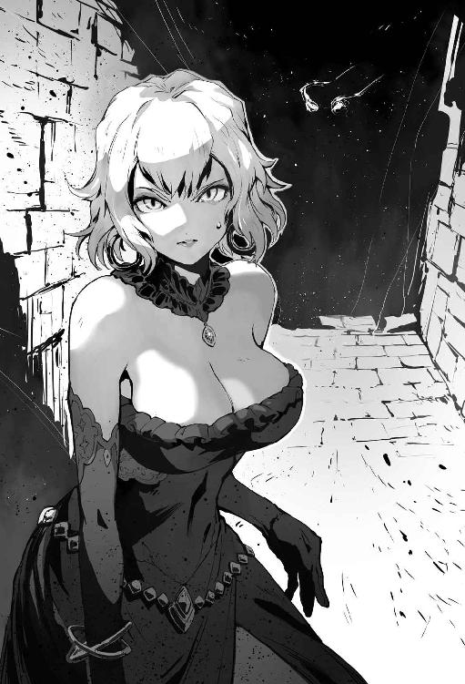

| 呼び出された殺戮者 (HJ NOVELS) | |
| 井戸正善 | |
| (2015) | |

遠野一二三が突き出した刀の切っ先は、目の前の少女の喉元にぴったりとそえられていた。ほっそりとした首筋を震わせて、涙を浮かべながら刀を見つめる少女は一言も発せずにいる。
日本刀は美しい武器だ。『匂いたつような』と言われる刃紋は、単なる曲面ではない、人の息吹を感じさせる個性を持っていて、鋭利な本性を美に昇華していた。
そして、
（美しい少女だ）
と、素早く少女の華奢な身体に視線を走らせた一二三は思う。
綺麗な長い銀髪を持ち、今は涙に濡れているものの青く澄んだ瞳には一切の悪意が見えない。視線が合う。怯えがありありと浮かぶ瞳は、動揺に揺れて、蒼白になった頬を涙が伝う。
少女が到底悪人には見えないことに、一二三は疑問を感じる。
（こういう事を進んで行うような少女には見えないが......）
視線を外さないまま、視野を広げて周囲を窺う。常人には難しい事だが、一二三には容易い。生死の境を行き来するような稽古の中でも、ひときわ無茶だった一対多の訓練の成果である。
見渡した室内は古風だが豪奢な作りの部屋で、二十帖ほどの広さがある。石造りの壁に窓はなく、いくつかの松明の灯りだけが揺らぐ。出入り口は、少女の向こう側に大きな両開きのドアが見えるだけだ。一二三と少女が立つ場所だけ、三十センチほど舞台のように高くなっていた。
周りでは、全身鎧をつけ、室内用だろう短槍を構えたいかにも『騎士』といった男たちが、一二三に槍先を向けたまま、怒りと困惑の表情を浮かべている。
「姫から離れろ！」
騎士の一人からの怒声に、一二三は毛ほども反応を示さない。冷静に周囲を窺い、全員の装備が同じもので、人数が六人であることを確認する。背後は見えないが、気配と音が人数を教えてくれる。
鎧は実に硬そうな金属鎧で、兜も頬当てまでしっかりついた一見隙の無いものだったが、ひと目見たのみで、一二三は刀を突き込む箇所のいくつかに目星をつけることができた。
（さて、これからどうしたもんかね）
立ち居振る舞いから、自分に敵う技量の者がいないことを感じながら、この状況に陥った経緯を思い出していた......。
序
その日、一二三は日課の朝稽古を終えて、道場正面に向かい、座して瞑想をしていた。
ゆっくりと吸い込んだ、キリッと冷えた朝の空気が、体の中を抜けていくのを感じながら、自分の中にある感情を抑えるため、微動だにせず、ただただ誰もいない道場内の雰囲気に触れていた。
異常ともいえる厳しい稽古を物心つく頃からやってきた一二三にとって、道場にて気を鎮めることは何よりもリラックスできる時間でもある。十八歳という年齢の割に落ち着いて見えるが、年相応というか、アニメやマンガ、小説なども人並みに楽しむことができる。武の才能とのめり込み具合以外は、ごく普通の青年なのだ。
隣には、愛用の居合刀がある。余分な装飾がないシンプルな黒拵えの刀だ。高価なものではないが、師から譲り受け、大事に大事に扱ってきた、無二の愛刀である。
ふと、突然背後に気配を見つけた。
数は二つ。しかし、悪意は感じない。
「......誰だ？」
「ほっほ、わしらの気配を感じられるか」
一二三の問いに、しわがれた男性の声が答えた。
振り向いた一二三の前には、ギリシャ神話に出てくるゼウスそのものの老翁と、飾り気の無い、武骨な長刀を腰に提げた戦国時代の武人そのままの偉丈夫が立っていた。
思わず眉をひそめる。
（なんつぅミスマッチなコンビだよ。それに......）
「......人ではないな？」
人間がもつ〝生活感〟とでもいうべきもの、言わば〝生きている〟という感じがしない。
「我は、元は人だがな」
今度は偉丈夫が答えた。
その立ち居振る舞いは、相当の達人であることを伝えてくる。一二三は脇に置いていた刀をすでに手元に引き寄せ、いつでも抜刀できるように構えている。
「そう緊張するな。悪い知らせではあるが、我らがお前に何かするというわけではない」
「悪い知らせ？」
「それを説明する前に、ちょいと自己紹介をしておこうかの」
老翁がひげをなでながら言う。
「わしは神じゃよ。まあ、いろんな宗教でいろんな神の話がでておるが、おおざっぱに言えば、この世界を管轄している神の代表みたいなもんじゃな。そして、こっちにいる侍が、この世界で武を司る神じゃな」
武を司る神だと紹介された男が、腕を組んでにっこりと笑った。
「お前のことは時々見ていたぞ。武人が少なくなった今の時代、お前ほどしっかりと稽古を積んだものもいない。天賦の才もあるが、なにより努力を積み重ね、人の限界を超えるに至ったこと、武の神として実に喜ばしい」
「じゃがの、お主がそこまでする理由がわからん。過去を見ても、放任気味ではあるが普通の家庭に育っておるし、とくにこれといって武術に打ち込むことになる原因が見当たらん」
武の神が言う通り、一二三の戦闘力はもはや自力でチートレベルである。冗談で書かれたんじゃないかとも思える、流派の始祖が残した技を全て体得し、まともにやりあえば道場の門下生全員と同時に立ち合っても簡単に勝てるだろう。
そこまでして戦う力を手に入れたのは、ある欲求によるものだったが、神を自称する目の前の二人には、それは見抜けないらしい。
「神と言っても、人の心を読んだりすることはできないんだな」
「わしらは万能ではないし、それなりに制限も受けておるよ。本来なら、こうして目の前に顕現するのも難しい。わしらの仕事は、この世界という舞台をつくるだけで、直接手を出したりはできんのだよ」
自称神の代表者は、嘆息混じりに首を振る。
「まあいい」
武の神が言う。
「時間もあまりないことだし、さっさと要件を伝えるべきだろう」
「そうじゃな......その〝悪い知らせ〟じゃが、もうすぐ、お主は違う世界へ飛ばされるのじゃ。そう、お主の部屋にいくつかあるファンタジー小説にあるような、異世界召喚というやつで、この世界から別の世界へな」
一二三がふっと眉をひそめると、武の神がたしなめるように言った。
「ああ、我らがそうするわけではないぞ。勘違いするなよ」
「では、なぜそうなる？」
神だと信じたわけではないが、嘘ではなさそうだと一二三は感じていた。
「向こうの世界の誰かがな、無理に両世界をつなぐ〝歪み〟を作ってしまったのじゃ。さらに、召喚のための目印がお主についてしまっておる。お主が向こうへ行かねば、歪みは元に戻らず、双方の世界に様々な影響を及ぼすのじゃ」
なるほど、と一二三は思った。彼はあらゆるジャンルを読む読書家で、中でもそういう小説は割と好きで何冊か読んだ。要するにこの二人の自称神様は、一二三が混乱しないように説明をしに来たのだろう。
（お優しいことで。さすがは神様というべきか）
「それでな、問答無用で歪みに放り込んでも良いのだが、自分の世界の人間だからな、多少は何かしらしてやりたいと思ってな」
「行き先はいわゆる剣と魔法の世界というやつだ。危険な世界である分、お前が鍛えた武の力も、存分に活かせるだろう」
「ふむ......」
一二三は眼を閉じて、しばし考えにふけった。
以前より一二三の中にくすぶっていた〝ある感情〟が、じんじんと刺激されるのを感じる。
「まあ、話はわかった」
一二三は、とりあえずその話を信じてみることにした。
「それで、俺に異世界へ行って何をしろと？」
「なに、別に向こうで魔王を倒せとか、勇者になれとかは言わんよ」
一二三の質問に、老翁が笑顔で答えた。
「というより、我らとしては、お前に向こうでどのように過ごしてもらってもかまわんのだ。言わば、こちらの世界から無理矢理誘拐するような行為だからな。あちらで何か頼まれるだろうが、別に聞いても聞かなくても良い」
武の神は、口をへの字に曲げて怒っている。自分たちが管理する世界を荒らされて、気分が良いはずがないのだ。
「それにな、あちらはこの世界と違い、凶悪な魔物や魔法があり、エルフやドワーフなどの亜人が存在する。そういう世界にいきなり放り込まれても、お主とて困るじゃろう」
「だから、お前が困惑しないように、我らがあらかじめ説明をして、また、あちらの世界でも戦える力をやろうと思ってな」
「ちから？ 魔法が使えるようになったりするのか？」
一二三は魔法を使うイメージをしてみたが、どうも思い浮かばない。呪文なぞを詠唱している間に、斬りつけた方が早い気がする。仮に詠唱がいらなくても、火や水が飛んでくるくらいなら、簡単によけられるだろう。目隠しをして矢を避けられる一二三には造作もない。
「いやいや、魔法というのはあちらの世界にだけある、人のイメージの力なのじゃ。だから、わしからはこういうふうにな」
老翁が何気なく手をかざした瞬間、一二三が持つ刀が熱を帯びた気がした。
「神としての力を、その刀に少しだけ分けてやったのじゃよ。切れ味を最大限に高め、折れず曲がらず、錆びぬし欠けぬ。力を直接生き物に与えることはできんが、無力な神のせめてもの贈り物じゃ」
「そして我からは、武神の加護をやろう。いずれお前が立派に道場でも立ち上げるときにでもと思ったのだが、まあいい。今のお前の武の能力を飛躍的に伸ばす効果がある。実力がものをいう世界らしいからな。役に立つだろう」
「なるほど......」
説明を受け、武人の加護とやらを得た一二三はふと、立ち上がって道場の隅にある巻き藁の前に進んだ。
一閃。
腰から抜き放った刀は、巻き藁を切るにとどまらず、道場の壁を裂く。木板の壁が弾け、鉄骨にも傷が入っているのが見える。
「......これはひどい」
巻き藁のみを断つつもりが、刃に触れてもいない部分までがざっくりと割れてしまった。
「まあ、使っているうちに慣れるじゃろう」
「そろそろ、召喚の影響が出るはずだが......」
武の神がつぶやくと同時に、一二三の足元に幾何学模様が浮かび上がった。
「これが......」
「始まりよったな......。一二三よ、これから大変だろうが、なんとか頑張ってくれ。お主はお主の生きたいように生きればいい」
「武の神としては、是非お前の武を、あちらの世界で広げて欲しいところだが、まあ、無理にとは言わん」
「やあやあ、感動的なお別れのシーンですね」
不意に、笑いをこらえたような軽い声が聞こえた。
「......死神か。貴様を呼んだ覚えはないぞ」
武の神が渋い顔をする。
「呼ばれて来たわけじゃありませんよ」
一二三の背後に、燕尾服の痩せた男が現れた。薄ら笑いの顔は、過度に青白く、まるで死体が話しているようだ。
「私はね、この方をずっと見ていたんですよ。これほどの死の匂いを放つ人間はそうはいません」
死神と呼ばれた男は、手を打ち合わせて笑った。
「人を殺すことを望む者は多くおりますが、それがここまで色濃く魂にからみついた人間は初めてです」
一二三は死神に目線だけを向けて、無表情で黙っている。肯定でも否定でもなく、ただ死神の言葉を聞いている。
「殺伐を好むか......。それがお主の武への熱意の源だと？」
武の神の問いかけに、一二三は答えない。
「それがめでたくも、異世界への招待を得たとなれば、これほど喜ばしいことはありません！ さあ、剣と魔法の世界で、思う様その力を示すのです。貴方の前に立つもの全て、その刀で斬り捨てることができるでしょう、そう、かの世界の神ですら！」
いちいち芝居がかった仕草で、死神は一二三の前に文字通り躍り出た。
「そうすれば、私も死神として魂を扱う機会がふえるのですよ。有り体に言えば、力を増すことができるのです。先払いのお礼として、微力ながら私からもプレゼントを」
死神が大げさな身振りで手のひらを向けると、一二三の体に黒い霧が染み込んでいく。
「私が最も得意とする闇の属性を差し上げました。向こうでは貴方のイメージ次第で闇魔法が使えるでしょう。それも、人知を超えたレベルで」
「もらえるものはもらっておこう」
「快く受け取ってもらえたようでなにより。魔素の無いこの世界では発現しませんが、あちらで試してみると良いでしょう」
一二三の言葉に、にっこりと笑みを浮かべた死神は、残る二人の神にウインクをする。
「俺からも礼をしておこう」
「え？」
死神が視線を戻す前に、一二三の刀は死神を袈裟懸けに斬り裂いていた。滑り落ちた上半身が、見た目より重たい音を立てて床に落ちた。
驚愕に目を見開いていた死神がぱくぱくと口を開いて、そのまま砂になって崩れる。
「ほう、本当に神も斬れたか。こいつが本当に神かどうかはわからんけどな。だが、誰であろうと、俺を利用しようとしたことは許せん」
一二三は無表情のまま、刃こぼれどころか曇りもみられない刀をじっと見ている。
「この刀のことは感謝しよう。俺はこれで存分に殺せる」
まるでスイッチが切り替わったかのように一瞬前とはまるで別の人間のような、凄絶な笑みで一二三は呟いた。
「何を......」
一二三の突然の凶行に驚愕したのは、残った二柱の神も同じようだ。
「まるで誘拐のようだというのは確かだが、今回の話は俺にとっては非常に嬉しいことなんだ」
一言も発しない二柱の神に一二三は目線を合わせずに語る。
「初めて生きている者を......神を生き物と言って良いかはわからんが......斬った。とても気分がいい。武の道に入って十余年、腕が上がれば上がるほど、命を奪う欲求は募るばかりだった。剣と魔法の世界といったな？ 魔物がいると。つまり命を奪っていい相手がいるわけだ。テンプレで言えば、人の命は日本よりずっと軽い扱いだろう。理由があれば人を斬ることもあるんだろう」
血は付いていないが、血振りをして納刀する。
魔法陣に触れている足元から、少しずつ一二三の身体が透けていくのが見える。
「どうやら、そろそろ転移のようじゃな」
「だ、だがこのままこいつを行かせてもいいのか？」
ヒゲをしごく老神は落ち着いたようだが、武の神には焦りが見える。
「まあ、仕方あるまい。神を殺したとはいえ、転移が始まってしまえばもはやわしらにはどうにもできん」
神たちが話す間にも、一二三は腰までが消えかかっていた。
「神様たち」
「なんじゃ？」
「また会おう。俺はあちらでもっとたくさんの命を奪い、恐怖で世界を満たす。そしてさらに力をつけて戻ってくるからな。まずは俺を呼び出した連中を始末する。俺は俺の意思を無視して無理やり面倒事をやらされることが嫌いだからな」
一二三は自分の中に大きな力が渦巻くのを感じていた。殺すための力が。そして自分を呼び出した者への感謝と怒りが。
気持ちを整えるようにひと呼吸おく。
「俺は俺の倫理によって、あちらの世界を変えてみよう。痴人の夢かもしれないが......力であちらの世界をかき回して、もっと力をつけたら何とかして戻ってこよう。そしてこちらの、このつまらない世界をも、かき回してやろう」
「な、なにを......」
「じゃあな」
神の背筋にすら冷気を感じさせる笑みを残して、一二三はこの世界から消えた。
「わしらは、ひょっとするととんでもない者を見送ってしまったのかもしれんな......」
そして、転移が完了したその瞬間、鞘を走った刀が目の前の少女に突きつけられた。
「え......？」
「お前が、俺を呼び出したのか？」
一二三が少女へ向ける目は、冷たい。
「えっ？ えっ......？」
第一章 呼び出された殺戮者
「貴様！ 何をする！」
何が起きているか理解できない少女と、突然の蛮行に激昂する騎士たち。
対して、一二三は氷のように冷ややかに周囲を観察していた。
六人の騎士は、じりじりと一二三を囲み、隙あらば手槍を突きこんでやろうと構えている。
「ひうぅ......」
少女は自分が刃物を突きつけられていることにようやく気付いたのか、困惑の表情が怯えに変わっていく。
「無礼な！ この方を誰と心得るか！」
（知らんよ）
騎士の怒声に心の中だけで投げやりに返答して無視する。
「答えろ。俺を呼び出したのはお前か」
「うぅ......」
「ああ、ゆっくりと話せよ。うっかり刃が滑ったら、それだけでお前は死ぬぞ」
「ぅぐ......」
助けを求めて目だけで周りを見渡すが、騎士たちでは少女の期待には応えられそうにない。騎士が半歩踏み出す間に、少しだけ刀を滑らせるだけで少女は死ぬのだ。
「い、異世界の勇者様......あなたを召喚したのは、わたくしで間違いありません......」
「お前は何者で、俺に何を求めている？」
「わたくしは、この国オーソングランデの王女、イメラリア・トリエ・オーソングランデです......」
一二三に目を合わせようとするものの、怖くてできないという事を繰り返しながら、ポツポツと話し始めた。
「我が国は、今は凶悪な亜人たちとの戦いで疲弊しています......。そこで、大昔の文献にあった古代の召喚魔法を再現することになりました......。王家の血を引く者のみが使えるという秘術でしたので、王族の中でも特に魔力が高いわたくしが、勇者様を呼び出す役を仰せつかったのです......」
（なるほど。ファンタジーでよくある悪と戦うための勇者としての召喚というやつか。そして......）
「仰せつかった？ では、この儀式は誰が主導した？」
「そ、それは......」
一二三の目にありありと浮かぶ怒りの色を見てしまったイメラリア王女は、その名を告げた時にどうなるかを想像してしまった。
だが、ここまでの情報で、一二三にも楽に推察ができる。
「王だな。第一王女ほどの地位の奴に指示を出せる奴など、それくらいだろう。王妃かもしれんが。お前の親なら、お前がしでかした事の責任を取るのも道理だな」
「あ......」
自分の失策だと思ったか、イメラリアは目を見開いて見るからに狼狽し始めた。
今目の前にいる男が、自分が想像したような正義感にあふれる勇者様ではなく、地位や権威など一切気にしない、ただ加害者としてしか自分を見ていない、極めて危険な人物だと気づいたのだ。
「ち、違います！ これはわたくしが......」
「いくつだ？」
「え？」
「お前の年齢だ」
「あ、じゅ、14歳です！」
不意に歳を聞かれて、一瞬キョトンとするものの、慌てて答える王女。
「そうか......」
少しだけ、一二三の刀が離れた。
彼の中にある、実に身勝手ないくつかの基準の中に、〝中学生まではその行動に親が責任を持つべき〟というものがある。他に〝犯罪者に人権は無い〟や〝宗教家や教育者の言うことには基本的に耳を貸さない〟などがあるが、そのほとんどが日本の法や慣習とは合わず、一二三がジリジリとストレスを溜める一因にもなった。
「では、殺すべきはお前の親か」
「えっ......」
その瞬間、一二三は振り向きざまに刀を振るう。
隙ができたと見て、不意打ちを狙った背後の騎士が、鎧の首元の隙間から赤い血潮を吹き散らしながら、声も出せずに倒れた。
「そんなに殺気を撒き散らしたら、嫌でもわかるぞ。未熟者め」
いつの間にか、切っ先は再びイメラリアの喉元へと戻っていた。まるでそこから動かしていないかのように、全く同じ場所へ。
その、たった一度の斬撃で、残った騎士は息を飲み、足がすくむ。
城仕えの中でも、今回の儀式に立ち会った彼らはエリート中のエリートで、剣技において国内でもトップグループにいるのだ。
だが、一二三の剣線は誰一人として目で追うことができなかった。それどころか、いつイメラリアから刀が離れたかすら気付くことができなかった。
一二三の剣術に、騎士たちの驚愕がいや増す。
彼らが使う剣や槍は、叩きつけて重さと勢いで断ち切るための造りになっている。一二三の持つ日本刀のように、薄く細い刀では、儀式のための薄い衣装のみを身につけたイメラリアはともかく、鎧を着た自分たちに傷をつけられるとは思っていなかったのだ。
戦場における甲冑剣術も修めた一二三にとって、鎧の隙間から急所を狙うことは常識だったのだが、文化の違いをお互いに理解できてはいない。
不本意であろうが、実力は確かに勇者として十分すぎるものであると、死んだ騎士は自らの命で証明した。
「貴様ぁ！」
激昂した騎士が声を荒げるが、その足を踏み出すことができない。
対し、一二三はごく冷静だ。
「死にたければ踏み込んで来い。用があるのはこの女だけだ」
刀を降ろし、静かに見回しながら挑発する。
その瞬間、残った五人の騎士たちが一斉に突きかかった。
正面と両脇、背後から息を合わせて繰り出された槍は、しかし一二三にかすりもしない。
「......転換法」
つぶやきながら一二三は身体を滑らせるように回転しながら一人の騎士の横を移動し、撫でるようにその腕に手をそえた。
まるで踊るように一二三と位置を入れ替えられた騎士に、仲間の槍が突きたてられる。
「ぐおっ......がはっ」
ほとんどが鎧にはじかれるが、一つが鎧のつなぎ目から突き刺さり、ひるんだ隙に一二三の刀で首を裂かれる。
仲間を刺したことで動きが止まった騎士も、次の瞬間には目から脳を貫かれて絶命する。
瞬時に二人を失い、残り三人になった騎士は態勢を立て直すために距離を取った。
「弱い」
一二三は吐き捨てるようになじった。
「お城の騎士様だろう？ もう少し手応えがあるかと思ったが......」
「ぐぐ......」
「まだやるか？」
「貴様だけは許さん！」
騎士としてその強さを否定された彼らは、もはや王女を守ることよりも一二三を殺すことに頭を支配されていた。
三人同時に繰り出される短槍の突きや打ち下ろしを、一二三は散歩でもしているかのような軽やかな足取りでくぐり抜けて行く。
そして一人は突き出した槍を取られて体勢が崩れたところに喉を切り裂かれ、一人は踏み込んだ膝を後ろから踏まれて跪いたまま、頚椎に刀を刺し込まれた。
最後の一人は、大振りに槍を振るったところで刀の柄頭を打ち当てられて小指を叩き折られ、右手を抱えてうずくまってしまった。
「終わりだ」
がら空きになった脇から刀を突きこんで心臓を切り裂いた一二三は、転移後も違和感なく動けたと満足し、血濡れの刃を再びイメラリアへ向けた。
近衛騎士の強さに絶対の信頼を置いていたイメラリアは、数瞬で血の海に沈んだ騎士たちを見ていられなかった。信じられなかった。
「あぅ......あう......」
「さあ、お前の親のところへ案内してもらおうか」
何人も殺したというのに、一二三はなんでもない調子で語り、刀をゆっくりと鞘へ納めた。
☆
王女の先導で、城の中を歩く。
使用人や騎士たちが遠巻きに見ているが、誰も声をかけなかった。憔悴した様子の王女に、見慣れない青年。誰も彼もがその状況を掴めない。
一二三が召喚されたあの部屋は、騎士の死体を放置したまま施錠したため、あの部屋で起きた惨劇は、まだ誰にも知られていない。使用人たちは遠ざけられ、重要な何かが行われるという事だけが、城で働く者のほとんどに伝えられている。
（立派な建物だ。以前にネットで見たような、西洋の城のイメージそのままだな）
目線だけを動かしながら、情報を収集していく。
（使用人のような連中は、大体が麻の服か。やはり前の世界で言う中世程度の文化レベルなのか？ イメラリアの服はだいぶ良い生地を使っているようだが......）
歩きながら、ふと思い立った一二三は、転移前に受け取った闇の属性魔法を試してみることにした。転移後から体内にある違和感がおそらく魔力だろうという予測はできていたのだ。
魔力を左手に集めるイメージを浮かべると、黒い霧のようなものが左手から浮かび上がってくる。
（闇魔法というと......）
以前にどこかで読んだ小説を思い出しながら、魔法を使うイメージを固める。
直径二十センチほどの黒い円が目の前に浮かび、一二三はそこに刀を差し入れてみた。
（入れることはできた。あとは......）
腰の後ろへ回した右手に、闇の奥から刀を掴み取るイメージを浮かべる。握り締めると、しっかりと手になじむ柄の感触があった。
（見なくても取り出し可能だな。本当に考える通りの事ができるな）
そんな実験をしながら、足音を立てずに歩く一二三の前を、ヒールの硬質な音を響かせながら怖々と歩くイメラリアは、ぐるぐると回る思考を整理できずにいた。
このまま父である王のところへ彼を連れて行っていいのか？
あるいはこのままどこか別の場所へ連れて行くべきか？
連れて行ってそれからどうする？
自分が騙したと知ったとき、何をされる？
いや、自分が殺されたとして、その後は？
結局は、誰か城の者を捕まえて、父の元へたどり着くのではないか？
「わたくしは、どうしてこんな事をしているのでしょうか......」
誰にも聞こえないほどの小さな声で呟いたつもりが、静かな同行者には聞こえていたらしい。
「その答えは、お前の中にしか無いぞ」
「え？」
あるとは思わなかった返答に、思わず振り向いてしまう。
「やらされた事もやってしまった事も、結局はやった奴が結果を受け止めるしかないんだ。そこに悪意があったかとか、利益があったかとか、喜ばれたかとか傷つけたかとかは関係ない。行動と結果があるだけだ」
その言葉に、また頭の中が思考で埋まっていく。
「行動は全て自分に跳ね返ってくる。こういう状況になった理由は、お前の行動以外に原因を求めても意味がないぞ」
「は、はぁ......」
一二三の言葉がイメラリアの中をかき乱している間に、いつの間にか謁見の間の前へとたどり着いていた。王は、この中で勇者の来訪を待ちわびているのだろう。
何も知らない騎士が、にこやかに迎えた。
「王女様、こちらが例の......」
「ええ、父にご紹介します。扉を開けてください」
ここまで来てしまったことで、イメラリアには一つの覚悟ができていた。騎士への言葉も、先ほどまでとは異なり、大分落ち着いている。
広々とした謁見の間には、王を中心に王妃と王子と思われる人物が壇上にあり、騎士や文官が部屋の両脇にずらりと並んでいた。
さりげなく闇に刀を収納し隠していた一二三は、咎められることもなくイメラリアに続いて部屋へと踏み込む。
王の前、五メートルほどの距離をとって、イメラリアは立ち止まる。一二三はその斜め後ろに立っていた。跪かない事に一部の者が眉をひそめているが、気にしない。
イメラリアが一礼すると、王が口を開いた。
「イメラリアよ、その者が勇者か？」
だが、それに答えたのは王女ではなかった。
「いいや、勇者なんて来ていないぞ」
一二三は王の目をまっすぐ見ている。
「無礼であろう！ 王の許しなく直言するでない！」
五十歳くらいだろうか、立派なヒゲを蓄えた文官らしき男が叫ぶが、一二三はこれを完全に無視した。
「この女が呼び出したのは、異世界から無理やり引きずり出された、哀れな被害者であり......」
闇から抜き放たれた刀が、美しくも怪しい光を放つ。
「その罪を、命で償わせる、殺戮者だ」
正眼の構えをとった一二三は、薄く笑った。
☆
少しの静寂のあと、謁見の間は混乱の極みに陥った。
「なんだあの剣は！ なぜ武器を持ったまま入室させた！」
「王の御前であるぞ！」
「近衛は何をしている！ さっさと取り押さえろ！」
文官は後ずさり、待機していた騎士たちが素早く前に出る。
城内での基本装備なのだろう。召喚されたあの部屋にいた騎士たちと同様、全員が短槍を構えている。
「お待ちください！」
一二三をかばうように、イメラリアは細い腕を精一杯開いて叫んだ。
「勇者様も、どうかわたくしの話を聞いてください」
「......言ってみろ」
「ありがとうございます......」
自分の言葉が無視されなかったことに、イメラリアは少しだけ安堵した。だが、これからが問題なのだと、改めて気を引き締める。
「待て、イメラリアよ」
王の声に、イメラリアは自分の父の姿を仰ぎ見た。
ゆったりと玉座に収まってはいるが、表情には苛立ちが見える。
「まず、わしと話させろ。勇者よ、わしはウィリバルケン・ゴーデンハイム・オーソングランデだ。この国、オーソングランデの王である」
一二三は、目線をイメラリアから動かさない。
「ゆ、勇者様？」
「お前の話を聞くと言った。早く言え」
自分を完全に無視した言い草に、王は玉座の肘掛けを殴りつけた。
「わしを無視するとは！ 勇者とはいえ許さんぞ！ 近衛ども、こやつを取り押さえろ！ 多少傷をつけてもかまわん！」
王の命令で左右と背後から四人が突きかかるが、ひと呼吸で全員が斬り伏せられた。
派手さは無いが、刀のひと振りひと振りが、無駄なく人を殺す。
その流麗さと残酷さに、謁見の間の誰もが息を飲んだ。
「勇者様」
「なんだ？」
「お名前を、お聞かせください」
「......一二三だ」
少しだけ考えて、一二三は名前のみを答えた。遠野の苗字は、あるいはもう捨ててしまってもいいかもしれない、と考えたのだ。神を殺し、世界を越えて、人を殺した。
もとより家族に未練はないが、自分は一人でやってきたのだという事を、あえて自らに言い聞かせたかったのかもしれない。
名を聞いて、イメラリアはまっすぐと一二三の目を見つめて言った。
「一二三様、わたくしたちの勝手な都合でこの世界へお呼びしたこと、心より、お詫び申し上げます。大変、申し訳ありませんでした」
深々と頭を下げたイメラリアに、周囲の人々はざわめいた。
一人の無礼な若者に、王族が頭を下げているのだ。身分が固定されて上下関係がはっきりとしているこの世界では、異例を通り越して異常なことだった。
「この度の事、全ての罪はわたくしにあります。一二三様のお怒りを鎮めるために、わたくしにできることならば何でもさせていただきます。......もし、わたくしの命をお望みであれば、この場で斬り捨てていただいても構いません」
イメラリアの青い瞳。その視線は、一二三から離れない。覚悟を示すように、じっと彼の言葉を待っているようだった。
だが、声を上げたのは王だ。
「馬鹿な！ 何故そのような事になるのだ！ この者は勇者ではないのか？ イメラリア、説明しろ！」
王は怒りで声がうわずっている。
「何故王女たるお前が頭を下げねばならんのだ？ 儀式に参加した騎士たちはどうした？ いったい何がどうなっておる！」
「......ご説明しましょう」
イメラリアの口から、その場の者たちを驚愕させる事実が語られる。
国を救うべく呼び出した男に、既に騎士が何人も殺されている。
そして驚くべき事に、王の〝罪〟を糾弾、いや、罰を与えようと言うのだ。絶対君主たる王へ向かって、そのような事は許されるものではない。
少なくとも、この世界の人々の感覚では。
「一二三と言ったな。今ならまだ間に合う。わしに跪き、この王国へ尽くすことを誓うのだ。お前の能力ならば、高い地位も得られるであろう。この場での無礼も罪も、今ならば見逃さぬこともない」
人が殺されているのに、とんでもない発言であったが、文官たちの反応から、王の権力というのはそれほどのものなのだという事が窺える。
ありえない好条件だが、危険を感じた事による焦りと、大きな力が目の前にある事に欲が出たのだろう。王は自信たっぷりに、壇上から一二三を見下ろした。
ただ、目の前の異常な男に、それは悪手だった。
「くだらん」
吐き捨てた一二三は、さらに言葉を続けた。
「驚くべき阿呆だな。自分の娘が必死にお前をかばっているのがわからんのか？ およそ権力に溺れた者ほど救いがたいものはないと思っていたが、これは極めつきだな。許しを乞うべき立場なのはどっちだ？ どう考えても俺じゃない。娘を使って自分の国、自分の栄達のために一人の人間の未来を奪おうとしたお前だ」
「ひ、一二三様......」
イメラリアが想定していた、もっとも恐ろしい事態へと進みつつある。
だが、もう遅かった。
刀を構え直した一二三に、さらに数人の騎士が躍りかかったが、傷一つ付けることもできずに殺された。
すでにこの場に戦える者は片手ほどの数もいない。
文官は壁まで下がり、中には目の前の凶行に腰を抜かして座り込んでいる者もいる。王子や王妃と思われる二人も、青ざめて事態を見ていることしかできないようだ。
「で、ではどうするというのだ？ どうしろというのだ？ 今更お前を元の世界へ戻すことはできん。復活させることができたのは、召喚の儀式のみで、送還のやり方は失われてしまっている」
王の言葉に、一二三はイメラリアを見る。うつむく仕草で、帰すことができないのが事実だと示したイメラリアが、すがるような目を向けてくる。
「全てはわたくしが悪いのです。ですから......」
「親が素直に謝罪をするなら、まあ金銭で納得しよう。もちろん、お前たちの希望は聞かない。部下になるなど以ての外だ」
「お金ですか......」
王女は自分の財産は持っていない。自分の財布で何かを買うということがないからだ。
「もちろん、支払うのはこの国だ」
「な、何故......」
「犯人は王だろう。王の罪は国の罪だ。そうだな......」
一二三は、本心ではそこまで金が欲しいわけでもなかった。この世界で生きていくのに、当座の資金が欲しいと思った程度だ。ただ、王の態度は気に入らなかったし、この後の反応を見たいと思って金額を指定した。
「この国の金庫から三割をもらおう。ああ、もちろん公式に謝罪をしてもらうぞ。国民に王が何をしでかして、結果として何を失ったかをしっかりと周知させてもらおう」
「それは......」
イメラリアにはわかってしまう。この条件を父は飲めない。
膨大な金額になる金銭はもちろん問題だが、王の失態を公表するという事は、父の性格からも、王族の威厳からも絶対にできない事だ。退位の理由として十分な理由になる。
「ふぅ......お前は馬鹿か。そんな条件が飲めるわけなかろうが。交渉をしたいならもう少し現実を見て物事を語らぬか」
王は一二三の話を聞いて鼻で笑った。
この期に及んで、まだ自分が優位であると示す事を諦めていない。
「では貴様ら平民が数年は食うに困らぬ程度の金をくれてやろう。多少は腕が立つようだが、狂犬は要らぬ。金をやるからすぐに城から出て行くが良い」
威厳を示すように、まるで余裕があるかのように語る王に、家臣たちは多少は落ち着きが取り戻せたように見えた。王は不可侵かつ誰よりも上位であるという共通認識を確かめるように、お互いの顔を見合わせる。
「最期まで、なんにもわからないか。哀れな奴だな」
ため息混じりに呟いた一二三の言葉を、何人が聞き取れただろうか？
イメラリアには聞こえたが、その意味を理解する前に、次の光景が目に飛び込んできた。
「死ね」
足音を殺した見たこともない歩法で、一二三は一気に王へ迫る。
草を刈るような音を立てて、王の首は断ち切られた。
「ひぃっ......」
となりに座る王妃の膝の上に首が転げ落ち、王妃は恐怖に意識を失ってしまった。
驚愕した王子も同様に気絶してしまう。
「な、なんてこと......」
「言っただろう。子の責任は親が取る。今回の場合は親が首謀者だったからな。しかも示談の条件を出したのに、まだ自分の罪に気づいていなかったからな。死んで当然だ」
懐紙で刃を拭い、納刀しながら一二三が言う。その表情には悪意の欠片もない。
「残念だったな。お前が思うよりもずっと、お前の父親は馬鹿だった」
「わ、わたくしが責任を......」
うわごとのようにつぶやくイメラリアに、一二三は言葉を続ける。
「お前は反省した。それに父親の言う事に従ってやったことだろう？ 後は勝手に賠償金をもらっていくからな。それで手打ちだ」
もはや家臣たちには言葉もない。
恐怖と混乱で、誰ひとり動くことができなくなっていた。
ただ一人、その中でも年若い青年騎士が、泣き崩れた王女を見て我に返ったらしい。
「こ、このまま帰れると思うな！」
彼だけは何か特別な立場だったのだろうか。一人だけ槍ではなく剣を抜き、一二三へと迫る。
「遅い」
刀を抜く必要もないと判断した一二三は、入身と呼ばれる動きで騎士の横を通り過ぎながら、相手の顎をすくい上げ、そのまま石造りの床に叩きつけた。
新たな犠牲者の血が、床に広がる。
謁見の間は、中央の通路だけは分厚いカーペットが敷かれていたが、若い騎士は運が悪かった。
「見ろ」
イメラリアは、一二三に言われて怖々と目線を上げた。
そこにあるのは、ほんの少し前とはまるで違う、地獄のような光景だった。
数人の騎士の死体、壇上には気を失った母と弟。
そして......。
「これがお前の父親が選択した事の結果だ。全ては自分に従うものだと信じて疑わなかった愚か者と......」
一二三は、イメラリアを見る。
「少しは反省し、状況を良くしようとしたお前との違いだ」
全くもって身勝手すぎる一二三の言い分だが、誰も何も言えない。
形だけ言えば、一生を左右する被害を受けた者が、その首謀者に復讐しただけなのだ。王国の法では、誘拐犯を殺して逃れることは当然の権利だが一二三は知らない。
状況によって私的に犯罪者を誅する事はよくあるが、討たれたのが王であるなど、異常すぎる事態である。
座り込んでしまったイメラリアは、頭の中が整理できていない。目の前の光景をきちんと把握できているかも怪しいが、確かに視線は状況を見つめていた。
「さて」
さっと周りを見渡した一二三が、一人の男性の前に進む。
「な、何を......」
恰幅の良い、五十歳くらいの男だ。
玉座の近くに立っているから、この場の者の中でも地位が高いのだろう。
「お前は？」
「......この国の宰相を務めている、アドル・フィオル・ヴィンジャーだ」
震える膝を必死に抑えながら答える姿を、一二三は無表情に見据えた。
「怯えなくていい。俺に敵対しなければ何もしない。それより、この城の金庫へ案内してくれ。今すぐに」
疑問の表情を浮かべるアドルに、一二三は軽い調子で言い放った。
「賠償金をもらっていく」
城の金庫までアドルに先導させ、警備の兵にもアドルが声をかけて中に入った。
多くの金貨・銀貨が箱に入って積み上げられた部屋に入ると、さっさと闇魔法で半分を収納してしまった。
三割の約束だったはずだと、アドルに抗議の視線を向けられたが、
「その条件は向こうから断っただろうが。命は失ったが、そんなものに価値はないからな」
と、さらりと言い放った。
☆
すっかり風通しが良くなった金庫を前にして、今後の国政について頭を抱えるアドルを置いて、出口と思しき方向へ悠々と歩いていた一二三の前に、先程まで謁見の間で泣いていたはずのイメラリアが現れた。
「一二三様、お待ちください」
「何だ？ 俺の用は終わったぞ」
「まずは、この度のお詫びを......」
深々と頭を下げるイメラリアに、不審な目を向ける。
ついさっき、自分の父親を殺した男が相手なのだ。論理はさておき、感情的にはとても許せるものではないだろう。
「わたくしは、この度の事で自分の浅はかさを知りました。もう引き返すことは叶いませんが、わたくしは、自分の行動の結果を考えることなく、言われるがままに生きていた事に、今更気がつきました。そして......」
顔を上げたイメラリアの表情は、表情を隠し、冷徹に事を進める為政者のそれになっていた。
「我が国オーソングランデは、貴方を許しません。わたくしは、これから母や弟を支えてこの国を強くしていきます。そしていつか、他力本願ではない自分たちの国の力で、貴方に復讐いたします」
「ふふっ」
耐え切れず、一二三が吹き出した。
「何なら、今からやりあってもいいぞ？」
「いえ、今の我が国の兵力では、貴方に歯が立ちませんでしょう。そのくらいの事は、わたくしにもわかります。わたくしは、わたくしの責任で貴方とことを構えるだけの人間になり、それから貴方に復讐をします」
「そうか。では、その時を楽しみにしておこう。......いい顔をするようになったな」
「ありがとうございます。では、一刻も早くここからご退去くださいませ。出口はあちらですわ」
示された方向へ、一二三が歩き出す。
背後から騎士が近づこうとするのを、イメラリアは手を挙げて制した。無駄な事だとわかっているのだ。
「......第三騎士隊で彼がこの国を出るまで監視しなさい。逐一わたくしへ報告を入れること。ただし、彼へ対する一切の攻撃、敵対行為は禁止します。国外に出てからは、その国にいる潜伏隊に引き継ぎをするのです」
「かしこまりました」
攻撃を静止された騎士は、イメラリアの指令を受けて離れていった。
「お父様、仇を討てない弱いわたくしをお許し下さい。いつか、いつの日か......」
城門を抜けて街へと消えていく一二三の背中を見ながら、涸れたと思っていた涙がまた、頬を伝うのを感じていた。
こうして、神を殺し、王を殺した男が、異世界へと解き放たれた。
第二章 奴隷たちと監視役
街に出た一二三はどこへともなくゆるゆると歩いていく。
城を出て、貴族たちのものと思われる大きな屋敷が立ち並ぶエリアを抜けると、二階や三階建ての家が並び、商店や屋台が集まる商店区画にたどり着いた。
何かの肉や魚を焼いて売っている屋台からは良い匂いがする。
野菜を大量に積み上げた店では、いかにも庶民らしい質素な服を着た人たちが楽しそうに井戸端会議に花を咲かせている。
食堂は道端までテーブルが出ていて、老人たちがパイプを咥えて何やら語り合っていた。
老若男女、たくさんの人々が行き来し、何かの客引きの声があちこちで響き、喧騒をさらに一層大きくしていた。
服装は様々だが、あまり綺麗とは言えない。服飾産業はあまり発展していないのかもしれないと、一二三は思った。
ちなみに、一二三の格好は古武道の濃紺の道着に袴、足にはスニーカーというスタイルだ。他には見ない格好なので、何人かがチラチラと見てくるが、日本にいる時から道着で出歩く癖があったので、特に気にならない。
（王が無能でも、街の奴らはたくましく活きているというやつか。王が誰であろうと、自分の人生を謳歌しているようだな）
どんな時代でも世界でも庶民は逞しい、と一二三は思った。
闇魔法収納から銀貨を取り出し、適当な屋台で何かの肉の串焼きをいくつか買ってみた。銅貨五枚の串焼きを買うのに銀貨を出したら嫌がられたが、釣りはいらないと言うと、頼んだ量の倍を差し出された。
食べながら歩いていると、ふと見慣れない雰囲気の店を見かけた。
何かの商品を並べるわけでもなく、これといって呼び込みをしているわけでもない。暖簾のように黒い布を垂らした入口に、いかつい男が腕組みをして立っていた。
看板はあるが......一二三には読めない。
気になったので、声をかけてみることにした。
「なぁ」
「あぁ......なんだ？」
急に話しかけられて、男は眉をひそめて応じた。
「ここは何かの店なのか？」
「看板に書いてあるだろう。ここは奴隷屋だ。お前みたいな奴には関係ない店だ」
「関係ない？ 紹介でもいるのか？」
「......そんなもんはいらんが、ウチの奴隷は安くても金貨五十枚からだ。お前みたいな若造に払える金額じゃないだろう」
話は終わったと、男はまた視線を通りに向けた。
（奴隷か......）
一二三は、歩きながら考えていた今後の事について、再び考えを向ける。
（まずはこの世界を回ってみようと思ったが......）
さっきの会話の中でも、文字が読めない、金銭の価値がわからない、商取引のルールを知らないなど、必要な知識がまるで足りていない事が露呈してしまった。屋台で買い物はしたものの、釣りをもらっていないので、銀貨と銅貨の交換比率もわからない。
奴隷がいれば、そういう知識も得られるし、この世界で自由にやっていくのに何かと便利かもしれない。金はたっぷりある。城の金庫の半分の量をもらったのだ。多少高い奴隷を買っても、足りないということはないだろう。
裏切ったりするならば、始末すればいい。
「金貨というのはこれか？」
闇魔法収納から金貨と思われるコインを一枚出して、男に放り投げた。
「あ？ ......ああ、だが一枚や二枚じゃ......」
「手を出せ」
男の手首を掴んで手のひらを無理やり上に向けさせる。見た目からは想像できない一二三の腕力に驚く男の手の上に、さらに収納から金貨を三十枚ほどぶちまけた。
半分以上がこぼれて散らばるが、一二三は気にも留めない。
「うおっ!?」
「これは親切に教えてくれた礼だ。商品を見せてもらいたいんだが、いいな？」
呆然としていた男は、慌てて金貨を拾い集めてから、態度を百八十度変えて一二三を店内へ促した。
「こ、こちらでお待ちください！ だ、旦那様～！」
応接へ一二三を座らせた男は、店の奥に走って行ってしまった。どうやら、応対は別の人物が来るらしい。
ほとんど待たせることなく、地味ながら質の良さそうな服を着た男がやってきた。
「お待たせして申し訳ありません。この店を経営させていただいております、商人のウーラルと申します。門番風情のミドの奴に、大変な大盤振る舞いをしていただいたとか......」
笑顔ではあるが、その視線は初めて見る一二三を値踏みしているのが明らかだ。
「あれくらいは大したことじゃない。それよりも、ここで奴隷が買えると聞いたんだが」
「これは太っ腹で。当店は確かに奴隷を商っております。お客様は、奴隷を購入されるのは初めてでしょうか？ よろしければ、奴隷についてご説明をさせていただければと思うのですが」
「ああ、恥ずかしながら何も知らない田舎者でね。こちらからお願いしたいところだ」
「では......」
ウーラルの説明は要点をしっかり押さえて簡潔でわかりやすかった。
・奴隷は犯罪奴隷や借金奴隷、家族や村の為に売られた換金奴隷などがいる。
・犯罪奴隷はほぼ全員が国の奴隷となり、鉱山等で強制労働を強いられ、一般に出回ることは無い。
・一般に売りに出ているのは借金奴隷か換金奴隷で、この店にもこの二種しかいない。
・誘拐されて奴隷にされた者もいるが、誘拐はもちろん、そういった出自の奴隷を取り扱うだけで極刑に処されるので、まずまともな商人なら取り扱うことはない。
・奴隷は特殊な魔法による刺青でその行動を制限され、持ち主に反抗することはできなくなっている。
・奴隷は一切の権利が認められないが、理由なく殺すことは犯罪である。
「理由なくということは、理由があればいいのか？」
「その通りです。刺青による制限で主人やその家族に直接危害を加えることはできませんが、主人の物を盗んだり、主人の友人に害を及ぼした等の理由があれば、罪には問われません」
「正当な理由があると証明する必要は？」
「主人の証言があれば十分です」
なんとも穴だらけの法もあったものだと、一二三はため息をついた。
だが、都合が良い事ではある。
しばし目を閉じて考えていた一二三は、ウーラルに注文をつけた。
「今からいう条件に見合う奴隷はいるか？ 金額は気にしなくていい」
ウーラルは質の悪そうな羊皮紙を懐から取り出し、応接のテーブルにあった羽ペンにインクをつけて、次の言葉を待つ。
「充分な体力があり、旅に耐えられること。文字の読み書きができること。自分の身を守る程度には戦えること」
ささっと走り書きをしたウーラルが、ふと目線を上げてきた。
「男性か女性か、どちらがよろしいでしょうか？」
「どちらでも良い。問題は能力だ」
「かしこまりました。では準備をさせていただきますので、少々お待ちください」
ややあって、応接室へ戻ってきたウーラルに促され、さらに店の奥へと進む。
「こちらが、ご希望に合う商品でございます。どうぞご自由にお選びください」
「話しかけても？」
「もちろん構いません」
連れて行かれた部屋は広く、十人ほどの男女が手枷をつけられた状態で並ばされていた。シンプルな貫頭衣は茶色く汚れ、その表情は暗く、おどおどと一二三を見ている。どんな相手に買われるかで、彼らの運命が決まってしまうのだ。
奴隷の目に、自分はどう映るのか一二三は想像してみた。
とても金を稼いでいるような歳には見えないだろう。商人か貴族のボンボンにでも見えるか......と思ったが、自分の格好を振り返ると、そうは見えないだろうと苦笑する。
ふと、並んだ奴隷達の中で、端に隣り合って立つ二人の女が一二三の目にとまった。
一人は小柄で、一二三の首くらいまでの背丈。薄い青の髪に、柔らかな雰囲気の翠色の瞳をしている。全体的に線の細い印象を受ける体つきで、身長よりも幼く見えた。
もう一人は一二三と同じくらいの身長で、手足がスラリと長く、よく鍛えられたバランスのとれた身体をしていた。こちらは茶色の髪に赤みがかった瞳をしている。
（街でも見かけたが、こういう髪や目の色を見ると、文字通り隔世の感というか......。二人共整った顔をしているな。本当なら、娼館の経営者が買い取りそうな見た目だが）
「お前とお前、名は？」
「......オリガ」
小柄な方が、消え入りそうな声で答えた。茶髪は答えない。
生意気に睨んでくる茶髪は無視して、オリガに話しかける。
「ではオリガ、お前は何ができる？」
「......風と水の魔法が使える。それに......」
少しの逡巡を見せたあと、ぐっと息を飲んでから続きを話した。
「夜の相手もできます......」
「オリガ！」
オリガのつぶやきに、茶髪が声を荒げる。
ウーラルがムチを手に近づいてきたが、一二三は片手をあげて制した。
「カーシャ、私たちは彼に買ってもらうべきだと思う。どこかの変態貴族に買われるなんて、嫌......」
「そんな事！ こいつだってどんな奴かわからないじゃないか！」
茶髪はカーシャという名前らしい。
自分はそんな変な性癖があるように見えるだろうかと、ちょっとヘコむ。十八歳の一二三は人並みに性欲もあるし、女性が嫌いというわけでもない。
ただ今は、幾人もの命を奪った満足感が性欲を抑えているが......。
それが異常だと気づかない一二三は、さりげなくカーシャの両手に視線を走らせる。
「カーシャと言ったか。お前は両手で剣を使うんだな。それも両手剣じゃなくて片手剣二刀持ちか」
「な、なんで......」
「手の平と親指、人差し指を見たら大体わかる。筋肉のつき方と今の動きで大体の実力もわかる」
突然の指摘にカーシャだけでなく、オリガやウーラルも絶句している。それが当たっていると知っているのだ。
「た、確かにこのカーシャは剣をつかえます。私は実際には見ておりませんが、冒険者としてある程度稼いでいたようですので、腕の方も確かでしょう。オリガはカーシャと二人で仕事をしておりましたので、こちらの魔法の実力も中々のものです。二人共、仕事の失敗で多額の借金を抱えて奴隷堕ちしています」
ウーラルが補足をしてくれた。
オリガもカーシャも、その説明を苦々しい表情で聞いている。
（冒険者か......多分、ファンタジー小説で登場するような、採取や討伐を生業とする連中だろう。魔物が存在する世界という話だから、そういう職業もあるか）
「よし。ではお前たちに選ばせようか」
言い放った一二三の表情は、イメラリア王女に向けた冷徹な笑みだった。
「俺はこれから旅をする予定だ。体力もいるし、戦いにもなるだろう。その代わり、俺を裏切らずについて来ることができるなら、楽しい人生を約束する」
「何を言ってるんだか。奴隷になったアタシたちに楽しい人生なんて......」
「私は、ついていきます」
オリガは小さな声で、しかしはっきりと一二三を選んだ。翠の瞳はしっかりと一二三を見据えている。少しだけ怯えているのだろう。うっすらと涙で揺れているのが見えた。
（やれやれ、こっちに来てから女性に怯えられてばかりだな）
自業自得を棚に上げ、「どうする？」と一二三はカーシャの方を見る。
問われ、カーシャは動揺していた。
この男は何を訳のわからないことを言っているのだろう？
なぜオリガはこの男について行く気なのだろう？
目の前の男の顔を見る。
笑顔ではあるが、見れば見るほどなぜか背筋が凍る。
こいつは危ない奴だ。とびきり危険な事を何のためらいもなくやる奴だと、直感がガンガンと警鐘を鳴らす。言葉よりもより直接的に、一二三の瞳の奥にある何かが、カーシャの心の中に不安の闇を広げていく。
だが......オリガの事を思うと、カーシャに選択肢は無かった。
「......わかった。どうなるかわからないけれど、アタシもオリガと一緒に連れて行って欲しい......」
柏手を打って、一二三は背後のウーラルに向き直った。
「決まりだ！」
☆
一二三には全くもってどういう仕組みかはわからなかったが、オリガとカーシャの肩の後ろにある刺青に、一二三の血を触れさせて契約が完了した。
金額は二人合わせて金貨六百枚。
即金で支払った事もウーラルやオリガたちを驚かせたが、珍しい闇魔法の使い手だという事も驚愕の対象だった。
「なんとも不思議な御方ですね。お召し物から見てどこか遠い所からのご来訪だとは思いましたが......」
初めは一二三を見定めようとしていたウーラルだが、今ではすっかり上客としてもてなしていた。応接室では良い香りの茶に添えて、焼き菓子まで用意されている。
ソファに座る一二三の後ろには、手枷を外されたオリガとカーシャが立っていた。着ているものは貫頭衣のままだが。
「良い商いをさせていただきました。また奴隷がご入り用でしたら、ぜひ当店をご利用ください。ご希望にお応えできる商品を揃えておきますので」
「ああ、俺も良い買い物ができたよ」
手をつけずにいた焼き菓子を白い布に包んで手渡され、一二三は奴隷二人を連れて店を出た。
街の喧騒に迎えられ、太陽を見上げて時間は昼を少し過ぎたくらいかと一二三は思った。この世界でも、日の高さで朝昼夜と言うのなら。
「腹が減ったな」
朝稽古中に飛ばされて、軽く屋台で食べたくらいだったので、ちゃんとした食事がしたかった。
「どこか適当な食事ができる店を知らないか？」
「それなら、少し行ったところにうまい店がある......あります」
一二三の問いにカーシャが答えた。
「慣れないなら、無理に敬語で話す必要はないぞ」
さっきとは違う、穏やかな笑みで一二三は言う。
彼は傍若無人で自分勝手な基準で動く、はた迷惑な性格ではあるものの、自分の身内には優しい。敵になると人間扱いしなくなるが。
「じゃあ、そのオススメの店に行ってみるとしようか。ああ、それと......」
続く一二三の言葉を、オリガもカーシャもすぐには理解できなかった。
「俺はこの国の王族に追われているから、一応そのつもりでな」
☆
カーシャおすすめの店は、商店通りから一本それた道にある『踊るクルード亭』という店だった。昼は定食屋、夜は飲み屋になるらしい。
一二三はメニューが読めないので、適当な肉料理とサラダ（通じた）を注文。
十分ほど待って、やってきたのはよくわからない生野菜の盛り合わせと、ラムチョップのような形の肉をトマト風のソースで煮込んだものだった。
「なかなか美味いな。いい店を知ってるじゃないか」
もりもり口に詰め込みながら頷く一二三の向かいには、オリガとカーシャが並んで座っていた。二人ともシチューのようなものとパンを食べている。
「でしょ？ ここって少し引っ込んだ所にあるからあんまり混まないけど、肉も野菜も良いのを使うんだよ......ってそうじゃなくて！」
「食事中に騒ぐなよ。行儀が悪いぞ」
前の世界と同様にフォークやナイフ、スプーンで食べる形式だったし、食べ物もいまいち正体不明ながら充分美味しい。食事が合わないとこれから先が大変だったと、一二三は内心ホッとしていた。
奴隷は同席しないとか食事のランクは最低のものが普通とかいう話も出たが、「横で粗末な食事を床に座って食べられる方が居心地が悪い」と、二人の奴隷も椅子に座らせて好きなメニューを選ばせた。
一二三個人の気分と慣習を比べるなら、迷わず自分の基準を採用する。
「ぐ......。と、とにかくさっきの事、説明しなさいよ」
「何のことだ？」
周囲を見回してこちらの話を聞いている者がいないことを確認してから、声をおさえてカーシャは言う。
「王族に追われているって話よ。一体何をやったのよ......」
「ああ、騎士と王を斬り殺した。ついさっきな」
もとより、一二三は自分の出自も城での出来事も、隠すつもりも誤魔化すつもりも無い。
自分の基準に従ってやった事であるし、その為に発生する面倒も危険も、自分の選択の結果として受け止めるのは当然だと思っている。まして、これからは何にも縛られず自由に振舞おうと決めた以上、全ては自分で背負う気でいた。
（まあ、自分の力で切り拓けない壁にぶちあたったなら、それまでの人生ということだな）
と、割と自然に人生の行く先を受け止めていた。
というわけで、まるで何でもないことのように城での惨劇を説明され、オリガとカーシャはすっかり食欲を無くしてしまった。
伝えるべきは伝えたと、食事を再開した一二三を、奴隷達は半信半疑で見ていた。
「少しよろしいですか？」
オリガが、おずおずと質問を口にした。
「疑うわけではありませんが、先ほどのお話が本当ならば、騎士や兵士が追ってきていると思うのですが......」
「それ以前に、よく城から出てこられたね」
食後の紅茶を飲みながら、一二三はすっと目線を少し離れたテーブルへ向けた。一二三たちのあとから店に入ってきた二人組の男が、向かい合って何かを話しながら食事をしている。
「城からは、王女の方から俺を追い出したからな。あいつはどの騎士でも俺に敵わない事がわかっているから、単純に追いかけて捕まえるとか殺すとか、そういう方法は選ばないだろう。監視はついてるけどな」
一二三は自然な仕草で立ち上がると、先ほど見た二人組のテーブルに近づいて、気さくに声をかけた。
「やあやあ、お疲れ様」
「な、なんだお前......」
男たちは驚いた様子だったが、大分腰が引けている。
空いた席にさっと座ると、一二三はにこにこと話しかける。
「さっきも城であったな。監視業務なんかもやるんだな」
一二三の言葉に、男たちは息を飲んだ。
「俺は人の顔を覚えるのは苦手なんだが、人の身体を覚えるのは得意なんだ」
誤解されそうなセリフを言いながら、人差し指でテーブルを叩く。
一二三が看破した通り、二人はあの現場に居合わせた騎士だった。運良く生き残った二人は、一般人に変装をして一二三の行動を監視していたのだ。
命令は監視と報告のみ。何があっても手を出すなと言われている。もちろん、実力的に手を出せるはずもなかったのだが、目標の方から接触してくるとは考えてもいなかった二人は、どうしていいか分からず、ただただ冷や汗を流すのみだった。
「まあ、城勤めの奴にこんな諜報任務は無理だよな。そういうのは専門の奴に任せないと。王族とはいえ、王女はまだまだこういう所は甘いな」
実はこれは大きな勘違いで、二人が所属する第三騎士隊は城内から一般の市民生活区域までの広い範囲で活動する諜報寄りの集団で、だからこそ城内の事件でも手を出す事なく生き残ったのだった。
二人共経験豊かな諜報員であったし、城では顔をほとんど隠す兜をつけていた自分たちが、まさか体つきから見破られるとは思っていなかった。
「緊張する必要はないぞ。俺に敵対しないなら、別に気にはしないし。下手なりに頑張ってやっているんだ。これで王女は懸命にやっているのがわかるしな」
目の前で話しているのは同僚の敵ではあるのだが、攻撃の意思が無いと聞いて、つい安心してしまうのは仕方がないことかもしれない。
「俺だって極悪人やシリアルキラーじゃないんだ。誰彼構わず殺したりしないから、安心しろ」
（お前が極悪人じゃないなら、世の中に悪人はいねぇよ！）
とてもとてもツッコミたい気持ちを抑えて、二人の騎士はテーブルに視線を落としたまま、まるで叱られている子供のように萎縮していた。
「ただな、他の連中はいただけないな。俺が見たことがない奴らだが、お前たちと違って殺意を向けて俺を見てやがる」
一二三の言葉に、片方の騎士がハッと顔を上げた。
「ま、待ってくれ、他の奴らだって？ 今の監視者は私たちだけのはずだが......」
すっかり自分たちが王女の手の者だと言ってしまっている。この国の諜報のレベルがうかがい知れる。
「なら、別口なんだろう。城を出てすぐに追ってきたお前たちと違って、連中がついて来たのは奴隷屋を出たあたりからだからな」
最初から気づかれていた事に愕然とするが、それよりも目の前にいる絶対接触不可な男に、要らぬ刺激をしようとしている者がいる事が大問題だった。城内での事は箝口令によってほとんど外に漏れていないが、街中であの事件が再現されようものなら......想像するのも恐ろしい。
しかもそれが、城の関係者であれば、さらに問題だ。報復が残った王族に向かえば、いよいよこの国の存続が危うくなってくる。
「ゴードン、すぐに状況を隊長に伝えて応援を呼べ！」
「り、了解しました！ 失礼します！」
無意識だろう、指示を受けた少し若い方の男が、一二三に頭を下げて走り去った。残った男の表情は苦々しい。わざわざ挨拶するなど、本来なら調査対象に対する態度ではない。
「まあ、頑張ってくれ。俺は俺のやりたいようにやるから」
戻っていく一二三の言葉は、男にはもはや脅し文句にしか聞こえなかった。
元の席についた一二三は、ぬるくなった紅茶をぐっと飲み干した。
「......聞こえてたんだけど」
カーシャがジト目で聞いてくるのを、一二三は笑顔で受け止めた。
「ああ、そうか。これから楽しくなりそうだな」
「楽しく？」
「俺に武器を向けてくる奴がいるってことは、また人が殺せるってことだ。ああ、楽しみだな。早く騒ぎが起きないものか」
語る一二三が心底わくわくしているのは誰の目にも明らかで、言っている内容が聞こえなければ、ピクニック前夜の子供のような表情だ。
「ご主人様は、戦える奴隷から私たちを選ばれました。私たちは、ご主人様の身を守る為に買われたのですか？」
オリガの質問に、一二三は首を振る。
「俺が指定したのは、自分の身を守る程度に戦える奴だったぞ。大体、俺の獲物を他の誰かに殺させるなんてもったいない真似をするわけないだろう」
一二三のポリシーは、自分を攻撃する者や、目の前で重犯罪を犯した者など、自分の基準で殺していい奴を殺すという点にある。殺すこと自体に忌避感は無いが、理性的に振る舞う事をやめるつもりはない。あくまでも自分基準だが。
「じゃあ、アタシたちはなんで買われたんだい？ 旅をするとは聞いたけど、ご主人の強さなら、一人でも問題なかったんじゃない？」
「俺は違う世界から呼ばれて来たと言ったろう？ つまりこの世界の事を何も知らないんだ。金貨も銀貨もあるが、どの位の価値があるのかわからないし、この国の他にどんな国があるのか、それどころかこの街の外の景色すらまだ見てもいない」
だから、と一二三は続ける。
「誰かこの世界の事を教えてくれる相手が欲しかった。俺はこの世界に何も分からず放り出されたからな。できるなら、俺を裏切らない奴がな。奴隷を選んだのは、そういう意味で都合がよかったからだ」
「どうして、私たちを？」
一二三は、にやりと笑う。
「お前たちはあの中で一番強そうだった。二人でいれば、お互いをフォローして戦えるようだったからな。悲しいかな俺は追われる身だから、戦う機会は多いだろう。その中でもチームワークをもって動けるなら、生き残る可能性はぐっと高くなる」
戦いの予感に、一二三は気分を高揚させ、二人の奴隷は緊張を禁じ得ない。
「戦う必要があるのは分かりました。ただ、私たちは今、何の武器も持っていません。ご主人様にお願いができる立場ではないことは承知の上ですが......」
「わかっている。この後は装備を買いに行こう。いつまでも若い女の子が着ていていい服でもないしな」
「......ありがとうございます」
つい顔を赤らめるオリガに、カーシャは不安だった。いつの間にか、オリガは一二三という異質な存在に慣れてきている。
「それにしても」
ポツリと、一二三が独り言をこぼす。
「俺は被害者なんだけどなぁ」
「問答無用で命で償わせる奴を、問答無用で被害者扱いするわけないでしょ」
カーシャのツッコミに、離れて聞いていた騎士が思わず親指を立てた。
☆
「うーむ......」
「ご主人様、どうかなさいましたか？」
店を出て、うなる一二三にオリガが不思議そうに首をかしげた。
そのツヤのある瞳と白い肌に、まるで人形のような子だなと、一二三の思考がそれかけた。
「例の殺気を飛ばして来てる奴ら、気配からして人数が倍くらいに増えたぞ。多分十人くらいだな」
ずいぶんセッカチな奴らだと、嬉しそうに文句を言う。
「え、じゃあ......」
まだ丸腰のカーシャは、周囲を見回して緊張に汗をにじませる。
「とりあえず、釣り上げるか。お前たちは俺がどういう殺し方をするのか、見学をしているといい。おーい！」
隠れて様子を窺っていた先ほどの騎士に手招きをした一二三は、仕方なく近くに来た騎士の肩を叩いた。諜報部隊のプライドはもうボロボロだ。
「攻撃は禁止されていても、武器は持っているだろう？ 悪いけど俺が戦ってる間、こいつらの護衛を頼まれてくれないか？」
突然の依頼だが、一二三を狙う集団と騎士隊は関係無いとアピールする機会だと、騎士は了承した。
「名前は？」
「......ミダス」
「ではミダス、どこか袋小路になっている路地を知らないか？」
☆
ミダスを先導に十五分ほど歩くと、商店通りの喧騒とはうって変わって、静かな住宅街へと景色は移っていった。
この街の建物は石造りが基準で、商店通りとは違い道は狭くなり、建物は三階建てや四階建てが増えてくる。城下町は人口が多く、集合住宅が増えるのだろう。
自然と、通りは薄暗くなり、日中の人口も少ない。商業区と同様に、このあたりも石畳の地面になっているが、商業区よりも表面は粗い。
「こっちだ」
ミダスが促した通りを曲がると、十メートルほど先で建物の壁に突き当たる、行き止まりになっていた。
刹那、一二三の耳に風切り音が聞こえた。
飛来した矢は、一二三の刀にあっけなく叩き落とされた。
夜間に使用することを前提にしたのか、矢は黒く塗られ、先端が濡れている。
「ようやくお出ましか」
ミダスたちを通りの奥に下がらせ、一二三は後ろから路地へ入ってきた者たちを見た。
人数は九人。全員が一見して一般市民に見える特徴に乏しい服を着ているが、その目は暗く濁っている。
通りの狭さもあり、先頭の二人だけ駆けてくる。
手には黒塗りのナイフを持ち、一言も発さず、目線だけでお互いの意思疎通を図っている。
（慣れているな。単なる金目当てのゴロツキではないようだ）
相手がプロだと察し、つい嬉しくなってしまうのは何故だろうかと、一二三は自問する。元の世界にいたときは、ここまで戦い自体には興味がなかったはずだが、自分でも何かの束縛が外れてしまった気分がしていた。
だが、悪い気分ではない。
あるいは、たまの試合やくだらない喧嘩以外、戦いとは無縁なあの世界では抑えられていた一二三の本性が、この世界でいよいよ現れてきたのかもしれない。
迫って来たナイフを握る手を、一二三が側面から手を添えて逸らす。まるで最初からそうする予定だったかのように、ナイフはもう一人の胸に突き立った。
驚いてナイフを離した男の腕を取り、関節を極めてうつぶせになった後頭部を踏みつけ、石畳で頭蓋骨を割る。
あっさりと二人が死んだが、次の刺客は臆することなく迫っている。
一二三は冷静に刀を抜いて正面に来た男の手首を切り、返す刀で喉笛を斬り裂いた。
血煙に沈む男を無視して、その後ろから近づいていた男が踏み出した足の親指を思い切り踵で踏みつけ、よろけたところで胸に刀が突き刺さる。
横からナイフを振り上げて来た相手の胸に肩を押し当て、体勢を崩してたたらを踏んでいる隙に、こちらも心臓を刺し貫いた。
「残りは四人だな」
血濡れの刃をだらりと下げて、殺人鬼は嗤う。
「早く来い。殺してやるから」
一二三は派手な動きや技を好まない。
必要があれば大きな動きもするし、隙あらば大上段から打ち込むような真似をするが、あくまで人を殺す為ならば、急所を一ヶ所、必要な分だけ傷つければ良いのだと考えている。痛覚を刺激したり関節技をかけたりと、相手を〝崩す〟動きと止めの動きで、効率よく殺すことができる事を、前の世界では実戦の機会は無かったものの、学び、身体に覚え込ませてきた。
いかに〝無駄なく殺せたか〟が重要であり、誰かに見せる為とか、見栄えが良いからとかで技を選ぶことはない。
しかし、そうやって磨き上げた技は、危険な香りを放ちながらも魅入らせるに充分な美しさを持っていた。
「すごい......」
初めて一二三の動きを目にしたオリガは、今までの冒険者生活でも見たことがない技の数々にすっかり見惚れてしまっていた。魔法使いとして後方からカーシャを中心に近接戦闘職の姿を見てきた彼女には、一二三の動きが一際流麗に見えたのだ。
「確かにすごいけど、これは......」
対してカーシャの方は、近接戦闘をこなしてきた剣士職なだけあって、一二三の技が効率よく人間を殺すためのものだと気づいてしまった。
「ご主人、アンタ何者なのよ......」
カーシャがこれだけ一二三の技に違和感を感じるのには理由がある。
この世界には、あちこちで戦争や犯罪がらみの殺し合いがおきているが、それよりも魔物との戦いの方が身近だ。
魔物には様々なタイプがあり、動物と同様の急所があるものもいれば、打撃や斬撃が効きにくいものもいる。
魔法による攻撃や補助もあり、この世界の武器での戦いは、いかに強い打撃・斬撃を叩き込むかという点に集中している。やたらと重いメイスやロングソードなど、切れ味より頑丈さを求めて作成された武器がほとんどで、城内の騎士が装備していた槍のように、対人を前提とした武器の方が少ない。
弓もあるが、主に狩猟のために使用されており、戦争では最初に一、二度斉射されて終わりだ。
生き物を殺すためには身体を鍛え、力を付けて、武器は重く、固くする事が基本であり、〝効率よく命を奪う技術〟としての武術は、この世界には生まれていない。
そういう世界において、一二三の技はどこまでも異質だ。
（アタシたちは、とんでもなく危険な男に買われたみたいだね......）
正直に言って、身長百七十センチ程度の一二三は、この世界の特に戦闘職の男性としては小柄な部類に入る。見た目も筋骨隆々というわけでもないので、カーシャは自分の主人の戦闘力に関しては半信半疑だった。城での出来事もかなり誇張されたものだと思っていた。
だが、目の前で行われている殺戮を目にして、初めて気づかされてしまったのだ。自分を買った男の話は決して誇張ではないと。
奴隷に対して同じ席で同じレベルの食事を振舞う、気安い男と見ていたが、見た目ではわからない怖さを秘めた男だった。
怖いが、目が離せない。冒険者時代に様々な男が戦う姿を見てきたが、一二三のような怖さを感じる男は初めてだった。
（これは、気を引き締めていないと危ないね。抜き身の刃が隣をついてまわるような気分だよ......）
思いながら、カーシャの瞳に浮かぶのは、恐怖だけではなかった。危ないと思いつつも、強い人物への尊敬の気持ちもあった。
残った四人の敵の内二人が懐から取り出した小型のナイフを投擲する。
そこにタイミングを合わせて残りの二人が突っ込んできた。
「ほっ」
一二三が息を吐きながら突っ込んできた一人の胸に左手を当てると、身を低くしていた男の体が勢いで直立させられ、背中に二本のナイフが刺さる。一度痙攣した男は、力なく崩れた。
迫るもう一人の脇をすり抜けた一二三は、猛然とナイフを投げた二人に向かって走る。
突然迫り来る一二三に、男たちは素早くナイフを構えたが、相手が悪かった。
すべり込ませるように振るわれた刀が、一人の喉を刎ね斬り、そのままもう一人の頚動脈を引き斬った。
刀を手元へ引き戻しつつ、跳ね返ってくる鞠のように先ほど無視した相手に迫り、音もさせずにその首の中央に切っ先を刺し込む。
相手の手元から溢れたナイフを掴み、肘から先のスナップで投擲。恐ろしい速さで飛んだナイフは、物陰に隠れて見ていた十人目の眼球から後頭部まで届くほどに深々と刺さった。
「やっぱり十人いたな」
接敵から数十秒、相手は全て死んだ。
「ふぅ......中々楽しめた。感謝する」
物言わぬ死体となった男たちに、一二三は目を細めた。
「ああ、しまったな」
返り血が道着に付いていない事を確認し、刀を納めた一二三が頭をかきながら呟いた。
「つい全員殺してしまった。これじゃ、誰の差し金かわからないな」
「この件については騎士団で調べさせてもらえないだろうか。私たちとしても、この連中の正体は気になる」
ミダスの提案に、一二三は表情を消した。
「そうして、念入りに騎士団とのつながりを示す証拠を消す......か？」
「ま、待ってくれ！ 本当にこんな連中は私たちの騎士隊には存在しない！ 勇者殿に手を出す危険を私たちはよく知っているつもりだ！」
不意に向けられた威圧に、ミダスは思わず取り乱した。
「ふ......まあいいさ。どうせ俺には調べようもない。好きにすればいい」
「か、感謝する」
応援を待つというミダスを置いて、一二三たちは再び商店エリアへ戻ってきた。
（俺の監視はいいのか？ まあ、俺が気にすることじゃないか）
「さて、楽しいイベントが終わったところで、予定していた買い物に行こうか」
「ね、ねえ」
歩き出そうとしたところで、カーシャが声をかけてきた。
「なんだ？」
「さっきのご主人の戦い方だけど、あんなの初めて見たよ。一体どこで習ったの？」
「あー......あれな。俺の故郷だと、ああいう戦い方は珍しくないんだよ。俺自身もそうだけど、俺が生まれ育った国の武術には体格を技で補うって考えが多くてな。おまけに、一時期は国をいくつにも分けて戦を続けてた。そういう環境からだな。力や武器の差を技で克服したり、鎧を着た相手でも効率よく殺したりな」
「力の差を技で......」
何か思うところがあるのか、オリガの方が反応する。
「あと、戦場では敵を討ち取った印として首を刈り取る風習があったからな。相手のバランスを崩して押さえ込む技も色々あるぞ」
「く、首を？」
カーシャもオリガも、恐ろしい部族のイメージが浮かんでいるようだが、一二三は特に訂正しない。
「そうだ。敵兵や大将首を腰に提げて持ち帰ってな。それで武功を示すんだ」
まあ、大昔の戦の話だけどな、とついでのように付け加えて歩き出した一二三の後ろを、生首をぶら下げた戦士を想像して、二人の奴隷は顔を青くしてついていった。
第三章 女騎士の仕事
たどり着いた武具店は、食事をした店の近くだった。コンビニエンスストア位の広さがある店に、武器や鎧が所狭しと並べられている。
さらに奥があり、工房がついているようだが、衝立があって見えないようになっている。
ここも、以前利用していたというカーシャの紹介だ。
「ここなら、大体の武器は揃うよ。鎧もね。専門外だけど、魔法使い用の装備もあるし」
お買い物ができる高揚感からか、カーシャのテンションが少し高い。こういう女性らしさもあるんだな、と一二三は思ったが、ここは武器の店だ。本人はさておき、周りの景色は可愛らしさとは無縁だった。
店の奥、衝立の横に髭面で背の低い親爺が、不機嫌そうな顔で座っていた。
「お前たちか」
親爺はむっつりした表情のまま、カーシャとオリガを見た。
「しばらく見ないと思ったら、いつの間に奴隷になんぞになっとったんだ」
貫頭衣の肩口から見える刺青を見て、親爺はため息混じりに言う。
「ああ、色々あってね。今はこの人がご主人だよ。ご主人、彼がこの店の主、ドワーフ族のトルンだよ」
カーシャに紹介され、親爺は睨むような目線を一二三に向けた。
（おおっ、こいつはいわゆるドワーフか？ 本物は初めて見た！）
初めてのファンタジー種族に、一二三も興奮する。
そこで、ふと疑問が浮かんだ。
「あれ？ 人間と亜人族は敵対しているんじゃなかったか？」
「ふん、何も知らん小童が。人間族とやりあっとるのは魔人族と獣人族の連中だ。わしらドワーフは世界中に散らばって腕を磨いておるし、エルフの連中はそもそも自分たちのテリトリーから出て来ん」
「そうか。なんか複雑なんだな」
相変わらず睨みつけてくるトルンだが、元々そういう顔つきなのかもしれない。
「まあ、武器を使わん魔人族どもはともかく、獣人族も人間族も、わしらドワーフにしてみれば金づるでしかないがな」
商魂たくましい種族でもあるらしい。
「どういう武器がいいかなんて自分でわかるだろう。金額は気にしなくていいから、好きに選んでくれ」
武器を買うならさっさと選べとトルンに言われ、一二三はオリガたちに太っ腹な事を言う。実際、金は山ほど残っている。
「よろしいのですか？ 普通は奴隷に武装はさせませんし、あっても安物を渡しておく程度なのですが」
オリガは一瞬喜びを顔に浮かべたあと、不安そうに尋ねてきた。
「武装をしないと戦えないだろう？ 金額はどうでもいいが、使いやすい物や質がいい物をしっかり使い込んでいく方がいい。それに、戦闘中に武器が壊れる可能性は極力避けるべきだ」
主人たる一二三の言葉に、カーシャも隣でうんうんと頷いた。
「ご主人の言うとおりだ。流石によくわかっているね。じゃあ、遠慮なく選ばせてもらうよ。さあ、オリガ。アンタは杖を選びなよ。魔法が使えないんじゃ、戦えないだろう？」
カーシャの言葉が、一二三に引っかかる。
（杖がないと魔法が使えない？ それがこの世界の常識なのか？ 俺は普通に闇の魔法を使っているが......）
ただ、屋台の店主や奴隷屋の門番は闇から出した事には反応がなかったはずだ。ひょっとするとオリガの特性かもしれないが、それだと、いかにも魔法使いが使うような形の、水晶や宝石のようなものが組み込まれた杖が何本も展示されている理由がわからない。
（まだまだ、この世界について確かめないといけないことがあるな）
改めて、自分が異世界に飛ばされてきた事を実感しながら、一二三も商品を見て回った。
「これなんか、オリガに似合うんじゃない？」
「カーシャは手足が長いから、このくらいでも着こなせると思うわ」
どうも、武具店というより服屋で買い物をしているような会話が聞こえるが、女同士ならそんなもんだろう、と一二三は放っておくことにした。
なんとなく、女性の買い物に巻き込まれたら面倒な気がしたのだ。
「それにしても、武器がナイフ・片手剣・両手剣・斧・メイスの５種類しかないな。防具も革か金属の違いだけで、全身ガッチガチに固めるパーツばっかりだな」
一二三のボヤキに、トルンが反応する。
「何を言っとるんだお前は。しっかり防御を固めないと危ないだろうが。それに、ここに無い武器は槍くらいだ。あんなのは騎士か番兵くらいしか使わん」
（そうじゃないんだよなぁ）
どうやら、軽装で身軽にするには金属ではなくて革にする位の選択肢のみで、武器に関しては本当に他に種類が存在しないらしい。
「例えば、オーダーメイドは頼めるか？ いくつか作って欲しいものがあるんだが」
最初は言葉で伝えようとしたものの、中々理解してもらえないので、最終的には羊皮紙とインク壺を用意させて、いくつかの図面を描く羽目になった。
「これとこれは武器だから、この部分はちゃんと鉄を鍛えて頑丈に作ってくれよ。あとこれはここがこういうふうに動くものだから、固定しないように......」
「これが武器だと？ 初めて見るが、どういう使い方をするんだ？」
「あー......。言葉で説明するのは難しいから、作ってくれたら実演してやるよ」
しきりに首を捻っているトルンに注意点をいくつか伝えると、一二三は金貨を二十枚ほど渡した。
「前金だ。残りはモノができたら渡す」
「まあ、金がもらえるなら作ろう。そうだな......三日くれ。それで一通りは作っておこう」
さすがドワーフ、驚異的な作業スピードだと一二三は満足した。
さて次へ行こうとオリガたちに目を向けると、どうやら一通り選び終わったらしい。
「決まったか？」
「ああ、結構いい金額になりそうだけど、大丈夫かい？」
申し訳なさそうに商品を抱える二人に、一二三は朗らかに笑った。
「城から分捕った金がまだまだあるから大丈夫だ」
「......ほんとに大丈夫かい？」
違う意味で不安になったカーシャだが、背に腹は代えられないと、一二三に金属鎧と直剣をふた振り頼んだ。鎧下に着るシンプルな服もある。
オリガが選んだのは、小柄な身体をすっぽり包むような青いローブと、瞳と同じ翠色の石が先端に取り付けられた木製の杖だった。
しめて金貨二十二枚。半分は魔法杖の金額だ。
「申し訳ありません......」
負担をかけたと、しきりに恐縮するオリガに、気にするなと適当な言葉をかけて支払いを済ませた。
「ご主人は何か買わないのかい？ その変わった服は魔物の革でもない普通の布だろう？ せめて革鎧でも身につけないと危ないよ」
「おや、心配してくれるのか？」
「な、何を言ってんだよご主人......」
茶化すように一二三が言うと、カーシャは顔を赤らめてうつむいてしまった。どうやらこういう会話を軽く流せるほどの経験は無いらしい。
顔もスタイルもいいし、冒険者稼業は男社会だったろうに、随分純粋なもんだと妙な感心をしてしまう。
「重りになるから鎧はいらん。武器はこれがある」
腰にさした刀に触れる。
「ただ、武器に関しては俺もちょっとうるさいからな。いくつかオーダーしておいた」
「！ それは、ご主人様の世界の武器ですか？」
またオリガが食いついてきた。
「興味があるのか？」
「はい。ご主人様は先ほど、力が無い者でも戦う術があるとお話しされました。できれば、その技術を教えていただきたいのです」
オリガはまっすぐ一二三を見つめて頼み込んできた。
「そうか」
長年日本の武道のみならず、海外の武術もかじって腕を磨いてきた一二三は、その技術を教わりたいと言われて嬉しくなってしまった。
「あ、アタシも習いたい！」
カーシャも慌てて参加を表明し、すっかり一二三は上機嫌だ。
「よしよし、それなら一度お前たちの実力を見せてもらおう。それから指導をしてやるよ。オリガは魔法使いなんだろう？ 近接戦闘もやるのか？」
「私は、今はまだ魔法でしか戦う事ができません。でも、どんな状況でも戦えるようにならないと、後悔すると知ったのです......」
「オリガ......」
どうやら、奴隷に堕ちた理由につながりそうだと一二三は思ったが、触れないことにした。そんなもの、知ったところでどうなるという考えしか浮かばない。
「決まりだな。俺の指導は厳しいからな、覚悟しろよ」
「はい、よろしくお願いいたします」
「ご主人、少し......いや、かなり手加減をお願いしたいんだけどね」
すっかり気分が良くなった一二三に、買ったばかりの装備を着込んだオリガとカーシャがついて行く。
意気揚々と店を出ると、もう陽が落ちかけていた。
一二三も他の二人も、買い物に浮かれて結構な時間を過ごしてしまったらしい。
武器の話や装備選びにどれだけ夢中になったのかと自問し、三人ともすっかりテンションが下がってしまった。
「......とりあえずは、宿だな」
「......そうですね」
一二三の指導は、明日からということになった。
☆
商店エリアの隣のブロック、住宅街との間にある宿で、無事部屋が取れた。
高級宿ではないが、いわゆる貧困層が利用するような宿でもない。中堅の冒険者や行商人が多く利用しているようだ。
「俺は近くに人がいると眠れないから別部屋な。お前たちは二人一部屋でいいだろう」
奴隷にはもっと安い宿か、場合によっては野宿をさせることも珍しくないが、食事や装備の件もあり、オリガたちは特に戸惑うことなく頭を下げて受け入れた。
ちゃんとした装備を着たため、奴隷の刺青も見えないせいか、受付にいた女将も特に何も言わなかった。
「一度荷物を置いたら食堂に集合な」
女将に三人分の宿泊費を渡して鍵を受け取った一二三は、二人を置いてさっさと階上の部屋へ上がって行ってしまった。
「ったく、優しいんだか適当なんだか......」
「多分、興味が無いんだと思う。ご主人様にとって、人間は敵かそうじゃないかのどちらかで、敵じゃなければ興味が薄くなるんじゃないかしら」
一二三の背中を見送って呟いたオリガの言葉に、カーシャは首をかしげた。
「武器屋のトルンとは話が合うみたいだったけど？」
「あれは、トルンがどうとかじゃなくて、武器の話題だったからだと思う」
オリガの言葉は、どこか不満げだった。
一二三たちが逗留した宿『マシューピーク』は、二階が客室、一階が食堂という造りになっていて、個室と二人部屋の二種類だけのさほど大きくない宿だ。
自分の部屋の前に立った一二三は、室内に人の気配が無いことを確認し、一歩踏み込んで部屋の内容を見回した。窓はガラス戸ではなく、木製の簡単な造りのものだった。記憶を辿ってみたが、どこの商店でもガラスを見ていない。唯一、城の採光に一部使われていたくらいだ。ガラスは高級品なのかもしれない。
シンプルなシングルベッドには、少しくたびれた寝具が敷いてあり、ベッド横の小さな棚に木製の水差しと木製のコップが置かれていた。他には、家具も飾りもない。
本当なら武器や装備を外すのだろうが、一二三は腰の刀を闇の収納に入れて、靴を脱いで終わりである。
ベッドに腰掛けて、これからのプランについて考えてみた。
（まずは、街を出る前に知っておくべきことを整理しておこう）
食事のあとにオリガとカーシャに聞いて、二人が知らないことがもしあれば、明日はそれを調査しないといけない。
金貨や銀貨の価値、魔法について、冒険者について、魔物について、この国について、この世界について......。
知りたいことはたくさんあるが、旅に出る準備も必要だから、それについても考えないといけない。この世界で旅をするとはどういうことなのか、まさか電車や車があるはずもない。徒歩か馬車かで、魔物と戦いながら宿場町を渡り歩くということになるのだろう。実際、馬車は街でもいくつか見かけた。
一二三が食堂に下りてきた時、オリガたちは既に席についていた。料理は並べられているが、まだ手をつけていないようだった。
奴隷とはいえ律儀なことだと苦笑し、席に着いた一二三は用意された夕食を食べ始めた。
今日のメニューは野菜と肉の煮込みと、刻んだ野菜を混ぜ込んだポテトサラダだ。
「こっちの食い物にも慣れてきた。少し味が薄い気がするが、充分美味い」
「これで薄いって......。ご主人はお金持ちの生まれなんだね」
食事中の会話で、この世界は塩や砂糖などが割と手に入りにくいらしい事を知った。特に今いる王都は内陸部で、海までは馬車で十日以上かかる移動をしないといけないらしい。
「ああ、食事が終わったらお前たちの部屋に行くからな」
何気なく言われた一言に、オリガとカーシャはぴくりと反応した。
「それって......」
「わかりました」
カーシャは何か言いかけたが、オリガは遮って了承した。
オリガたちが使っている二人部屋は、個室を単純に倍くらいの広さにして、ベッドと水差しを二つに増やしただけという内容だった。
片方のベッドに二人を座らせ、向かい合って座った一二三は、腕を組んで何から聞くか迷っていた。
その間に、カーシャがベッドから床に座り直し、深々と頭を下げてきた。
「お願いがあります」
「急にどうした？ 話し方も変えて気持ち悪い」
「き、きもちわるいって......。あの、どうかオリガには手を出さないでくだ......ほしいんです。アタシが代わりになりますから」
「カーシャ?!」
突然の事で、オリガも目を見開いてびっくりしている。
「オリガは、その......身体もあまり強くないし、そういうのはまだ早いというか」
「......ああ」
顔を真っ赤にしてあたふたと言葉を選んで説明するカーシャを見て、ようやく合点がいった一二三は、つい笑ってしまった。
「わ、笑わないでくれ......ください。買われた時から、この事は覚悟していたから......」
「カーシャ、私もそれは同じ」
オリガもカーシャに並んで床に座り、一二三に頭を下げた。
「ご主人様、私はご主人様に買われた時から自分の立場を理解しているつもりです。ですから......」
「ちょっと待て。お前らだけで話を進めるな」
二人を元通りベッドに座らせ、一二三は鼻を鳴らした。
「勘違いするな。別にお前らを抱こうとかは考えてない」
「え、でもアタシたち女の奴隷を買うってことは......」
「まあ、そういう意味合いに取るのも仕方ないか。とりあえず、カーシャもオリガも美人だからな、今までもそういう目で見られただろうし、俺の目的がそっちだと思ったかもしれないが」
美人と言われて、二人共顔を赤らめて俯く。オリガはその仕草が可愛らしく、カーシャも耳まで真っ赤にして、冒険者の風格はどこへやら、すっかり女の顔になっている。
「よく知らない相手を抱きたいと思わないし、立場を利用してどうとかいうのは、俺が一番嫌うやり方だ」
だから極力奴隷扱いをするつもりもないし、嫌なことは嫌と言え、と一二三は続けた。
すっかり肩透かしを食らったカーシャは、緊張が抜けて口が開いたままになっている。
「今日は何人も殺してすごく満たされた気分だしな。そもそも女を抱きたい気持ちなんか湧いてこないし」
この言葉には、オリガもカーシャも引いた。
二人が落ち着くのを待ってから、一二三は思いつく限りの質問をしていった。
・硬貨は銅貨・銀貨・金貨があり、金貨は銀貨百枚、銀貨は銅貨百枚と同価値。
・魔物は獣型や不死型などがあり、獣型は地球の動物が凶暴化したり特殊な性質を持ったもの、不死型はゾンビやゴーストといった種類がいる。魔物同士でも縄張りや捕食の関係があり、都市や街道を離れるほど、遭遇率が上がる。
・魔法は火・水・風・土・光・闇の属性があり、魔法が使える人間は多いが、特に体系化されているわけでもなく、個人のイメージや師匠からの教えで大分使い方が違うらしい。一般的には杖を使って魔力とイメージをまとめるが、ごく一部の熟練者であれば、使い慣れた魔法は杖を使わなくても発動できる。
・冒険者というのは、各都市に支部が存在する〝ギルド〟に登録した者を指す言葉で、主に町や村などからギルドに委託された魔物の討伐や盗賊の捕縛、殺害をこなして報酬を得ている。オリガとカーシャも、二年前からこの王都のギルドに登録し、先日ある失敗をするまでは、中堅どころの冒険者として活動していたそうだ。
「ギルドか、やっぱりそういうのもあるんだな。ということは、例えば商人のためのギルドとかもあるのか？」
「斡旋所ならあるけど、アタシが知る限りは冒険者以外のギルドは知らないね」
どうやら、この世界のギルドはいわゆる何でも屋的な労働力斡旋所ではなく、主に魔物相手の戦闘関係依頼に特化した機関らしい。
国の依頼を受けることもあるが、戦争に強制的に人を出すことはしない。あくまでも仕事は受ける側が選ぶものというスタンスを貫いているらしい。
「それで良く国やら貴族やらと対立しないな」
「以前聞いた話では、魔物の対応に兵士を常時使うよりも、冒険者に依頼をかけた方が安上がりだという事でした」
オリガの説明に、この世界にもアウトソーシングの考えがある事を知った一二三だった。
色々と聞いている間に、夜も大分遅くなったようだ。食堂からうっすら聞こえていた喧騒も止み、大分静かになった。
「じゃあ、遅いから今日はここまでだ。また色々と教えてもらうから、よろしくな」
立ち上がった一二三に、オリガが腰を浮かせた。
「あの......」
「うん？」
「私、ご主人様に抱かれるのは、別に嫌では......」
オリガの肩に一二三の手がかかった。
「何をそんなに焦っているのか知らんが、せめて震えずに言えるようになってからだな」
優しい笑みを浮かべてから、一二三は部屋を出ていった。
「オリガ、どうしてそこまで......」
心配そうにカーシャがオリガの肩を抱いた時、オリガは静かに泣いていた。
☆
部屋を出て、ため息一つ。
一二三とて可愛い女性に迫られて、悪い気はしない。彼も若い男で女性は好きだし、彼女がいた事もある。短い期間付き合っただけで、なんとなく別れてしまったが。
今後もこの世界で生きていくなら、オリガやカーシャに限らず、誰かとそういう関係になる可能性もあるのだ。だが今は、自分がこれからどうするかも今ひとつ定まっていないし、ようやく叶った人を殺せる環境にいる充足感もある。今は後回しにしよう、と一二三は結論づけた。
「さて......」
意識を集中して、建物周囲の気配を探る。
道路に面した側、建物の角のあたりに不自然に動きが少ない人物の気配がある。
さらに、建物裏手にも。
一二三は部屋に戻らず、二階の奥にある共同のトイレの窓からそっと外へ飛び降りた。
そのまま、音を立てずに道路側に立っている人物の背後から近づいた。
そこに立っていたのは女性だった。美しいブロンドの髪はゆるくウェーブがかかり、夜だというのに艶があるのが良くわかる。見事なプロポーションを、透けて見えそうな薄い布一枚のドレスで際立たせている。
一見するだけだと、客待ち中の娼婦だが......。
背後から近づいた一二三は、ギリギリ相手に聞こえる程度の大きさで声をかけた。
「動くな」
「うっ......？ な、なんだい旦那。おどかさないでくれよ」
わざとらしい崩した話し方をしているが、違和感が拭えない。
「下手な芝居はやめろ。お前も騎士隊の人間だろう」

静かな夜に、息を飲む音が聞こえた。
「なぜ......」
「第一に、腰まわりの筋肉の付き方や手首の太さが娼婦をやっている女のそれじゃない。日常的に動き回り、何かを振り回している者の特徴が出ている。第二に、こんな人通りの少ない道路で客引きはしないだろう。もっと歓楽街か、そこに近い場所でやるはずだ。第三に、その髪だな」
「髪？」
「そんなに艶が出るような高い整髪剤なり洗髪剤なんて、貴族くらいしか買えないだろう。街の連中と髪質がまるで違うから、すぐ分かるぞ」
あっさり見破られて、女はミダスの報告が誇張だと考えていたことを今更後悔していた。
「振り向くなよ。そのまま道路の方を向いたままでいい。まず名前を言え。それと、昼間にミダスに任せた連中の正体はわかったか？」
観念した女は、ミダスと同じ第三騎士隊所属のパジョーと名乗った。
「ミダスが回収した死体は、どれも身体のどこかに同じマークの刺青があったわ」
「刺青......奴隷か？」
「魔法の反応は無かったし、形も違う。おそらくは裏の仕事を請け負う地下組織の連中ね。同じ刺青をした身元不明の死体は過去に数度記録があったけど、今回の件から、刺青が組織の構成員の証として使われていると考えられるわね」
過去の身元不明の死体は、仕事に失敗したか、何かの理由で始末されたのだろう。
「そういう連中の情報は掴んでいないのか？」
「正直、数が多すぎて把握しきれないわ。潰しあいや摘発でどんどん組織が出来ては消えていくし」
そういうものかと一二三は思った。この世界の情報収集レベルだと、地下社会の把握は難しいのかもしれない。
「パジョーと言ったな」
「ええ」
「向かいの建物からお前を見ているのも、騎士隊の連中か？」
どうしてわかるのかと、ついパジョーの目線がその部屋へ向く。少しだけ木戸が開けられた窓がある。
「......そうよ。二人の同僚が監視しているわ」
「では、建物裏にいる二人組は？」
今度は何を言っているのか、パジョーにはわからない。今回は出入り口を監視して、夜間に抜け出したり誰かと接触しないかを確認するという作戦になっている。まあ、完全に失敗しているわけだが。
「やはり騎士隊の連中ではないようだな。向かいの仲間に伝達はできるな？ 手柄をやるからついてこい」
「あ、待って！」
パジョーは正面の建物に向かって手振りで対象者との接触のサインを送ると、慌てて一二三を追った。
建物側面の闇に紛れている一二三の横にパジョーが到着すると、一二三は静かに説明を始めた。
「二人の男がいる。昼間に始末した連中の仲間の可能性が高い。おそらくは次の襲撃のための監視要員だろう」
「捕まえるの？」
「捕まえたとして、情報を吐かせることができるか？」
「それは......」
拷問をしたとして、確実性はあまり期待できない。技術が進歩していない時代の拷問は、情報を聞き出す前に殺してしまう可能性が高いと一二三はどこかで聞いたことがある。パジョーの反応から、自白のための魔法や薬も無いらしい。
「一人は殺す。一人は傷をつけるだけにして、あとを追う」
言いながら、一二三は懐から二センチ角程度の鉄の塊を二つ取り出した。全ての角が少しだけ鋭利に削られている。
「これは、俺の国の武器だよ。名前は色々あるが、俺たちの流派は〝礫〟と呼んでいる。どうやらこっちじゃ投擲武器はあんまり一般的じゃないみたいだからな。面白いものを見せてやろう」
言うや否やするりと角から半身だけを出し、素早く二つの礫を飛ばした。
突然の衝撃に、二階の客室の窓を見上げていた男たちが倒れる。
一人がなんとか立ち上がり、もう一人を見てから慌てて離れていく。礫が掠ったらしく、脇腹を押さえながらで、速度も遅い。
「行くぞ」
一二三の先導で逃げる男のあとを追いながら、倒れたままの男を通り過ぎざまに確認したパジョーは、その男の首筋に穴が空き、血を流して死んでいるのを見た。
あの小さな鉄の粒が、致命的な武器になる。おそらく男は自分が何でやられたかわからなかっただろう。もし一二三と敵対したら、堂々と剣を合わせるどころか、いつの間にか死んでいるという結果もありうるのだ、とパジョーは目の前を行く一二三の背中を見て戦慄した。
☆
突然の攻撃と仲間の死に、逃げた男は混乱していたのだろう。ろくに周囲の警戒もせず、貴族街へと入り、城にほど近い、大きな館の裏口に消えた。
男がその敷地へ入ったのを遠くから確認した一二三は、ついてきたパジョーを見た。
視線が合ったパジョーは頷いた。
「あそこは......ラグライン侯爵家の屋敷ね」
「侯爵か。そいつは大物だな」
「ええ、それに......謁見の間で貴方に殺された騎士の一人は、ラグライン侯爵家当主の次男坊よ」
言ってから、失敗したとパジョーは思った。
ラグラインの次男坊は、一二三に襲いかかって死んだのだ。あの時、一二三は王女の罪を王に償わせた。では、敵対した者の父親の屋敷を知った一二三はどうするだろうか？
どこからか取り出した刀を腰に差し、楽しそうに笑みを浮かべる一二三に、その答えを見てしまった。
「そうかい。それは良いことを聞いた」
パジョーは後悔した。自分ではなく、他の騎士について行ってもらえば良かったと。
「じゃあ、俺に迷惑をかけるなと、警告をしてやらないとな」
警告だけで済むとはとても思えない、とドレスの女騎士は首を振った。
☆
「見張りひとつも満足にできんのか！」
ラグライン侯爵家当主カーシモラル・ヴァド・ラグラインは、怒りをおさえることができず、手に持った見事な文様が施された陶器のカップを、目の前に跪く男に投げつけた。
額にあたり、砕けたカップのかけらが、中に残っていたワインと共に散らばった。
額から血を流し、黙ってうずくまるのは、一二三の攻撃で慌てて逃げてきた見張り役の男だ。脇腹は軽く切れていただけだったので、乱暴に布を巻きつけている。
「そのくらいにしてやってくれませんかね。ただでさえ人数が減って困っているんですよ」
「オロバス。貴様らの都合などどうでも良い。一刻も早く勇者を始末することだけを考えろ」
オロバスと呼ばれた男は薄笑いを浮かべ、蜂蜜色の髪をかきあげてため息をついた。隣で痛みに悶える男を蹴飛ばした。
「おい、待機室へ行って全員を起こして武器を用意させろ」
軽薄そうな優男の雰囲気の顔に似合わない低い声で言う。
「本当なら処分するくらいの失敗だけどな。お前程度でも人手がいる。精々気張って働け」
返事もそこそこに、見張りの男は必死で部屋を出ていった。
それを見ていた侯爵は、オロバスに不愉快そうな顔を向けた。
「今からやるんだな？」
「あのですねぇ......」
癖なのか、髪をかきあげたオロバスは、やれやれと首を振った。
「勇者さんの腕前は、侯爵様もよくご存知でしょう？ 普通に考えたら、あの馬鹿が軽傷で逃げ帰ってくるなんて不可能ですよ」
「む......では」
「間違いなく、あの馬鹿はわざと逃がされたんでしょう。そして、慌ててここに逃げ込んだのを見られた。もう間もなく、ここに乗り込んでくるでしょうね」
「ふん。ここには領軍の兵やお前たちもいる。万一に備えて、熟練の魔法使いも雇った。一人で乗り込んでくる奴相手には充分だろう」
鼻で笑ってワインを傾けるカーシモラルをオロバスは冷ややかな目で見ていた。
（そんな簡単な相手なら、苦労しないんだがね）
一二三にためらいは無かった。
「ここに逃げ込んだ奴がいるだろう？ そいつは俺を狙ってたんだ。仕返ししに来たから、中に入れてくれ」
ラグライン侯爵邸の門には、二人の兵士が立っていた。
そのうち一人の前に行き、一二三は友人かと思うほど気安く声をかけた。
一二三の後ろには、パジョーがついて来ている。
「何を言っとるんだお前は。ここは侯爵様のお屋敷だ。帰れ、帰れ」
「まあ、そういう反応だろうな」
わかっていたけど、とりあえずは声をかけてやらないとな、と後ろのパジョーに言うと、パジョーは引きつった笑みを見せた。
「ほい」
軽すぎる掛け声で、一二三は門番の喉を指でつまんだ。反応する間もなく意識を失った門番は、背後の門扉に寄りかかってくずおれた。
「......殺さないのね」
意外だとパジョーが言うのに、不満げに一二三が答える。
「俺は別に快楽殺人者じゃないぞ。殺すのは俺に武器を向けたり、明確に敵対した奴だけだ」
言いながら混乱して立ち尽くしているもう一人の門番に近づき、同様に首を絞めて意識を落とすと、力なく倒れた身体を塀のそばに転がした。
「ところで、どうして私がついて行かないといけないの？」
「お前は俺の見張り番だろうが。それに、これが故なき殺戮ではなくて、単なる正当防衛だと証明するための見届け人をやってくれ」
敵地に自主的に乗り込んでおいて何を言うかと思ったが、パジョーは声には出さなかった。
パジョーはてっきり一二三が正面扉から乗り込むと思っていたが、意外にも一二三は本館らしい大きな建物と少し離れて建つ平屋の別棟を目指して、音もなく歩いて行った。
敷地内に巡回は見当たらない。建物内だけにいるのかもしれない。
「侯爵に会うんじゃないの？」
小声で尋ねると、一二三は振り向きもせずに答えた。
「襲ってきた連中の仲間なら、貴族の部下とかじゃないだろう。正規の訓練を受けた奴らには見えなかったからな。多分、組織ごと敷地内に飼われている連中がいるはずだ。話を聞くならそっちからだ」
なるほど、とパジョーは思った。
ある程度の資金力や領土を持つ貴族なら、領軍などの私兵を持っている。しかし、そう言った正規の私兵については内容を細かく王へ申告しなければならないという法律があるので、あまり表沙汰にしたくない仕事をさせるために、そういう輩を雇っていてもおかしくはない。正規軍と違って、何かあれば〝処分〟してしまえばいい。
「イメラリアは俺に手を出さないようにと厳命したんだろう？ おまけに王が殺された件は秘密にしておきたいはずだ。事情を知っていたとしても、無かった事にされている事件を理由に正規の戦力は動かせないだろうからな。裏の世界の連中に任せるしかない」
平屋の別館の全体が見えてくる。窓が少なく、シンプルな作りの石造りの建物だ。
木製のドアの前に、一人のガラの悪い男が立っている。
「さて、まずはご挨拶だ」
☆
「おい、お前らの親分はいるか？」
「あ、誰だてめ......え......え？」
一二三の顔を見たとたん、声が出なくなったらしい。どうやら見張りの男は一二三の顔を知っていたらしい。似顔絵かなにかを見たのかもしれない。
「お前らがお探しの男がわざわざ来たんだ。早くしろよ」
「てめえ！ のこのこ出てきやがって！」
ようやく復活した見張りが武器も持たずに殴りかかってくる。体格の良さもあって、中々のパンチだと、他人事のように一二三は評価する。
が、一二三には当たらない。
固く握り締めた拳を、首を振るだけで簡単に受け流され、見張りは勢いのまま一二三に背中を向ける格好になった。
背後から両手で顎と頭を掴むと、一二三は膝の裏をつま先で叩いて膝をつかせ、そのまま首を捻り折った。
グギョッ、と湿った嫌な音がして、パジョーは思わず目を背けた。
（こんな殺し方があるのね......）
残酷すぎて自分にはできそうにないと、パジョーはみぞおちのあたりに痛みを感じた。
死体を脇に打ち捨てたところで、髪をかきあげながら一二三たちに声をかける人物がいた。
「それ以上、うちの連中を減らさないで欲しいんだけど」
「誰か来ると思っていたが、お前がこの連中の親分か」
「団長と呼んで欲しいね。でも、どうして俺がトップだとわかるんだ？」
オロバスは、敢えて自分が軽薄に見えるようにしていた。髭も綺麗に剃って、不必要に筋肉がついて体が大きくならないように気を遣い、髪も特殊な薬品で薄めの色にしている。
全ては、相手の油断を誘うために。
「目線の置き方、相手の武器をまず確認して動きの全体を見ているだろう。武器を隠している点もだ。髪に触れたように見せて、背中の武器の留め具を外したな？」
どうしてわかるんだと、オロバスの顔から薄笑いが消えた。
「中にいる連中の気配も昼間の連中の動きも、悪くは無かったがどうも一本調子で工夫が足りない。連係した動きも、誰かに教わったままやっていると感じた。お前と違ってな」
「やれやれ......さすが勇者様といったところかな？」
オロバスは再び薄笑いを浮かべ、背中からナイフを出して、放り捨てた。
「参った。うちの連中が十人がかりでも返り討ちにあうわけだ。とてもじゃないがレベルが違うね」
降参したと、オロバスは両手を上げて手のひらを見せた。
「このとおり、武器は捨てた。命だけは助けて欲しいんだがね、勇者様？」
「ダメだ。お前の指示で俺は襲われたんだぞ。許すわけないだろう」
一切の慈悲を見せない一二三に、オロバスは戸惑いを隠せない。
「ちょっと待ってくれよ、素手の相手を殺すのか？」
「何を言ってるんだ」
刀に手をかけて、一二三がするりと前に出る。
「武器なら、持っているだろう？」
「チィッ！」
オロバスは上げた腕の袖口から小型のナイフを取り出すと、そのまま振り下ろして一二三に斬りつけてきた。
だが、そこに一二三は既にいない。
オロバスは知らぬうちに背後に回り込んだ一二三に振り返ろうとするが、叶わなかった。
切断された左腕と首が落ちて、最後に身体が倒れた。
「まあまあ良くやったが、殺気と暗器はもっとうまく隠さないとな」
血振りを終え、懐紙を出そうとしたが、刀は既に綺麗な輝きを取り戻し、付着したはずの血も見えない。
これが神の力か、便利なもんだ、とつぶやいて納刀する。
突然、待機室のドアが蹴破られ、二十人ほどいたオロバスの部下たちはとっさに動くことができずに出入口を凝視するしかなかった。
入口から現れたのは、オロバスの首を持った一二三である。
「だ、団長!?」
「てめえはアインたちを殺った奴じゃねえか！」
入口に一番近かった男が、一二三に躍りかかるなり抜き打ちに斬り捨てられた。
「はいはい、お静かに」
後に続いてパジョーが入ってきたのを確認してから、一二三は出入口に仁王立ちで刀を抜き身のまま提げていた。
一瞬でいきり立った連中が、また一瞬で静まった。
美しい刃紋が、テーブル上のロウソクの光に揺れる。
「こうなりたくなかったら、大人しく質問に答えろ。抵抗したらそいつに、誰も答えなかったら適当に選んだ誰かに死んでもらうからな」
オロバスの首を床に転がしながら、一二三は一人減った室内の男たちを見回した。
「最初の質問。お前たちは何者で、ここにいるのが全員かどうかだ。あっ、俺が嘘だと判断した時も殺すから。じゃあ、お前」
近くにいた奴を切っ先で指名する。
「お、俺？ ......俺たちは、〝隠し蛇〟という。表に一人立っていただろう。そいつとここにいる奴らで全員だ」
観念したのか、指名された男は素直に話した。
「じゃあ次。お前らは侯爵のお抱えで、昼間に俺を襲ったのは、侯爵の指示か？」
他の男の目を見ると、そいつは震えながら語り始めた。
「お抱えというか......たまに侯爵の用事を請け負う代わりに、王都で活動する拠点として、ここを使わせてもらってるんだ。流石に侯爵家の敷地内までガサが入ることは無いから......。今回も、侯爵からの依頼だったはずだ。団長はそう言っていた」
答えを聞いた一二三は、パジョーをチラリと見やった。
「......確かに、貴族の屋敷や敷地内なんて、余程明確な証拠でも無い限りは立ち入り調査どころか入ることすら難しいわね」
パジョーはため息混じりに言った。同様に匿われている犯罪者がいるだろうと思うと、気が重い。
「これで最後な。侯爵の本館にはどの程度の戦力がいる？ 誰か知っている奴はいるか？」
一人が恐る恐る手を上げた。
「答えたら、助けてくれるか？」
「質問しているのは俺だ」
「う......館の中には、当直の兵士が何人か巡回しているはずだが、侯爵のいる三階には立ち入らないと聞いたことがある。あと、見たことは無いが......最近、魔法使いを雇ったという話も聞いた」
「魔法使いか......」
一二三が許可すると、隠し蛇の団員たちは一目散に逃げていった。
犯罪者を逃がしたことに、パジョーが非難がましい目を向けてくる。
「お前の仕事は諜報であって、犯罪者の取締りじゃないだろうが。今時間をかけてあいつらを捕縛していたら、侯爵に逃げられるだろうが」
「それはそうだけど......」
一二三が外に出るのに、渋々ついていくパジョーだった。
「そろそろ眠くなってきたし、面倒くさくなってきた」
一二三は本館側面の石造りの壁を見上げてつぶやくと、少ない凹凸に指をかけてするすると登っていった。
「ちょっ......」
袴姿なのを苦にもしない速度で壁を登っていく一二三を、パジョーは見ているしかなかった。
あっという間に三階まで登った一二三は、片手で器用に木戸を開いて中に飛び込んだ。
しばらく開いた窓を見上げていたパジョーの下に、カーテンを結んで作ったロープが降りてきた。
「この格好で登れっていうの？」
「いや、掴むだけでいい」
首をかしげて言われた通りにロープを掴んだとたん、勢いよくパジョーの身体が引き上げられた。
「～～～！」
あまりの事に声もあげられないでいる内に、パジョーは抱えられて室内に降ろされていた。
「さて、ここは執務室みたいだな」
大きく重厚なデスクや立派な書棚が置かれている部屋を見回して、一二三はつぶやく。
「隣から一人の気配がする。この階に気配はそれだけ......いや、階段あたりに妙に澱んだ気配があるな。おそらく隣の部屋にいるのが侯爵だな。階段の奴は、話にあった魔法使いかもな」
もはやパジョーは一二三の言葉を疑いもしない。
「じゃあ、パジョーの手柄を探そうか」
「......は？」
薄暗いロウソクの灯りを頼りに、パジョーは書類を次々に確認していた。
文字が読めない一二三は、机で何やらゴソゴソと作業をしている。
「問題の無い書類ばかりね......あら？」
ある書棚だけ、不自然に奥行が浅く見える。
「どうした？」
一二三に声をかけられ、パジョーが問題の場所を説明した。
一切の躊躇なく、一二三は棚の書類を全て床に捨て、ベリベリと書棚の背面板をはがした。
二重になっていた板の間から、書類束がこぼれ落ちた。
拾い上げたパジョーがさっと目を通すと、震える声で言う。
「これ......隣国ヴィシーとの密貿易の帳簿だわ......」
「おう、充分な手柄になるな」
手柄どころか、下手をすると侯爵に消されると、パジョーは戦慄した。何をしても、ここから無事に城へ戻らなければ、命がないかもしれない。
「あ、隣の奴じゃなくて、階段近くにいた奴が来るな。ちょっとうるさかったか」
のんきに言う一二三に、慌てるパジョー。
「ど、どうするの？」
「落ち着け。まずはどんな奴か見てからだな」
ゆっくりとドアが開き、黒いローブを着て、フードを目深に被った男が入ってきた。
「......盗人か」
ひどくしわがれた声だ。
「お前が雇われた魔法使いか」
話す一二三を見た魔法使いが、素早く懐から短剣を取り出すと一二三たちへ振り向けた。
「......」
小さな声で魔法使いが何かを唱えると、不可視の風の刃が飛ぶ。
「あうっ！」
一二三は難なくかわしたが、パジョーが肩に刃を受けてしまい、そのままバランスを崩して倒れてしまった。
「これを避けるか......」
「ま、魔法の短剣......ホーラント国の魔法使いがなぜ！」
肩を押さえて距離を取るパジョーの言葉に、魔法使いはフードの下で笑った。
「ほう、我が国の魔法具をよく知っているな。娼婦の格好をしているが、オーソングランデの犬か？」
魔法使いが話すうちに、一二三が迫る。
「ぬうっ！」
一二三の突きが、急な風にはじかれ、そらされる。
吹き荒れた風が、床に散らばる書類を巻き上げ、机の上のペンを飛ばし、インク壺を転がして、椅子を倒した。
燭台が倒れ、机上の書類が燃え出した。
「ふむ、魔法というのはそういう使い方もあるのか」
火が広がりつつあるのに、気にせず風の魔法に感心している一二三を見ながら、魔法使いは内心冷や汗を流していた。
狙い通りならば、突風が刀を吹き飛ばし、丸腰になっていたはずなのだ。
しかし、風を受けた瞬間に一二三は刀を風向きに合わせて角度を変え、素早く引いて影響を最小限にとどめた。初見かつ不可視の魔法に対して、驚異的な対応力である。
勝てるにしても、無傷とはいかないかもしれないと魔法使いが考えている間に、室内に新たな人物が入ってきた。
隣室にいたラグライン侯爵だ。
「ストラス、これはどういう状況だ！ ......貴様は！」
一二三の顔を見つけた侯爵が、激昂して何かを叫ぼうとした瞬間、強い風が侯爵の背中を押した。ストラスと呼ばれた魔法使いの仕業だった。
自分に向かって飛ばされてくる侯爵を、冷静に叩き落とした一二三が視線をストラスに戻した時には、既に逃げ出した後だった。移動のための魔法でもあるのか、気配は速い速度で離れていく。
「......逃げたか」
すでに火は、デスクから散らかった書類へと燃え移ろうとしている。
「パジョー、書類は持っているか？」
「ええ、大丈夫。......ちょっと！」
ドレスから引き裂いた布でストラスに切られた傷を止血したパジョーが顔を向けると、一二三が気を失った侯爵を、侵入した窓から放り捨てるというショッキングなシーンが目に飛び込んできた。
「心配するな。まだ殺してない」
パジョーが慌てて窓の下を見ると、植え込みに落ちた侯爵の姿があった。片足がおかしな方向に曲がっているが、生きてはいるようだ。
「さて、ずらかるぞ」
「と、飛び降りるの？」
「当たり前だ。敵がうじゃうじゃいる室内なんか通ってたら逃げ遅れるぞ」
窓の外を見て逡巡しているパジョーに、一二三は息を吐いた。
「仕方ないな。書類をしっかり持ってろよ」
「え？ ちょっ、いやぁ～～～！」
パジョーを素早く横抱きにして、一二三は迷うことなく窓の外へと飛び出した。
第四章 冒険者たち
カーシャは、オリガが泣き止むのを待ってから、ゆっくりと語りかけた。
「抱かれてもいいなんて......どうしてあんな事を言ったんだい？」
「......心配かけてごめんなさい。どうしても、あの方の気持ちを引きつけておかないといけないと思ったの......」
指先で涙を払いながら、オリガはぽつぽつと話し始めた。
「私たちが騙されて借金奴隷にされたあの事......」
「ああ、忘れはしないさ！ ヴィシーの商人......ベイレヴラとか言ったね。もし見かけることがあったら、絶対に殺してやる！」
恨みが湧き上がってきて歯を食いしばって唸るカーシャを、今度はオリガがなだめることになった。
「ふぅ......ごめんよ、オリガ。思い出したら我慢できなかった」
「大丈夫。私も同じ気持ちだから」
オリガとカーシャは、冒険者の頃にベイレヴラと名乗る商人の護衛依頼を受け、騙されて高額の借金を負わされてしまった過去がある。その後も必死で返済しようとしたが、中堅程度の冒険者の稼ぎでは追いつかず、焦って稼ごうとしてオリガが怪我を負い、稼ぐこともできなくなって奴隷となったのだ。
「でも、奴隷になってしまったら復讐どころじゃないよね......」
興奮がすっかり抜けて、大人しくなってしまったカーシャの肩に手を置いて、オリガははっきりと言った。
「私は、復讐を諦めてない」
いつもと違う、激しい感情を含んだ言葉に、カーシャはオリガに視線が惹きつけられた。
「一二三さん......ご主人様は強いわ。昼間の戦いもそうだし、ご主人様の話が本当なら、勇者としてこの世界に呼び出された異世界人で、城の騎士......しかも王族付きのエリート数人を一度に相手どって返り討ちにしている」
「でも、アタシたちの仇だからって、ご主人が手伝ってくれるかどうかは......」
「その為に、ご主人様の気持ちを私に向けてもらえるように頑張るの」
今日のオリガの妙な積極性の理由を知って、カーシャは腑に落ちた。
「それであんな事まで言ったんだね......。ごめんねオリガ、アンタがそんな覚悟を持ってご主人と向き合っていたなんて気づかなかった」
「いいの。私もカーシャに相談もせずに気が急いていたし。ご主人様にあっさり断られて、泣いちゃって、ちょっと冷静になれた」
クスッと笑って、オリガは少し恥ずかしそうに言った。
「それに、その......ご主人様の事、ちょっとだけ、いいなって、思うし......。買われた事も、今じゃあまり悪い気持ちはしてないし......」
「え......？」
「さあ、明日もあるし、そろそろ寝ましょう」
ごまかすように立ち上がって、オリガは向かいのベッドに潜り込んでしまった。
オリガの爆弾発言に、何故かカーシャまでドキドキしてしまい、なかなか眠れなかった。
☆
宿近くの通りまでラグライン侯爵を運び、後の事をパジョーに託した一二三は、さっさと部屋に戻って寝てしまった。ちなみに、正面玄関はかんぬきで施錠されていたので、出てきたトイレの窓までよじ登って戻る羽目になった。
翌朝、一二三は日の出前に起きて刀の手入れをしてから、日課としている入念なストレッチを終え、床に正座して瞑想をしていた。
（思えば、丁度一日前の瞑想中に、神様から声をかけられたんだったな）
あれから、随分色々とあった。何人も殺し、今までの抑圧から解放され、積み重ねてきた技術を存分に振るうことができた。現代に生きる武術家として、これほどの幸運に恵まれた者はいないだろう、と一二三は思う。
戦国の世ならいざ知らず、現代社会で武術はイコール暴力という扱いすら受ける。どんな理由があろうとも、武の道にいる者がその技を振るうことは許されない。まして、殺してしまえばどんな理由があろうと犯罪者となるのだ。
そんな状況に歯噛みをしていたのは、自分だけではないだろう。
ふと、ノックの音が聞こえた。
「ご主人様、朝食の用意ができたそうです」
オリガの控えめな声が、ドアの向こうから届く。
「わかった。先に食堂へ行ってくれ」
「かしこまりました。お待ちしています」
別に待っていてくれなくてもいいのだが、と思いながら、一二三は袴の乱れを直し、自分の服装を見る。
古武道の道着に袴。昨日から着たままだ。
「服屋を探して、同じものを作ってもらうか......」
異世界の服を着ようとは、何故か思わない一二三だった。
朝食を終え、一応今日までの分の宿代を払った一二三は、オリガ達を連れて再び街へと出てきた。
「今日はギルドに行こう。時間があれば服屋にも行きたいけどな。冒険者ギルドは登録は誰でもできるんだろう？」
「はい。銀貨五枚の登録料が必要ですが、犯罪歴が無ければ......」
「じゃあ、大丈夫だな」
城での件は、一二三にとってはまったくの正当防衛として処理されている。
カーシャが先導し、ギルドへと向かう間、一二三は街の様子を観察していた。相変わらず看板などの文字は読めないが、識字率は大して高くないのだろう、どの看板も文字よりも絵や記号を書き込んだり彫ったりして、わかりやすい工夫をしていた。
（とはいえ、これからの事を考えると文字は早いうちに覚えたいな。本屋とかはあるのかな？）
ギルドまでの道中、本屋は見つけられなかった。
「着いたよ......どうしたんだい？」
「いや、本を売っている店とかは無いかと思ってな」
「本なんて、貴族様か学者くらいしか読まないからね、余程大きな商会じゃないと、扱ってないんじゃない？」
本好きとしてはショックな話だが、それだけ識字率は低いのだろう。一般市民には、読書の習慣は無いらしい。
（はぁ、これだけ識字率が低いのと羊皮紙が現役で使われているのを見ると、本は高級品で、図書館なんかも期待できないな。大きな情報収集手段が一つ減ったか）
気を取り直して、一二三は先頭に立ってギルドへと踏み込んだ。
小説でよくある酒場兼用というわけではないようだ。
奥にいくつかのカウンターがあり、左手の壁に沿って打ち合わせ用のテーブルが並び、右手の壁にはボードにずらりと羊皮紙が並べられている。
テーブルにはいくつかのグループが座り、見慣れない顔が見たことのある女二人組を連れて入ってきたのを、興味深そうに見ている。
「奥のカウンター、どこに行っても受付できます」
勝手知ったるというか、慣れた感じでオリガが示すカウンターに近づき、座っている女性に声をかける。
「ちょっといいか？」
「はい。何かご用ですか？」
若い女性で、後ろでまとめた赤くて長い髪が目を引く職員は、スマイルで答えた。
「新規で登録をしたい。......お前たちはどうする？」
「アタシたちは登録証を取り上げられちゃったし、奴隷になったら冒険者としての扱いはされないと思うけど」
首を振って答えるカーシャの言葉に、ギルド内がざわめいた。カーシャが奴隷になったことは、それなりに衝撃だったらしい。
「か、カーシャさんが奴隷......ですか？」
「オリガもな。で、奴隷は冒険者から外されるのか？」
オリガも奴隷だという言葉を聞いて、周辺のざわつきは大きくなった。悔しそうに、恨めしそうに一二三を見てくる男もいる。オリガは人気があるようだ。
もちろん、そういう視線を気にする一二三ではない。
「ええと......冒険者として登録したり、登録証を再発行することはできます。持ち主の代わりに仕事をこなしている奴隷もいますから。再発行には一回金貨一枚が必要です。あ、新規登録は銀貨五枚です」
どうしますか？ との職員からの質問に対して、一二三はオリガたちと〝お金が勿体無い〟とか〝身分証が無いと不便だ〟とか話し合っている。
「ああもう、金は気にしなくていいから。お前たちだけで依頼をこなす事もあるだろうし、二人分再発行な」
一方的に決めてしまった一二三だが、オリガたちの表情は柔らかい。その様子が男たちからは嫉妬の篭った視線で見られている。
数少ない女性の冒険者たちもチラチラと視線を向けながら、何やら噂話を膨らませるのに夢中になっている。
「では、こちらの用紙に記入をお願いいたします」
「あ、私が代筆します。ご主人様のお名前は一二三様で良かったですか？」
オリガが〝ご主人様〟と呼んだことにもざわつくのを、流石に鬱陶しいと思いながら、一二三は少し考えた。
「フルネームならヒフミ・トオノだな」
「家名があるなんて、ご主人は貴族様だったのかい？」
「俺の故郷では大体の奴に家名があるぞ」
「ふぅん」
年齢や武器（刀という名称が通じず、説明の結果、剣と書かれた）、魔法の属性を記入してもらっている間に、ギシギシと床を鳴らして、革鎧に身を固めた一人の大男が一二三に近づいてきた。
「おう、そんな細い腕で冒険者なんか務まらねぇよ。その棒切れみたいな細いのは剣か？ そんなんじゃゴブリンだって斬れねぇよ」
威圧感たっぷりに言ったつもりだろうが、一二三は完全に無視している。
「お前ら二人共俺より年下か。カーシャは俺より年上かと思ってた。買うとき年齢は聞かなかったしな」
「アタシが老けて見えるってことかい？」
「お前の体つきが十七に見えねぇってんだよ。オリガは十六か。小柄だから、もっと若いと思ってた」
「うぅ......」
カーシャやオリガも一二三に釣られて、大男を無視してしまった。
それが我慢ならないらしく、顔を真っ赤にして身体に見合った巨大な剣の柄に手をかけた。
「てめぇ、無視してんじゃねぇ！」
叫ぶ男をまた無視して、一二三はカウンターの職員に笑みを向けた。彼女の事はカーシャたちも知っていて、ヘラという名前だそうだ。
「確認しておきたいんだが」
「はい、なんでしょう」
「武器を抜いて襲ってきた相手を殺したらどうなる？」
「えっと......」
問われたヘラは思わず大男をチラッと見てしまい、慌てて視線を戻して答えた。
「明らかに先に武器を向けてきた場合は、防衛の為として罪には問われませんし、ギルドとしても特に問題にはしませんが......」
何をするつもりかと、ハラハラしながら答えたヘラに、にっこり笑って礼を言った一二三は、ここで初めて大男に向き直った。
「だ、そうだが？ それを抜いたら殺すぞ。そのつもりで選べ。大人しく退くか、ここで死ぬか」
「てめぇ......！」
完全に挑発にしか聞こえないセリフを吐く一二三に、さっきとは違う意味でギルド内がざわついた。
大男の名はオック。見た目通りの怪力で、短気で粗暴な所はあるが実力は認められていた。気に入った相手にはアドバイスをしたりする事もあり、仲良くしている若手もいる。
大物の魔物も仕留めたことがあるオックを挑発する若い男を遠巻きに見ている冒険者たちは、自分の力を過信した愚か者を見る目で見ている。
しかし、彼らにとって腑に落ちない点があった。
オックの力を知っているはずのオリガとカーシャが、一二三と名乗る男を止めようともしないのだ。
「ちょっと厳しい現実を教えてやろうと思ったが、てめぇはしばらく動けない程度にはシメてやらねぇといけねえようだな！」
言いながら、オックが大剣を抜いて両手で握り締めた瞬間だった。
鞘走った刀が、下から上へと振り抜かれた。
誰もが過去形でしか語れない程の速度を見せた刀は、オックの頭上で止まる。
静寂はどれくらいだっただろう。長くも短くも感じる時間が経ち、変化は起こる。
「う......」
うめき声を上げたオックは、それが最後の声となった。
右手は手首が切断され、股間から頭まで、背骨を残して断ち割られた。
大剣が落ち、前のめりに崩れたオックの身体の下から、血と臓物が広がる。
「お、オック！」
仲間だろう男たちが数人、物言わぬオックに駆け寄るが、誰一人、一二三に向かってくる者はいない。ヘラの説明の通り、挑発されたとはいえ先に声をかけ、先に剣を抜いたのはオックなのだ。
純粋に、一二三の力が怖いというのもある。
「久しぶりに思い切り叩き斬った気がする。......いや、昨日の道場破壊以来か。やはり良い切れ味だな」
殺した相手の事は毛ほども気にした様子を見せず、一二三は刀の様子を見てから血振りをして納刀する。
くるりと振り向き、再び職員に笑顔を見せた一二三は、いつの間にか収納から取り出した金貨と銀貨をカウンターに置いた。
「待たせたな。金はこれでいいか？」
後にも先にも、笑顔を向けられてこんなに怖いと思ったことは無い、と後ほどヘラは同僚にこぼしたという。
☆
多少の騒動の後、一二三たちは依頼が貼られたボードの前に来ていた。
オックの死体は、その仲間たちが運びだし、床もさっさと洗い流された。流石は荒事に慣れた連中というべきか。
ギルドには特にランク付け等はなく、受注の制限等もなかった。そのためか、ボードの依頼書も、討伐と護衛とその他で大まかに分けられただけで乱雑に貼り付けられていた。
「今日は軽くお前たちの戦い方を見るだけだから、街の近くで出てくる奴を討伐するか」
「でしたら、これが良いかと」
オリガが一枚の依頼票をピンごと取り、内容を読み上げた。
「ゴブリンの討伐依頼です。近くの森で十体ほどの集団が確認されたようです。報酬は一体あたり銀貨一枚です」
「ゴブリンなら、なんども倒したことがあるよ。報酬は角を切り取って持っていけばいいからね」
ゴブリンは身長一メートル前後の鬼のような小さな角がある人型の魔物で、薄汚れた濃い緑の肌をしているらしい。森や草原でよく発見されるゴブリンは、大して強くは無いが五体から十体程度の集団でいることが多いため、囲まれて袋叩きにされ、駆け出しが殺られる事も珍しくないらしい。
だが、討伐報酬以外に売れる部位も無いので、新人向けの討伐対象や、練習相手程度の魔物として見られている。
「まあ、無難なところかな」
「では、依頼を受注してきます」
頷いて依頼票を受付に持っていくオリガを見て、まるで秘書のようだと一二三は思った。話し方や仕草を見るに、結構良い家柄の出身なのかもしれない。
何か懸命に一二三の役に立とうとしているのも、打算があるかもしれないが、別に悪いことだとは思わなかった。
ゴブリン退治の依頼を受けたあと、街を出る前に服を買いに行くことにした。
自分の服を指しながら、ギルド職員のヘラに聞いてみた。一般市民は大体が古着で、たまに良い既製品を買うかどうかというところなので、オーダーメイドを受けてくれるようなのは、貴族街に近いエリアじゃないと難しいだろうと言われた。
「一般の洋服ではなくて、特殊な布や魔物の革で作る防具としての服でしたら、武具店で依頼をするのも手だと思いますよ」
若干引きつったスマイルのヘラに言われて、それもそうかと思った一二三は、街を出る前にドワーフのトルンがやっている武具店へ立ち寄ることにした。
「どうした？ まだ依頼の武器はできてねえぞ」
相変わらず店の奥にいて、何やら作業をしていたトルンは、一二三が店に入るなりいかつい顔で睨みつけてくる。
「追加注文だよ」
「追加？ また変なもん作らせるつもりか？」
失礼な、と言いながら一二三は自分の着ている服と同じ物を作って欲しいと依頼する。
「これは俺の故郷の稽古や戦闘のための服なんだ。これじゃないと気分が落ち着かなくてな」
一二三の濃紺の道着と袴を見て、トルンは眉をしかめた。
「これが戦闘用なのか？ えらくヒラヒラして動きにくそうに見えるぞ？」
道着の袖は手首が拳一つ分見える程度に短く、袴は足元をほとんど隠すほど長い。ズボンにブーツで足回りは動きやすく固め、上着はしっかり長袖で、鉄板等でしっかり防御性も高めるのが常識とされる冒険者たちの服とは正反対だ。
「まあいい、とりあえずはその服の構造を見せてもらおう。奥に来い」
「別にここで脱いでもいいぞ？」
「営業妨害だ。やめろ」
後ろで聞いていたオリガとカーシャは、服に手をかけた一二三を見て、慌てて両手で顔を覆ったが、しっかり指の隙間が開いていた。
道着の寸法を測り終わって、素材はトルンに任せる事や、防御力より着心地を優先するという何故武具屋に頼むのかというような注文をしながら道着を着なおす。その様子を興味深く観察しているトルンは、変わった着方をする服もあるもんだと思っていた。
道着自体は平面裁断でできるし、金属やプラスチックと言った材料も使っていないので、この世界の技術レベルでも充分作れる。袴の腰板も、大きな亀の魔物から取れる素材で同じような柔軟性のものが作れるらしい。
「また依頼するときとか、他の街で依頼するときに使うから、型紙作ってワンセットもらえると助かるんだけど」
「型紙ってなんだ？」
「え？」
一二三が確認すると、一般的に服は職人の感覚で作成しており、型紙を作って同じパーツをいくつも作るような事はしていないらしい。言われてみれば、この店にある装備にもサイズ表示は無く、合わせてみて調整という具合になっている。
着ては調整を繰り返すのは面倒だし、旅先で依頼をする時も楽になるからと、型紙とは何かを説明する。
「なるほどな。常連で同じ鎧下ばっかり買う奴は多いから、作ってみるのも手かもな。そんな大きな紙は手に入らねぇから、布か革で代用するか......」
アイデア料代わりに、一二三の分の型紙（型布？）はタダで作ってくれる事になった。
ちなみに、道着と袴は明日中には出来るという。店の奥に大量の職人でもいるのかと思ったが、弟子が五人いるものの、売りに出す商品を主に作るのはトルンらしい。
「いつも座ってるから、仕事してないように見えた」
「はっ倒すぞ、バカ野郎」
☆
いよいよ街の外に出る。
城から商店エリアを通って街道へ続く門を出ると、見渡す限りの平原に、土がむき出しの街道がずうっと遠くまで伸びている。
日本ではまず見られない光景に、一二三は内心感動していた。
「自然がいっぱいだ。草木の匂いが濃いな」
そう言われても、この世界で生きてきたオリガたちには何を言っているのかわからなかった。
「ご主人、何を立ち止まっているのか知らないけど、早く行こうよ。森はあっちだからさ」
カーシャは久しぶりに戦えるのが嬉しいのか、街道を外れた先を指差して急かしてくる。
一二三が先の方を見ると、平原の先に森が始まっているのが見えた。歩いて二十分位かかるだろうという距離だ。
「あの森の中、中心部に向かって一時間程度の場所でゴブリンが目撃されているそうです」
オリガが依頼票を見ながら教えてくれた。
この世界、時計はごく一部の貴族が持っているだけで、庶民は大体の太陽の位置と体内時計、正午の鐘をたよりに生活している。農村などでは鐘すらも無い。一時間程度と書いてあっても、報告者の体内時計での話なので、信用できるかどうかはわからない。
そうこうしているうちに森に着いた。
おもむろに二本の剣を抜いたカーシャと、布で巻いて背負っていた杖を取り出したオリガ。一二三から見たらのんびりと武器を用意する二人に、違和感を覚えた。
「おい、なんで今剣を抜く？」
「え？ 今から森に入るんだから、武器を用意してるんだけど......」
何を言っているのかという表情の二人に、一二三は驚きを隠せない。
「いやいや、いつでも戦闘に入れるように用意しておくのは重要だろう？ ひょっとして、剣を納めた状態からすぐに剣を抜けないのか？ ......まさか、オリガも杖を構えないと魔法がまったく使えないとか......」
「申し訳ありません。ご主人様のような熟練の魔法使いであれば、媒体や詠唱が無くとも自在に魔法が使えるのは承知しておりますが、私はそこまでは......」
「そりゃ、誰だって剣を抜いて構えないと戦えないよ。ご主人はすごかったよね、矢を叩き落としたのなんて、いつの間に剣を持っていたのか気づかなかったよ」
突然不機嫌になった一二三に動揺したのか、うろたえた様子と的外れな返答をするのに、一二三は思わず目を押さえてしまった。
「ご、ご主人様？」
「ちょっと話があるから、座れ」
言われて、オリガとカーシャは訳も分からないまま、おずおずと草の上に座った。
「俺の国の武術家、大体の奴が知っている言葉に、『常在戦場』というものがある。意味わかるか？」
首をかしげる二人に、一二三は腰の刀の柄をトントンと叩きながら続ける。
「いついかなる時も戦いの場にいるつもりでいろという意味だ。俺の国は今は平和だし、昔だって街中はそれなりに安全だった。今出てきた王都もそれなりに安全なんだろう。でもな、町の外は違うだろう」
オリガとカーシャを交互に見る。まだ一二三の言いたいことは伝わっていない。
「街道から離れたり、森に入ると魔物が出やすいとは聞いたぞ。だが、〝出やすい〟だけだろうが。何かの理由で町の近くにいたらどうする？ 魔物は剣や杖を用意するまで待ってくれるのか？ 魔物だけじゃない、人間の方がさらにやっかいだ。町の外で、敵かどうかわからないまま近づかれて、いきなり攻撃されたらどうする？ さっきカーシャは自分で矢を射かけられた話をしていただろう。街中であれだ。他人の目がない外ならどうなる？」
一二三の言葉に何も言い返せない二人は、黙って聞くしかなかった。
「カーシャ。お前は剣を鞘に納めた状態で攻撃されたらどうするつもりでいた？」
「えっと......とにかく距離を取って、剣を取り出す時間を稼ぐよ」
「たとえばそれが街中で、昨日のような袋小路だったらどうする」
「それは......」
答えに詰まったカーシャから、オリガに視線を移す。
「オリガは、杖無しだと魔法が使えないんだな。杖を背負った状態から、魔法を使うまでどれくらい時間がかかる？」
「さ、最低でも二十数えるくらいは、かかります......」
「杖無しで襲われたときに、一時的にでも戦う武器や道具はないのか？ これは買ったか買ってないかじゃないぞ。使えるかどうかだ」
「......使ったことは、ありません......」
オリガはもう泣きそうな顔になっている。
これで、この二人は中堅の冒険者として活動していたらしい。つまり、基本的な技術は持っていて、およそこの世界で常識とされる戦いの技術や知識は持っている。これがこの世界の平均レベルで、平均的な考え方だと判断してもいいだろう、と一二三は思った。
（今思えば、ギルドで襲ってきた奴は、怒っていた割にチンタラ剣を抜いていたが......）
どうやら、ここから戦いの場だというあたりで、ゆっくり準備して、戦いに備えるというのがこの国の考え方らしい。城の連中の基本装備が短槍だったのは、対人を想定しているからだけでなく、鞘から抜く時間がいらないからという理由からなのだろう。
（ということは、冒険者だけではなくて、正規の軍人達もそうなのかもな）
古代ローマなどでは、行軍中は長槍を分解して持ち運んでいたと聞いたことがある。突撃前に組み立て、槍衾を作るのだ。戦い方が違うとはいえ、ハンドガンやライフルで即応可能な現代では考えられない悠長さだ。
そんな検証をしながら、ちらちらと上目で一二三を見てくる奴隷たちを見ているうちに、一二三の中に悪い考えが浮かぶ。
（面倒くさいから政治に手を出すとかは考えてなかったが、この世界に戦い方を広めるというのは面白いかもしれん。問題は、今ある国に入り込むか、新しく国を作るかだが......）
長考に入った一二三を見て、不安に駆られたオリガは、我慢できずに声をかけた。
「あ、あの......未熟な私には理解するのに時間がかかりますが、魔法以外の戦い方も覚えますので、何卒お見捨てなきよう......」
「ん......ああ、考え込んでしまったな。見捨てるとかそういうのじゃなくてだな。......よし、決めた」
一二三はオリガとカーシャを見て、さっきの不機嫌な表情はどこかへ消して、実に良い笑顔を見せた。
「お前たちを鍛えてやろう。昨日襲ってきた連中に一人で対応できるくらいを、当面の目標にしようか」
一二三の話を聞いた二人の反応は正反対だった。
「うぐ......あんな動き、アタシができるとは思えないんだけど......」
「ご主人様、ありがとうございます！」
「オリガは頑張れそうだな。カーシャ、いきなりあの動きは無理だし、向いてるかどうかというのもあるからな。まずは、お前たちがどれくらいできるかを見せてもらおうか」
ずんずんと森の奥へ歩いていく一二三を、オリガとカーシャは急いで追いかけた。
「向こうに五体いるみたいだから、とりあえずお前たちの魔法と剣技でやってみろ。俺は手を出さない。できるな？」
「お任せください」
「五体くらいなら、問題ないよ」
それぞれ、意気込んで得物を握りしめて答えた。
☆
陽が傾いた頃、ギルドに一二三たちが再び姿を見せたが、その姿にギルド内はまたざわついた。
一二三は、袴の裾が少し土埃で汚れている程度で、疲れた様子も見せていないが、奴隷二人はボロボロである。怪我はしていないが、疲労困憊が目に見えてわかるほどだ。
「オリガさんたちだけが戦ったんですか？」
カウンターに来た一二三に、つい非難するような質問をしてしまったヘラに、一二三は気にする様子もなく答えた。
「いいや？ これだけ狩ってきたけど、半分は俺が仕留めた」
「こ、こんなに？」
闇魔法収納からあらかじめ街で買った麻袋に移しておいたゴブリンの角をカウンターにのせる。パッと見でも優に五十本以上は入っていた。
袋を受け取ったヘラが確認すると、袋には六十三本の角が詰まっていた。占めて銀貨六十三枚。一二三にとってははした金だが、ギルドに登録した初日の稼ぎとしては異常だ。
「こんなに戦っていたら、それは疲れるでしょうね......」
一二三の力を目の前で見せられたことのあるヘラは、三十体前後を仕留めたことを信じざるを得ない。ぐったりと座り込んでいるオリガとカーシャに目を向ける。
「あいつらが疲れてんのは、別にゴブリンと戦ったからじゃないぞ。狩りは昼くらいで大体終わったし」
「え、じゃあ......」
「俺にとっては基礎訓練でも、あいつらにはキツかったみたいだ」
情けない、と鼻を鳴らす一二三に、女性とはいえ中堅冒険者があれほど疲弊する基礎訓練とはどんなものかと、ヘラは恐ろしくなった。
そこに、簡単な革鎧を着た二人組の男が荒々しくギルドへ入ってきた。
まっすぐ奥へ進み、ヘラの隣のカウンターに近づいた。
「治安維持隊の者だ。今朝、ここでオックという男が殺された件で来たんだが、誰か状況がわかるものはいるか？」
話しかけられた職員は、オック斬殺の際にいあわせて一二三の事を知っていたのだろう、視線が思わず一二三とヘラの方を向く。つられて、二人の兵士も一二三たちを見た。
「ああ、俺が斬った奴の事だな。だろ？」
「え？ ええ」
さらりと聞かれて、ヘラも頷く。
「では、その時の状況を聞きたい。詰所まで同行しろ」
「あ？ 剣を抜いて襲ってきたから返り討ちにした。それだけだ。疑うなら他の連中にも聞いてみろよ」
一二三の態度に、眉間にしわを寄せた二人の兵士が何か言おうとしたとき、さらに二人の人物がギルドに飛び込んできた。
「......間に合ったか」
「血が流れる前でよかったわ」
入ってきたのは、第三騎士隊所属のミダスとパジョーだった。騎士隊の制服だろうか、一二三が会った時と違って、二人とも軍服と思しき白いスーツを着ている。
「第三騎士隊のミダスだ。悪いがこの人物とは我々が話をする。今朝の件も騎士隊預かりとなった」
「き、騎士隊預かり？ では、こいつ......この方は」
「貴族とかじゃないんだけれどね......色々と貴方達には話せない事情があるのよ」
お互いに顔を見合わせた兵士たちだったが、騎士隊が出てくるとなると、もはや手出しのしようがないと、おとなしく帰っていった。
「おう、パジョー。昨夜はお疲れだったな」
「ええ......あの後は結局徹夜だったわ」
よく見ると、パジョーの目元にはうっすらと隈が見える。メイクで多少は隠しているようだが、疲れているようだ。
「昨夜......？ ご主人様、夕食の後にこの方と何かあったのですか？」
いつの間にか一二三の隣に来ていたオリガが、パジョーに疑念の視線を向けている。
「そんなに睨まなくて結構よ。貴女のご主人様には振り回されただけで、貴女が心配するような事は何もないから」
年上の女性らしい余裕を見せて、パジョーが答えるのを、カーシャは妙に冷静になった思考で見ていた。
（オリガもアタシも抱かずに、外で発散したってわけじゃなさそうだね。夜中に抜け出して、ご主人は何をやってたんだか）
「......話の続きをいいだろうか？」
完全に蚊帳の外だったミダスが、咳払いで注目を集めると、パジョーと並び、姿勢を正して一二三に向かって仰々しい声で言った。
「今回の重要事件の摘発に関し、事件の捜査と容疑者の捕縛に多大な貢献があり、また騎士パジョーの危急を救った事に対する功績として、特にイメラリア王女の推薦もあり、ヒフミ殿には準騎士爵位と、報奨金が与えられます」
「イメラリアめ、一体何をたくらんでやがる？」
騎士が現れたことで注目されていた矢先に突然の叙爵宣言と、それを軽く流しながら一二三が王女を呼び捨てにしたことで、オリガたちを含め、ギルドにいた全員が混乱し、大騒ぎになった。
第五章 修行の日々
ギルドでは落ち着いて話ができないので、ミダスとパジョーを連れて、レストランで食事をすることにした。
パジョーが個室を使えるところを知っていたので、全員でそこへ移動する。
貴族街にほど近い場所にあるレストラン『プルトン』は、流石に街の定食屋とは違い、シンプルながら洗練されたデザインの外観で、パリッとした服を着こなすウェイターが部屋まで案内してくれる。
店の名前を聞いてミダスは腰が引けていたが、一二三が美味い飯が食えるなら奢ると言って納得させた。
「騎士隊のベテランが、この程度のレストランの支払いで引かないでくださいよ。騎士としても貴族としても恥ずかしいですよ」
「伯爵家出身のご令嬢で独身のパジョーさんには、貧乏貴族出で妻子持ちの苦労はわからんさ」
部屋へ入りながら、騎士たちはお互いに益体もない牽制をしている。
「同僚と仲が良いのはいいが、腹減ったからさっさと入ろう。ウェイター、この店は何が美味い？」
部屋に入るなり、ウェイターへチップとして銀貨を数枚握らせた一二三は、奴隷を両脇に座らせて、メニューを見るふりをしながら尋ねた。
思いがけない収入を得たウェイターは、来店時より三割増しの笑顔だ。
「本日はビッグホーンの肉の良い部分を仕入れておりますので、オランソースのステーキとソードランテ風の煮込みがお薦めです。よく合う赤ワインもございます」
「じゃあ、両方もらう。ワインもな」
オリガやカーシャはこのレベルのレストランは慣れていないようで、メニューを興味深そうに眺めてから、それぞれ注文していた。パジョーは慣れた様子で色々とウェイターに尋ねて決めている。ミダスはパジョーと同じでいいと言った。
「ご主人様、大分慣れた仕草でしたが、こういう高級な料理店は良く利用されるのですか？」
「こっち来てからは初めてだし、故郷でも数える程度だな。わからないなら聞く。プロが薦めるなら素直に受ける。それだけだ」
第一、メニューが読めないんだから仕方ないだろうと開き直る様子を、オリガは何故か尊敬の目線で見てくる。
（弟弟子とかにこういう目で見てくる奴がたまにいるな。大人しい性格だから、俺みたいなのが羨ましいのかもな）
あまり気にしない事にした一二三を、パジョーはニヤニヤと見てくるが、面倒なのでこれも無視した。
ビッグホーンの肉は、牛肉と同じ味だった。ウェイターが言った通り、ステーキはほどよく噛みごたえがあり、そのくせホロッと崩れる柔らかさ。やや酸味のあるソースに負けない肉の甘味が美味しい、大当たりの料理だった。煮込みもサラッとしたスープに丁度いい塩梅で脂が絡み、肉も美味しいが肉の旨みを含んだ野菜がとても複雑で良い味だった。
カーシャは、あまりの美味さに一二三におかわりを頼んでいた。
快く了承してやると、喜んでウェイターを呼ぶ。今度は一二三と同じステーキを注文するらしい。
「奴隷に優しいのね」
パジョーは、眩しいものを見るような顔で聞いてくる。
「奴隷でも貴族でも、人として生きる以上は同じだ。顔が違う。性別が違う。強さが違う。身分が違う。何が違っても、叩き斬れば中身は同じものだとわかる」
ミダスはそれを聞いて驚いているが、パジョーは動じていない。
「私も、今の騎士隊に入って平民に紛れて行動するようになってから色々と考えが変わったわ。貴族社会の中で特別な存在だと教えられて育って、民はただ守るべき存在だと言われて騎士になった。でも、何にも変わらないのよね。ちょっとした幸運に喜んだり、理不尽な事に怒ったり、突然の不幸に泣いたり。そうよね、よく考えたら、奴隷だって同じなのよね」
「だが、気をつけて欲しい。侯爵の件である程度はわかったと思うが、貴族の特権意識に凝り固まった連中は多い......というより、大多数がそうだと思う。俺のような名ばかりの貴族や、平民との距離が近い小規模な領地の貴族はまだしも、貴族社会しか知らない連中はな」
「優越感というやつは、たまになら良い気分転換だが、浸りきったら毒になる。だからこそ、俺のような思い上がりを叩きのめす刺激が必要なのさ」
冗談だよ、と続けた一二三だが、二人の騎士は黙り込んでしまった。
「ご主人様は、貴族と戦うのを望まれているのですか？」
騎士たちが言いにくい事を、オリガが聞いてくる。
「貴族だからじゃない。貴族だからと敵対するのは、奴隷だからと蔑むのと何も変わらない。俺にとっては、俺の邪魔になるかどうかだけが判断基準だ」
安心していいのかどうかわからない返事を聞いて、騎士たちは何も言えなかったが、少なくとも自分たちと積極的に敵対はしないらしいという部分だけは安心できた。
食事が終わり、紅茶が配られたところで、一二三が切り出した。
「じゃあ、イメラリアが用意したものについて聞こうか」
「ええ、まずは報奨金ね」
目配せを受けて、緊張した様子でミダスが懐から小さな袋を出した。
袋を受け取った一二三が中身を確認すると、銀貨が数枚入っている。
「......この国はひょっとして貧しいのか？」
「自分の胸に聞いて頂戴」
パジョーが我慢できずにツッコミを入れたが、一二三は気にした様子は見せず、ミダスはホッとした。
「金がないから爵位で形だけは〝褒美を与えた〟という事にしたわけか。まあ、別にいいけどな」
「準騎士爵と言えば、年金も無く、ほとんど平民と変わり無いと聞きましたが......」
オリガの言葉に、一二三はなんとなく理由を察した。
「要するに、自分たちの懐に入れるのは怖いが、他国に付かれて敵対されるのも困る。だから自由は保証しながら、端役すら無い貴族の一員とすることで、この国の所属だと対外的に示すことにした、と」
一二三の分析を聞いて、ミダスはゴクリと喉を鳴らした。負担にならない程度に名誉ある地位を与えたと言えばよく聞こえるが、受け取り方によっては、オーソングランデの都合で報奨をケチったと取られかねない。というより、その通りだからだ。
「それと、これがイメラリア王女から特別なお礼として下賜されたわ」
パジョーが懐から取り出したのは、赤い紐で筒状に留められた一枚の紙だった。羊皮紙ではなく、妙に分厚いながらもちゃんとした紙だ。
「......俺はこの国の字は読めん」
開くこともなく渡されたその紙を、オリガは丁寧に開いて読み始めた。
「......自由通行許可証。オーソングランデ王家は、ヒフミ・トオノとその随行者の、国内の自由通行及び、オーソングランデからの出国及び同国への入国を許可する。認可の署名はイメラリア・トリエ・オーソングランデ......」
読み上げたオリガも、一二三の隣で聞いていたカーシャも絶句していた。
各地に貴族の領がある以上、それぞれの領や町への立ち入りはある程度の制限があり、行商人や冒険者でも厳しい検査を受ける必要がある。他国への出入国となれば尚更だ。農民などは、ほとんど移動することなく、生まれた町や村で一生を過ごすことが普通とされている。
ところが、王家の許可証があれば、それは王家の指示での移動であり、何人たりともそれを妨げることは許されない。最上位の通行証だ。
「しかし、それはあくまでこの国の影響範囲内での話だろう。敵対する国であれば、これを持っているだけで入国できないどころか、攻撃される可能性もあるだろ」
冷めた様子で言い放った一二三の言葉に、オリガたちもあっと声を上げた。
対面の騎士たちは渋い表情だ。
「つまるところ、自由を与えるように見せかけた鎖だな、これは。自分たちの目の届く範囲内に居ろということだ、な？」
じっと見据える一二三の視線に、ミダスもパジョーも目線を合わせられない。どっと冷や汗をかいて、ワインの心地よい酔いも一気に醒めてしまった。
「その......イメラリア様がそこまでの事をお考えかどうかはわからないわ。ただ、貴方が旅をするのに都合がいいと思って......」
「ふふっ」
「？ ご主人様？」
「あっはっは！ まあ、誰か入れ知恵をした奴がいるんだろうが、昨日見たときはあれほど純粋で騙されやすそうな女はいないと思ったが、こういう事ができるのか。面白いもんだ」
突然破顔した一二三に、誰もが戸惑っている。
「イメラリアは、政治の才能があるんじゃないか？ 見た目とは違うなぁ」
紅茶を飲みながら、しみじみと言う一二三に、ミダスが恐る恐る訂正する。
「イメラリア様は、聖女様と呼ばれるような純粋な方だ。権謀術数とは本来無縁で、自らの指示で我々第三騎士隊を動かされたのも、今回が初めてだ」
「当然だけど、あの事件はイメラリア様に大きな影響を与えてしまったようね。王妃様も王子様もまだ立ち直られていないけれど、イメラリア様だけは、現状を何とかしようと懸命に動いておられるわ」
一二三を刺激する事を恐れつつも、イメラリアの印象だけは訂正しようとする二人の騎士のありようにも、一二三は心地よさを感じた。
「いいだろう。お姫様からの報奨はありがたく受け取ろう。二人の働き者の騎士に免じて、今回の事は素直に褒美として受け止めることにする」
安堵した様子のパジョーから、準騎士爵の称号を表すメダルを渡され、一二三は素直に受け取った。
「貴方と話していると、気が休まる時間がないわ」
「全くだ。遠くから見ているだけの方が、ずっと楽だな」
「退屈しなくていいだろう。な？」
一二三に同意を求められ、素直に頷くオリガと、引きつった笑顔を浮かべるカーシャに、パジョーは笑みをこぼした。が、次の一二三の言葉でその笑顔が凍りつく。
「それに、この程度の手段では、どうせ俺は止められん」
店を出て、ミダスとパジョーは一二三たちと別れた。宿と城は逆方向だからだ。店の前で待機していたのだろう。別の騎士と思しき気配がある。
「ミダス。パジョー」
騎士たちを呼び止めた一二三は、真剣な目をしていた。
「イメラリアに伝えておけ。物事を自分の都合で動かそうと思うな。何事も誰もが考えもしない方へ向かうもんだ。だから、可能な限り人を動かせ。人を使って集められるだけ情報を集めて、その情報の真贋を自分の頭で判断し、物事が誰に都合よく動いているか。それを良く見極めろ......とな」
頷く二人に背を向けて、一二三は待っていた奴隷と共に、宿に向かって歩き出した。
すっかり陽が落ちて真っ暗になった道を、一二三が持った魔法具の光を頼りに進む。
「ご主人様、先ほどのお言葉、どういう意味でしょうか？」
不意にかけられたオリガの疑問に、何にでも興味を持つ奴だとつぶやいて、一二三は答える。
「戦の相手がどう動くか、見えるものや聞こえるもの、五感を使ってあらゆる情報から予想する。様々な可能性を考えておけば、そうそう失敗はしない。戦いも政も同じさ。自分は無条件に偉いとか強いとか勘違いして、周りがどうなっているか見なくなった時が、そいつの終わりの時だ」
何か思い当たることでもあるのか、オリガは考え込んでいる。
「なんというか、あんなに強いご主人が言うには、謙虚な考えかただよね」
「馬鹿言え。俺だって普通の人間なんだ。油断をすれば攻撃を受けるし、斬られれば死ぬ。俺もお前も、何も変わらん。ただただ、努力の成果を油断なく発揮できているかどうかだ」
そう言われても、一二三は本当に斬られたら死ぬのだろうか、怪我をすることすら想像できないと、カーシャはしきりに首を捻っていた。
「今日はトルンの所に寄ってから町を出たが、明日は朝から町を出て稽古をするからな。しばらくお前たちの動きと成長を見てから、色々と指導してやる」
「はい、ありがとうございます」
うんざりした顔のカーシャの横で嬉しそうにお辞儀をするオリガだった。
夜も更けた宿の部屋の中で、一二三は昼間にできなかった闇魔法の訓練をしていた。
ベッドをまるごと収納してみたり、手を触れずに取り出したりと、まずは収納を色々と試してみる。
（生き物はダメか）
たまたま飛んでいたハエを収納しようとしたが、壁に当たったように闇魔法の暗い穴にぶつかってしまった。試しに一二三が入ってみようとしてもダメだった。見えないガラスに手を当てているような感触がする。
発想を変えて、腕を闇魔法の魔力で包むイメージをしてみると、今度は腕がすっぽりと夜の闇に紛れて見えなくなった。そのまま全身を包む。
視界や聴覚が遮断される事なく、全身を闇に潜めたつもりだが、自分以外に誰もいないので確認のしようがない。
実験をくり返しながら、用途を考えているうちに、他の魔法も使ってみようと思ったが、適性がないのかやり方が違うのか、火を灯したり水を出したりはできなかった。
（そういえば、オリガは杖を、侯爵の所にいたストラスは剣を使って魔法を発生させていたな）
魔法についても、勉強しないといけないようだと、改めて一二三は思った。
（やることは多いが、楽しいな。楽しい人生だ）
満足した様子で魔法練習を切り上げ、元の位置に戻したベッドにころがる。
「しばらくは、あの二人をしっかり鍛えてやろう」
弟子がいるというのも良いものだと、一二三は胸を躍らせながら眠りについた。
☆
一二三がギルドに登録し、オリガとカーシャの稽古が始まって三日が過ぎた。
新しく作った魔物の革の道着も違和感なく、むしろ新品の道着特有のゴワつく感じが無くて非常に動きやすいのが嬉しい。少し高くついたが、頼んで良かったと一二三は思った。
まだまだ稽古は始まったばかりだが、オリガはもちろん、カーシャもなんだかんだと真面目に取り組んでくれるので、ついつい色々と力が入った指導になってしまう。
ギルドにたどり着くなり、テーブルに突っ伏して無言になる二人の女性の姿も、三度目となるとギルドの連中も見慣れたらしい。
精根尽き果てた二人に反して、疲れた様子も見せない一二三は、足取りも軽くカウンターへ向かい、慣れた動きで獲物の詰まった袋を渡す。
「お疲れ様です。今日はストーンボアの依頼を受けられていましたね」
「ああ、石化毒の毒腺だけ剥ぎ取ってきた。だいたい五十匹分くらいな」
「では、確認させていただきます」
ヘラは、もう一二三が非常識な量を狩ってきたとしてもスルーすることに決めていた。
ストーンボアと言えば、体長三メートルを超えるものも珍しくない大型の蛇の魔物で、石で覆われた体表は生半な刃を受け付けないと言われている。石化毒を注入してくる噛み付きや、硬い尾での攻撃は非常に強力で、力自慢が打撃武器で一体を倒すのにも苦労すると言われている。殺したあとでも、体表の石が邪魔で、買取り対象の毒腺を取り出すことができず、丸ごと持ってくる冒険者がほとんどだったりする。
それを一日足らずで五十匹と言われても普通なら信用できないが、ヘラはもう、一二三を普通と思うのをやめたのだ。
「五十二匹分の毒腺が、すべて綺麗に摘出されていました。報酬は満額、金貨五枚と銀貨二十枚です」
布の袋に入れられたコインを掴み、懐に入れるふりをして闇魔法収納に放り込む。布の袋はヘラの前に戻した。
袋を受け取ったヘラが、くすりと笑って一二三を見た。
「何か楽しいことでもありましたか？」
「顔に出てたか、俺も未熟だな。今から、頼んでいた武器を取りに行くんだ」
やっぱり物騒な話題からは離れられなかったと、ヘラは苦笑した。
少しだけギルドで休憩......というより、オリガが動けるようになるまで待ってから、注文していた武器を受け取りにトルンの店に入った。
「来たか。できてるぞ」
いつもの場所に座ったまま、顎をしゃくって一二三たちを呼び寄せた。相変わらず客あしらいが適当な感じだ。
台の上に並んでいるのは、作った本人もよくわかっていない武器と装備だ。
「まずは注文通りかどうか確認しろ。それから、裏の試験場で試してみるといい。俺もどう使うのか見せてもらうぞ」
「ふむ......」
作成してもらったのは、一二三が使う篭手の他、十字手裏剣と寸鉄と言う小型の武器だった。
これから魔物の相手をすることが増えるのに合わせて、腕周りだけは相手に触れずに済むようにしておきたかった。しかし、この世界の武装としての篭手は、まさに鎧の一部という感じに無骨でガチガチに固められている。手首の動きが制限されるのを嫌った一二三は、肘と手首の間を硬い革で包み、手の甲に鉄板が当たるような篭手を作ってもらうことにした。
ささっと革紐で篭手をつけると、くるくると手首を回して自由度を確認する。
「いい感じだ。ほとんど邪魔にならないし、硬さも申し分ない」
「それが腕の防具だというのはわかるけどな、そんな薄い革と鉄板じゃ、何も防げないだろう」
ふんっと鼻を鳴らすトルンに、一二三は二つの武器を手に取り、重さやバランスを確認しながら笑いかけた。
「......手裏剣も寸鉄もいい具合だ。篭手の使い方が気になるなら、実際に見てみたらいい」
トルンの案内で建物の裏、少し開けた空き地に向かう。
空き地の中央には直径五十センチはあろうかという太い柱が建てられ、いくつかの斬りつけた跡がついていた。
「カーシャ、剣を抜いて俺に斬りかかってこい。遠慮はいらんぞ」
言われたカーシャは、するりと剣を抜いた。稽古で嫌というほどやらされた抜刀は、大分素早く隙がなくなってきた。一二三から見たらまだまだだが。
「うっかり斬ってしまっても恨まないでくれよ、ご主人」
「そういう台詞は稽古中に一度でも俺に攻撃を当ててから言う事だな。それに、命の危険がある時こそ、技は冴え渡るもんだ」
いつの間にか、一二三の周りの空気が冷たくなっている。
剣を構えるカーシャも真剣だ。奴隷が主人に剣を向ける事の是非などは語られない。何しろ、稽古初日の最初のメニューは、真剣でひたすら一二三に攻撃する事だったのだ。もちろん、かすりもしなかったが。
ぐっと足の裏に力を入れて、飛びかかるように上段から斬り下ろすカーシャの剣筋は、確かな経験を感じさせる迷いの無い素直なものだった。
それだけに、読みやすいのが難点だと一二三は評する。
首筋を狙って力の限り打ち込まれた剣は、不意に振り上げられた一二三の左腕を滑るように軌道をそらされ、地面を斬りつける格好になったカーシャの額に、一二三が軽く頭突きを食らわせる。
鈍い音がした。
「！......痛った～......」
「何度も言っているだろう。力みすぎて自分からバランスを崩しているぞ。お前が振り回してるのは棒きれじゃなくて刃物だと、何度も教えただろうが」
涙目で額をこするカーシャに、まったくダメージを受けていない一二三はぴしゃりと言った。
「......なるほどな。正面から受けるんじゃなくて、剣の横から当てて逸らすための防具か。器用なもんだな」
「相手の力に逆らわず、逆に利用するのは俺の故郷だと当たり前の技術だよ」
「じゃあ、次は武器の使い方を見せてくれ」
なんだかんだ言っても、見たことのない武具に興味深々なのだろう。トルンが興奮気味に急かしてくる。
「じゃあ、これな。これは十字手裏剣という。投擲武器の手裏剣の一種だよ」
一二三が図面に描いた十字手裏剣は、ナイフのような刃が四方にあるタイプではなく、細い杭が十字に組まれたような形のタイプだ。
「トウテキ？ 投げる武器か。手で投げるくらいなら、弓の方がよく飛ぶだろう」
「言うと思ったよ」
トルンの疑問に答えず、一二三は中央の柱に向かって手裏剣を打った。
ガツンという音を立てて、十字の一本が深々と突き刺さる。
「短距離なら、矢をつがえて弓を引いて狙い打つよりも、こっちの方がずっと速い」
「確かに、ご主人様は肘から先だけで一瞬のうちに投擲されました。あの速度なら、どんな熟練魔法使いの魔法も間に合わないでしょう」
オリガの解説を聞き、太い柱に突きたった手裏剣を色々な角度から見ながら、トルンは低く唸った。
「軽く投げたように見えたが、しっかり刺さっている。致命傷を与えるには余程コントロールが良くないといかんだろうが、腕や足に刺さっても、充分相手を弱らせることができるだろう」
「そうだな。この形のやつは、投げやすくて当てやすい。その代わり比較的浅くしか刺さらないから、相手をひるませる時か、隙を作って逃げるための武器だ。オリガ」
呼び寄せたオリガに手裏剣を手渡す。
「これはお前が使うんだ」
「よろしいのですか？」
「元々は俺が使うつもりだったが、まだ他にも持っているしな。この前に話した、魔法を使う暇がない状況から立ち直るための手段として練習しろ。まずは、五歩離れた場所から狙い通りに当たるようにだ。投げ方はまた明日教える」
「はい。ありがとうございます」
「アタシには無いの？」
「カーシャはまず自分の剣をもっとうまく扱えるようになるのが先だ」
チェッと呟いたカーシャは、まだ額をさすっている。
「で、これはどう使うんだ？」
トルンが指したのは寸鉄だ。
握り締めると上下に少しずつ余る程度の長さがあり、中央に指を通すための穴があいている。中国拳法などで使われるそれとは違い、一二三が依頼したものは両端が尖っておらず、丸みを帯びた形状をしている。
突き刺す為の暗器としてではなく、拳打の威力を増す為の握りとして、服などに引っ掛けて体勢を崩す道具として、または石垣等に突き立ててよじ登るための道具として使う。先を尖らせないのは、使用中に先が曲がって取り回しがしにくくなるのを防ぐためだ。
一二三はさらりと用途を説明すると、握り締めた寸鉄の、拳の下から出た部分を思いきり柱に突きたて、自分の懐に引き込むように腕を振るった。
柱の一部が剥がれて、無残な姿を晒す。
「振るった力を一点に集中できるから、速度があれば力をかけずとも骨を砕くことができる。指と違って、引っ掛けて引っ張っても爪が剥がれる心配も無い」
「簡単な造りだったが、随分便利な武器だな」
しばらく寸鉄を試した一二三は、満足げに頷くと、トルンに金を渡した。
「......多すぎるぞ」
「寸鉄をもう一本。それと十字手裏剣は後五つ作ってくれ」
「いいだろう。また二日後に来い」
「早いな」
「一度作り方がわかれば、後は楽なもんだ」
☆
それから数日の間、一二三はオリガとカーシャと共に、自分も鍛え直すように訓練を続けた。手頃な練習相手として狩られる魔物たちにとっては、悪夢のような日々だ。
「はぁ......はぁ......」
今日は動きの速いランナーラビットというウサギ型で逃げ足が速い小型の魔物を相手に、オリガが懸命に手裏剣を当てようとしている。一二三からの課題として、〝首に打ち込んで一度で殺すこと〟〝必ず歩くか走りながら打つこと〟〝午前中のうちに十匹殺すこと〟の三つを言いつけられている。
もう二時間以上歩き回っているが、足音や息遣いで気取られて逃げられるのをくり返し、やっと当てても致命傷とは言えないカスリ傷程度しか与えていない。リミットの昼までは、あと一時間程度だ。とても達成できそうにない。
動かない的にかなり当たるようになって、自信を持っていた朝までの自分を本気で呪いたいと、一二三の課題に胸を張ってできると答えた自分を杖で殴りたいと、オリガは思った。
（動く的だとこんなに当たらないとは思わなかった）
焦りが動きを雑にして、余計な音を立てては逃げられる。
オリガは自分が情けなくて、表情は今にも泣きそうになっていた。
（このままだと、ご主人様に顔向けできない......！）
「落ち着け」
鼻息荒く獲物を探し回っていたオリガは、急に頭を叩かれてびっくりした。そばに人がいるなんて、全く気がつかなかった。
「ご、ご主人様......？」
今一番顔を合わせたくない相手に、どういう表情をしていいかわからないオリガに、一二三は苦笑い。
「ひどい顔をしているな。そんなに鬼気迫った顔でうろついていたら、臆病な連中はすぐ逃げ出すぞ」
ひどい顔と言われて、オリガは別の理由でも泣きそうになったが、不意に一二三に頬を撫でられて心臓が止まりそうになった。
「まず顔の力を抜け。木に向かって手裏剣を打つときは、そんな表情じゃなかっただろう。もっと気楽にやれ。手裏剣はぶつけるんじゃなくて、狙った場所に置くように放るんだと教えただろう」
「は、はい......」
「まだ時間はある。木を相手にするのと同じ気持ちでいい。ただ自分の当てやすい距離まで行って、そのまま打つだけだ」
オリガは少し気持ちが落ち着いたのを自覚した。それから深呼吸をして、ギュッと握っていた手裏剣を少し楽に持ち直して、歩き始めた。
顔は少し赤くなっているが、気持ちは大分楽になった。
カーシャの方は、大木の前に立ち、抜剣・正面打ち・納剣を繰り返している。
朝から延々とやっているので、もう腕に力が入らなくなってきている。それでも、半歩踏み出しながら剣を抜き、二歩踏み込みながら切っ先が表皮だけを削るように上から下へまっすぐ切り下ろし、下がりながら剣を鞘へ戻す。
以前は両腰に簡単な金具でぶら下げられていた鞘は、多少の遊びを残したまま、剣帯でしっかりと腰に固定されている。以前のようにもたもたと剣を抜くような真似はせず、よどみなくスラリと抜き放つ事ができるようになっていた。
「それくらいでいいだろう」
一二三に声をかけられ、汗だくで振り向いたカーシャは、そのまま大の字に倒れた。
「疲れた～......」
「水をしっかり飲んでおけ。飲みすぎはいかんが、水分が足りないと動きが鈍る」
渡された木製の水筒から、浴びるようにして水を飲んだカーシャは、さっぱりとした表情で一二三を見た。
「で、どうだいご主人。アタシも大分良い形に仕上がってると思うんだけど」
今までの動きで、カーシャは一二三に習った足さばきと、腰を中心にした剣の振り方をひたすらくり返して身体に染み込ませていた。
「この短期間としては上出来だ。腰まわりの安定感は出てきたから、剣に振り回されている感じは無くなってきたな」
「腰まわりとか......なんか言い方がイヤラシイ」
「何を言ってるんだお前は。それより、次は俺と模擬戦な......そんな顔するな。木刀でやるから安心しろ」
模擬戦と聞いて心底嫌そうな顔をしたカーシャに、二本の木剣を渡した。カーシャが使う剣と同じで、刀身が七十センチ程の長剣が二本だ。対して、一二三も二刀を構える。彼が持つのは、二尺四寸の太刀と一尺五寸の小太刀だ。
「ご主人、右と左で剣の長さが違うけど......」
「いいからかかってこい。本当の二刀の使い方を教えてやる」
「言ったね。アタシは両手持ちでずっとやってきたんだ。ご主人相手でも、アタシに分がある......いくよ！」
左右から打ち込んできたカーシャの剣を、太刀をくるりと回してまとめていなすと同時に、小太刀を脇腹に叩き込む。もちろん、内臓にダメージがでない程度かつ、痛くなるように。
「ぐ......まだまだ！」
二本同時の突きを、×字に組んだ二刀で擦り上げて流し、そのまま太刀で押さえて小太刀でみぞおちを突く。
息ができなくなったカーシャは、剣を落として転げ回った。
「何のために二つ持っているかをよく考えて動け。下手くそが粋がって二本振り回しても、怖くもなんともない」
「うっぷ......今の動きは......」
「基本中の基本だ。くり返しやってやるから、身体で覚えろ」
「なんか言い方がイヤラシイ」
「アホな事を言ってないで、さっさと立て」
教えて相手して繰り返させる。その間にいつの間にか一二三は受けた依頼の分の魔物を狩っている。
こうしてまた、夕方には疲れ果てた二人の奴隷が出来上がる。
「そう言えば、旅をすると言いながら、結局王都近くから離れてすらいないな」
夕食の席で、一二三は不意にそんな事を言い出した。
「どこかご主人様が行かれたい所があるのですか？」
スプーンを止めてオリガが尋ねてくる。
「行きたいとか行きたくないとか以前に、この世界の地理がわからん。地図とかないのか？」
「簡単な地図ならギルドで見せてもらえると思うけど？」
「そうか......」
少し辛めの野菜ソースを絡めた蒸し肉を口に放り込み、しばらく考えた。
「そろそろ別の町や別の国を見に行くか」
一二三の決断を聞いて、オリガとカーシャは顔を見合わせた。他国へ行くという事に、二人共通のある期待を持って。
第六章 旅立ちの日と、宝石
結局、オリガたちは一二三に何も言わなかった。というより、言えなかった。
奴隷の立場で主人の行動を縛るような真似をするのは以ての外だというのもあるが、自分たちの復讐のために一二三を巻き込む事に、二人とも踏ん切りがつかないでいた。
オリガは自分が強くなって復讐することは誓ったし、その為に一二三による厳しい訓練にも気力でついて行くことができている。だが、一二三の指導で力を得ることと、一二三の力を頼るのとでは、似ているようで違うものだとも思っていた。
夕食後、相変わらず一二三だけ別の部屋に入り、オリガたちは二人部屋で向かい合って、そんな相談をしていた。
「......確かに、オリガの言うとおりご主人に頼って何とかなっても、多分アタシたちの気持ちはスッキリしないだろうね」
ベッドに仰向けに倒れて布団の感触を味わいながら、カーシャはオリガに同意した。
柔らかい感触が、疲れた身体に優しい。
思えば、この宿もオリガと二人で冒険者として活動していた頃よりもランクが高い。奴隷になったら生活環境が良くなるなんて、どんな皮肉だろうと苦笑する。
食事も好きなものを選ばせてもらえて、量もしっかり食べている。きつい練習のおかげか、それでも体型は維持できていた。逆に少しだけ引き締まったような気もする。
「でもそうすると、いつまでも私たちの復讐は果たせないのよね......。ご主人様はお優しいから、機会があれば多少はお願いをしてもいいのかも、とは思うけど......」
（優しい、ね。確かにそうだね）
敵対したら迷いなく殺すし、相手の立場や権威などは歯牙にもかけない。逆に言えば身内には優しいし、奴隷の二人とも何不自由なく生活できている。虐待や性的な暴行もない。
ベッドに座っているオリガは、透き通るような青い髪にブラシをかけている。綺麗に梳かれた髪は、洗いたてでしっとりとした光沢が有り、同性のカーシャでも見とれてしまう。
（普通奴隷なんてたまに水浴びをさせてもらえれば幸運な方なのに、アタシたちは毎日暖かいお湯で身体を洗えるし、身の回りの物も買ってもらえる）
客観的に見れば優しいご主人様だし、オリガは実際にそう思っているようだ。
「でも......」
カーシャには僅かに何かが胸に引っかかっていた。
その厚遇に感謝こそすれ文句などあるはずもないが、素直に賞賛するには、一二三は今までカーシャが会ってきた人物の中では飛び抜けて異質だった。胸の奥底で何を考えているかわからない、深い深い古井戸を覗いているような背筋の冷たさを感じる。
「どうしたの？」
「いや、なんでもないよ。身体を綺麗にして横になったら、ちょっと疲れが出ちゃった」
一二三に好意を持っているらしいオリガを、無駄に不安にさせることも無いと、カーシャは笑って見せた。
「そろそろ寝ようか。明日もまた朝からご主人の厳しい指導が待ってるからね」
「そうね。おやすみなさい」
「おやすみ」
どうか、自分の不安の正体が親友の気持ちを壊してしまわないようにと、カーシャは心の中で願った。
翌日、三人が朝食をとっているところに、制服姿のパジョーが食堂へ入ってきた。
「先日の侯爵の件で報告があるんだけど、よろしいかしら？」
「ああ」
「失礼」
一二三の正面にオリガとカーシャが座っているので、自然と空いている一二三の隣にパジョーが座る事になる。
パジョーは周囲の人間がこちらの話を聞いていない事を素早く確認すると、音もなく椅子を引いた。身体ごと一二三の方を向いて座る、すぅっと背筋が伸びたパジョーの姿勢は美しく見える。
「ラグライン侯爵の屋敷の書類はかなりの数が焼失してしまったわ。でも私が持ち帰った書類でもかなりの事実が判明したし、密貿易に利用していた......というより、その為に他人名義で立ち上げた商会まで判明したわ。今はその商会の拠点を調査しているの」
この数日、第三騎士隊と治安維持隊が共同で調査に当たり、王都の商業エリアから少し離れた場所にある古い建物が商会として登録されていた事がわかった。もっとも、混合部隊が踏み込んだ所、もぬけの殻だったらしいが。
「それを何故わざわざ俺に伝える？」
「貴方が当事者だからよ。結局は未遂で終わったけれど、侯爵が密貿易までしてお金を作っていたのは、宮廷内工作のためだったみたい。侯爵の息子......謁見の間で貴方に殺された騎士だけど、彼があの若さで近衛騎士隊に入れたのも、あの場で王族の近くにいたのも、稼いだ資金を使って貴族の中で大きな派閥を形成した結果なの」
そうして王族に近づき、最終的には〝優秀で若い騎士かつ家柄も良いので、王女の降嫁先に〟という形に持っていこうと狙っていたらしい。相続問題など起きないとアピールするために子供はその一人だけにしたりと、中々気の長い計画だったようだ。自白はそこまでだったが、あるいは王家の外戚となって国政を操る狙いもあったかもしれない。
その遠大な計画が、王が勇者召喚を行ったことと、その結果として騎士だった息子を殺害されたことで潰えた。その復讐で一二三を狙ったのだろう。
「まあ、それだけなら高位貴族の中でひっそりと処理しちゃうんだけどね。裏をとって関係者を捕まえておしまい。世間的には侯爵は病死、騎士は訓練中の事故ってことでね」
しかし、商会の関係から調査を進めているうちに、単なる密貿易という規模の問題ではない事が発覚した。
「金額が大きすぎるのよね。こそこそやっている割にはかなり貴重な物品が出入りしているし。おまけに、購入側の商会なり個人なりの情報がまるでない。それにどうもその商会、売り先は全て決まっていたみたい。というより、その購入先が商会設立に関わったようね」
それで、とパジョーはオリガとカーシャの方へ身体を向ける。
「オリガさんとカーシャさんだったわね。貴女たちが奴隷になる前、〝アクアサファイア〟という宝石に関わる仕事をしなかった？」
パジョーの質問に、オリガはぴくりと身体を震わせた。
カーシャの目が鋭くパジョーを見る。
「......確かに、そんな名前の宝石を運ぶ仕事を受けたよ。けどそれがどうかしたのかい？」
「パジョー、回りくどい真似はやめろ」
一二三にピシャリと言われ、パジョーは首を振った。
「......わかった。最初から説明するわ。その上で、冒険者である一二三さん、貴方にオーソングランデ王国より依頼があります」
一二三に向き直ったパジョーは、真剣な目で説明を始めた。
パジョーの説明を聞いて、依頼については明日返答すると伝えた一二三たちは、オリガたちの部屋に集まった。
「で、そのアクアサファイアとやらの件が、お前たちが奴隷になるきっかけの、借金を背負う事になった原因というわけだ」
「はい......」
パジョーの話を聞いてから、オリガは何やら思いつめた顔をしていた。
隣に座ったカーシャに肩を抱かれてうつむいている。
騎士隊が調べた内容はこうだ。
オリガたちが受けたのは、高価な宝石として貴族の間で有名なアクアサファイアを、職人がいるという街まで無事に運んで欲しいというものだった。数ある依頼票の中でも割が良い仕事だったし、ギルドの依頼票があれば他の街へも楽に入れるので、観光気分もあった。
アクアサファイアは、オーソングランデの特産品でもあり、王族が許可をしないと国外へ持ち出すことは禁じられている。非常に高価ということで、採取から加工して販売されるまで、その所在を届け出る必要がある。貴重な分狙われやすいかというと、他国にでも売らないと簡単に足がつくので、普通の盗賊などは狙わない。
オリガたちは街道の各所にある兵士の検問で書類と現物を確認してもらいながら、数日かけて目的の街へとアクアサファイアを運んだ。依頼人はその街に先行して加工職人に話をつけておくことになっていた。
ところが、街の出入り口で確認してもらってから職人の所で木箱を開けてみると、中にはいっているはずのアクアサファイアが無い。
当然依頼人は怒ってしまい、オリガたちは無くなった宝石の賠償をしなければならなくなったが、一介の中堅冒険者に支払えるような金額でもなく、あえなく返済期限が来て奴隷となってしまった。
「アタシたちが奴隷になると決まった時、依頼人は嫌な顔で笑っていたんだ。その時、アタシたちはハメられたと気づいたのさ......」
自嘲気味に笑って、カーシャはため息をついた。
「その時の依頼人が、ベイレヴラとか言う奴で、そいつが侯爵とつながっていた商会の代表というわけか」
そして、アクアサファイアを持ち込んだ街は、侯爵の派閥に属する子爵が治める街だという。おそらく、街へ入る関所で侯爵の指示を受けた兵士が、確認をする時に抜き取ったのだろう。兵士が複数人いたらしいが、全員がグルならどうしようもない。
情報があり、整理して見てみると実に簡単な罠ではあるが、オリガたちは見事に引っかかった。
行方不明扱いになったアクアサファイアは、そのままヴィシーへ運び込まれたと、侯爵家にあった書類と商会に残された書類で確認が取れたらしい。その際に、オリガとカーシャの名前も出てきたという。
「要するに、犯罪をでっち上げて行方不明の宝石を作って、裏から国外へ持ち出したわけか」
ベイレヴラは侯爵のサインが入った許可証を使ってヴィシーへ行ったままとなっている。ヴィシーとの国境では騎士隊が出張って網を張っているが、戻ってくるかどうかもわからず、隣国を刺激しないためにも少数しか置けないので、成果が上がるかどうか疑問だ。
「それで、たまたま国へ貢献したことで出入国の許可を持っている俺に、冒険者の仕事としてヴィシーへ行って来いと」
そしてヴィシーでベイレヴラを探し出し、つながっている相手を調べて欲しいというのが、パジョーが持ってきた依頼内容だった。
本来であれば騎士の誰かが行くべきなのだろうが、国家所属の騎士だと所属がバレた時に言い訳の仕様がない。一二三であれば、実力のある冒険者が国境を越えて仕事をするのはそこまで珍しいわけでもないし、準騎士爵と言っても他国では通用しないレベルの爵位だ。
今回はしっかりギルドを通して依頼をする事で、一二三への指名依頼として扱うという。騙して利用しているわけではないという、王国からのアピールなのだろうと一二三は受け取った。
「さて、どうしようか」
そういえば、ストラスとかいうホーラントの魔法使いの件はどうなったのかと一瞬頭に浮かんだが、話題にも出なかったあたりさほど重要でもなかろうと一二三は思考をヴィシー行きの件に向けた。
どこへ行くかと決めあぐねていたところだし、物のついでとヴィシー見物をしてくるのもいいと、一二三は思っている。
馬や馬車は王国が用意するというし、オーソングランデ以外の者の戦いも見てみたい。そして、命のやり取りをしたいと思う。
「お前たちにとっては、仕返しの機会だが、どうしたい？」
一二三が質問を投げると、終始うつむいて黙り込んでいたオリガが、床に座って一二三に頭を下げた。
「ご主人様。奴隷の身である私たちをこんなに優しく扱っていただいておきながら、勝手な事を言う私をお許し下さい。できるなら、可能であれば、私たちに復讐の機会を......」
一二三の反応を待たず、オリガは堰を切ったように語りだす。
「あの時、私がカーシャを急かしていなければ、ちゃんと箱の中身を確認していれば......。私だけならまだしも、カーシャまで巻き込んでしまいました。あの時の事、片時も忘れたことはありません。ご主人様から武器を頂戴し、戦い方を教わって訓練している間、私はご主人様への感謝と共に、復讐心で行動しておりました。復讐が終わりましたなら、ご主人様に斬られて果てても悔いはありません。どうか、私に復讐の許可をください」
「オリガ、あんたまだそんな事を気にしていたんだね......。アタシはオリガと組んだことを一度も悔やんだことなんてないんだよ。アタシもしっかり確認をしようとは言わなかったし、オリガにだけ責任があるなんて、一度も考えたことなかったのに......」
泣きはらした顔を上げるオリガに、カーシャも涙をこらえきれなかった。
同じように床へ座り、頭を下げて頼み込むカーシャに、一二三は頭をかいていた。
「オリガ、お前は俺にやってくれとは言わないんだな」
「これは私の復讐です。私がやらなければ意味がありません」
「アタシたちの復讐だよ、オリガ」
「カーシャ......」
「ふぅん......。じゃあ、行くか。ヴィシーとやらに」
主人の決定に、オリガは再び頭を下げたが、次の言葉には、カーシャと二人で目が点になっていた。
「対人戦のいい経験が積めるしな」
「え？ 経験って......」
戸惑うオリガに、一二三は立ち上がって笑った。
「要するに俺の奴隷に迷惑をかけた犯罪者と黒幕がいるわけだ。うまくやれば向こうから殺しに来るぞ。遠慮なくかかってくるうえに、殺してしまっても文句を言われない相手というのは貴重だぞ？」
「それって隠れての調査がうまくいってない場合だし、文句は言われるんじゃないかな......」
つい冷静にツッコミを入れたカーシャの言葉は届かない。
「一週間で対人戦の基本を叩き込むから、気合入れろよ。オリガは手裏剣と魔法の使い方をみっちり見直す。カーシャにも暗器をひとつ教えてやろう。旅の準備もあるし、忙しくなるなぁ！」
まずは準備だと部屋を出ていった一二三を、二人は呆然と見送っていた。
☆
オリガたちの気持ちを汲んだのか汲んでないのか、よくわからないまま準備と称して旅の道具を次々に購入しては、闇魔法収納へ放り込んで、また次の店へと突き進む一二三。 オリガとカーシャはさっきまでの悲壮な空気はどこへやら、この世界の旅についての知識を持たない一二三から矢継ぎ早に繰り出される質問に答えながら、あれこれと商品を選ぶのに大わらわだった。
「テントや薪、調理道具と......一応松明も持っていくか」
「ご主人様が闇魔法属性というのは伺っておりましたが、収納魔法の容量は大丈夫なのでしょうか......」
一般的に闇系統が得意と言われるレベルでも、三平米程度を収められれば優秀と言われているが、今日買い込んだだけでも、すでに超えている。
「ああ、感覚でいえばまだかなり余裕があるな」
「剣だけじゃなくて、魔法もすごいんだねご主人は」
「闇魔法だけしか使えないけどな。考えてみろ、城の金庫にあった金貨・銀貨の半分が俺の収納の中に入ってるんだ。それでもまだ十分の一も埋まってない。馬車丸ごと入るぞ。馬はダメだが」
「馬車ごと......」
もはや得意とかいうレベルではない話に、オリガの持つ常識ではついていけない。
カーシャはあまり魔法に詳しくないせいか、「すごいね」の一言だが。
「そうだ、馬車を買おう。馬もだな。お前たち、馬は乗れるか？」
「アタシ、馭者はできるよ」
「私も、多少は操れますが......」
答える二人に、違うと一二三は首を振った。
「馬車じゃなくて、一人で馬に乗れるかという話だよ。馬車はちょっとしたお遊びに使うだけだから」
「お遊び......ですか？」
「ああ、お前たちに聞いた話から考えついた。ま、楽しみにしてるといい。それより馬だ。のんびり馬車で旅なんかしたくないし、荷物は気にしなくていいからな。みんなそれぞれ馬に乗って旅をしよう」
馬屋はどこかとスタスタ歩いていく一二三に追いすがりながら、カーシャは必死で止めた。
「ちょっとまってご主人、アタシもオリガも馬に乗ったことはないよ！ それに馬車用の駄馬より人を乗せて走れる乗用馬の方がずっと高いんだよ？」
カーシャの言葉に、あからさまにがっかりする一二三。
「え～......じゃあ、明日から午前中は対人戦の稽古で、午後は乗馬の訓練な」
「ほ、本気で......」
絶句するカーシャの肩に手を置いた一二三は、稽古の時の厳しい目で言った。
「騎馬戦は戦の基本だ。矢が尽きて、馬が疲れて槍が折れ、刀が折れて無手（素手）になっても戦えるように、一通りの武芸を修めるのは当然だろう」
「戦？ ご主人様は戦争を見据えて訓練をされてきたのですか？」
「ん......戦争に巻き込まれても大丈夫なように訓練をしたんだよ。お前たちも、何があっても自分を守れるように鍛えてやるよ」
そう言うと、一二三は収納から金貨を十枚ほど取り出すと、カーシャに渡した。
「こ、こんな大金どうするのさ！」
「食料品を買っておいてくれ。塩と砂糖は多めにな。全体で三十日は三食楽に作れる程度の量で。腐る心配はしなくていいぞ、収納に放り込むから」
「ご主人様、ヴィシーの国境までは馬車でも五日ですが......」
「それに、そんな量はご主人しか運べないよ？」
「量は多めでいい。自分たちで食うだけが食料の使い方じゃない。荷物は宿に運んでもらうように多めに払えばいいだろう」
俺は馬と馬車を調達してくる、と一二三は二人から離れて行った。
向かう方に城が見えるのが、カーシャの不安を掻き立てる。
「さ、カーシャ。指示された買い物にいきましょう」
「オリガは不安じゃないの？」
「不安がないと言えば嘘になるけど、なんとなく、悪いことにはならないと思うの。それに、今は信じてついて行くしかないでしょう？」
「それもそうだね......」
☆
穏やかな雰囲気で紅茶を楽しんでいる騎士たちは、詰所のドアが音もなく開いたことに全く気付かなかった。
「よお」
「ぶほっ！ ......ゲホッゲホッ......」
急に目の前に座った一二三を見て、パジョーは紅茶を盛大に吹き出した。
「......きたねぇな」
「驚かせる方が悪いと思うんだけど？ まったく、レディになんてことさせるのよ......」
むせて涙目のパジョーは、ささっと汚れたテーブルを拭いて、澄ました顔で座り直した。
「貴方に敵対心を持った派閥もあるから、できればこちらには来て欲しくなかったのだけれど」
「敵対するなら始末するだけだから、大丈夫だ」
それは大丈夫とは言わないと、ため息をついたパジョーは、詰所で騎士たちの世話をする侍女に紅茶を二つ持ってくるように言うと、中身がほとんど無くなったティーカップを脇へ寄せた。他の騎士たちは、遠巻きに聞いている。
「で、突然訪ねてきたのは何の用？」
「馬と馬車。お前が持ってきた依頼の件で、国が用意するという話だったろう？ 馬は乗用馬を三頭欲しい。自分の目で選ぼうと思って、ここに来た」
「......馬車はいらないの？」
「いや、基本は馬に乗って行くが、何度かは普通の馬車のように使うから。二頭引きの幌付き馬車を用意してくれ」
パジョーが理解できないという顔をしているのに、一二三はにやりと口の端を釣り上げる。
すっと目の前に置かれた紅茶で口を湿らせ、一二三は語る。
「ちょっとした仕掛けをしてやろうと思ってな。例の侯爵の派閥の子爵、なんつったかな？」
「ハーゲンティ子爵よ」
侯爵と子爵のつながりは、〝社交界の公然の秘密〟というもので、裏では何かしらの取引があるのかもしれないが、表立ってつながりは見られない。その為、ラグライン侯爵捕縛後もハーゲンティ子爵は罪には問われていない。
ハーゲンティ子爵はヴィシーとの国境近くの領地を治める血筋で、武張った所は無いが、抜け目のない男だと言われている。
「例の事件が起きた街の名は？」
「フォカロルの街。ヴィシーへ行く途中に寄ることになると思うけど......一体何をするつもり？」
「まあ、お楽しみは取っておくもんだ」
眉をひそめて聞いてくるパジョーに、一二三は答えない。
「......疑問は尽きないけれど、希望はわかった。馬車は出発までに手配して、宿の停車場に用意しておく。馬場は別の場所だから、今から案内ということでいいかしら？」
「頼む」
一二三の返事を受けて立ち上がったパジョーに、脇から声をかけてきたのは、騎士隊の鎧を着た偉丈夫だった。
「こいつが例の敵対禁止令が出ている王女様のお気に入りか？」
「ゴデスラス。何の用かしら？」
「お前には用はねーよ。そこの小僧に用がある」
身長は百八十センチ程ながら、鍛え上げた筋肉が鎧を着ていてもはっきりわかる。ヒゲをたくわえた顔にニタニタとした笑いを貼り付けて、一二三を無遠慮に睨みつけてくる。
「待ちなさい。自分で言っていたでしょう？ イメラリア様から指示が出ていると」
「敵対はしねーよ。ちょっとどんな奴か見に来ただけだ、こんなヒョロいガキに何の価値があるってんだ？ お前ら第三騎士隊はひ弱な奴らの集まりだから、こんな奴でも強く見えるんだろ？」
あからさまな侮蔑に、パジョーは第三騎士隊への侮辱よりも、一二三が個人ではなく騎士隊そのもの、ひいてはこの国を敵と見なす可能性への恐怖の方が先に立つ。
詰所内にいた騎士たちも、さらに距離を置いて状況を見守っている。その表情は緊張していて、武器に手をかけるかどうか迷っていた。
第二騎士隊は治安維持隊兵士の上位に置かれている部隊で、城詰めが基本の第一騎士隊や諜報が基本でどこにでも一定数配備される第三騎士隊と違い、現場一辺倒になる。どちらかというと血の気の多い人間が多く、ゴデスラスもその部類だ。
しかも、城や文官系の貴族よりも武官・現場寄りな事が悪い方に影響する者も多く、強さや功績と関係なく特別扱いされる者を嫌う傾向があった。
「......見た目でしか判断できない無能が、囀ったところで何の役に立つんだ。こんな無能を飼い殺しにできるほど、この国の財政は余裕があるのか？」
一二三の質問は、ゴデスラスを無視してパジョーに向けられた。
ちなみに、オーソングランデの財務状況は、宰相が駆け回って国家の資産を整理し、いくつかの美術品を売りさばいて、なんとか一息ついたというところだったりする。
「無能だと？ ガキが特別扱いされて増長しやがって。王女様のお気に......」
ゴデスラスの言葉は最後まで続かず、突然がっくりと膝をついた。
「この程度の攻撃も避けられない。何をされたかもわからない。弱すぎるし頭が悪すぎる」
掌底打ちで顎を横から叩いただけだが、軽い一発でもゴデスラスには目眩を起こして立っていられない程に効いている。
何が起きたかわからない他の騎士たちは、すっかり狼狽して何もできずにいる。
「行くぞ、パジョー」
「え、ええ......」
「待て！」
背を向けた一二三に向かって、よろよろと立ち上がったゴデスラスが、ずるずると覚束無い手つきで剣を抜いた。
「パジョー」
「は、はい！」
「あいつ剣を抜いたぞ？ お前たちはどうする？」
一瞬混乱したパジョーだったが、これは一二三の助け舟だと判断。すぐに周りに居る騎士を見回して叫んだ。
「全員抜剣！」
そういう訓練もしているのだろう。パジョーの声を聞いた全員が、剣を抜いて構えた。
「そうだパジョー。俺たち騎士が舐められたままにしてちゃいけねー。こいつにはしっかり立場の違いを教えてやらねーとな」
ニヤリと笑ったゴデスラスだが、パジョーは彼の思惑と真逆の命令を下す。
「全員、ゴデスラスを包囲しなさい！ 彼をイメラリア様からの命令無視により捕縛します！」
「なにー!?」
ようやく目眩から立ち直ったのか、目を見開いて周りの騎士を睨みつけるゴデスラスだが、すでに周囲はぐるりと囲まれているとわかると、パジョーを射殺すような目で睨んだ。
「裏切り者め！」
「裏切り者は貴方よ、ゴデスラス。身勝手な判断で王族の指示を無視する者は騎士隊にふさわしくありません。大人しく武器を捨てて縛につきなさい」
歯を食いしばって怒りに震えていたゴデスラスが、パジョーではなく一二三を睨むと、遮二無二襲いかかってきた。
「ゴデスラス！」
「こいつが何だって言うんだ！」
パジョーの制止を振り切った一撃は、一二三の目の前を素通りして床を叩いた。
「あ？ なんで当たらん！」
一二三は踏み込むように見せて身体を引いたのだ。そのためゴデスラスは距離感を狂わされて、斬りつけたはずの軌道が空振った。
足元にある剣を踏みつけ、一二三は握りこんだ寸鉄で筋肉の薄い肘の内側を突いた。
たまらず剣を落とし、腕を押さえるゴデスラスのこめかみにまた寸鉄を打ち込む。
白目を剥いて倒れたゴデスラスを、騎士たちは素早く縄で縛り上げた。
「......始末はそっちに任せる」
「感謝します」
寸鉄を懐へ戻した一二三の言葉に、パジョーは優雅に頭を下げた。
「ああ、それと......」
「はい」
頭を下げたまま、パジョーは何を言われるのかと戦々恐々だった。もし怒りをぶつけられるなら、それがイメラリアへ向かう前に自分が押しとどめなければと、自らを叱咤する。
「俺の奴隷のオリガとカーシャに、明日から馬の乗り方を教えてやってくれ」
「はぁ......い、いえ、喜んでご指導させていただきます」
「快諾してもらえてよかった。あいつら結構頑丈だから、多少無茶してもいいから、七日間の間に騎乗で旅が出来る程度に仕上げてくれ」
これも仕事のうちかと思いつつ、パジョーは安堵に肩を落とした。
☆
それから七日間の間、オリガとカーシャにとっては非常に厳しい日々だった。午前中は一二三から人間の骨格から筋肉の付き方をレクチャーされつつ実戦さながらの稽古で痛めつけられ、午後はパジョーからの馬術指導で股が痛くなるほど馬に乗ることになった。
特にパジョーの気合の入り方が尋常ではなく、七日間の期限になんとしても間に合わせるべく、騎士訓練所で一ヶ月かける訓練メニューを、馬を変えながら強行した。
午後がまるまる空き時間になった一二三は、あれこれと買い物をしたり、トルンに新たな武器を依頼して過ごしていた。
「道具も食料もいい。馬も選んだし......あ、そうだ」
荷物の確認をしながら街を歩く一二三は、不意に立ち止まって振り返り、一人の若い男に声をかけた。
「なあ、パジョーかミダスに伝言を頼みたいんだけど」
「うぇ!? な、なんで......」
「騎士の歩き方の癖はすぐわかるぞ。行軍訓練をしっかりやるのは良い事だが、偽装に響くようならもうちょっと考えたほうがいいだろうな」
泣き笑いのような顔をしながら、若い騎士はミダスから「どうせバレてるから気楽にやれ」と言われたのを思い出していた。
「わかりました。何を伝えればよろしいんですか？」
「金は払うから、用意してもらいたいものがある」
騎士は懐から羊皮紙を取り出すと、炭のかけらを布で包んだ筆記具で聞き取りの用意をしている。
「アクアサファイアを一つ。多く出回っているサイズのものがいい。正式に国の認可を得て俺が買ったという証明も付けてな」
「なんでそんなもの......」
「相手を騙すことで利益を得た奴は、一度成功したやり口に固執するものさ」
だから、考えるのをやめた奴からダメになるんだ。と一二三は城の方を見た。
☆
女性二人が乗った二頭立ての馬車と、その後ろに若い男を乗せた一頭の馬がついてくる、変則的な一団が王都の検問所へ近づいてきた。
検問所の兵士たちは、馬車の荷を検めるべく、馬車の後ろに回り込む。
「おい」
後ろの馬に乗った男が声をかけてきた。
騎乗のままで声をかけてきたことにムッとする兵士だが、うっかり貴族のボンボンだったりすると面倒なので、我慢する。
「何か？」
「この書類にもここの確認が必要なんだろう？」
馬上から見せびらかすように広げられた用紙は、検問所では稀にしか見ないが、その重要性は認識している。
「アクアサファイアの流通確認証......」
「馬車の木箱がそれだ。確認してくれ」
「り、了解した」
兵が開けた木箱には、間違いなく木屑の緩衝材に包まれた、見事なカットを施されたアクアサファイアが収められていた。これまで彼が見てきたアクアサファイアの中でも、特に高級品だとひと目でわかる。
書類に記載されているサイズや形と相違ないことを確認して、木箱は金具をかけてしっかりと閉じられた。
「確認完了。他の荷物も旅の用意だけだな。念のため聞くが、行き先は？」
筆記用の炭で確認者のサインを入れ、書類を返しながらの質問に、馬上の男はニヤリと笑って新たな書類を取り出して見せた。
「ちょっと隣の国までな。許可はある」
兵が見せられたのは、この国を自由に出入りできる事を示す書類で、イメラリア王女の署名もはっきりと見えた。貴族位を示すメダルも添えられている。
「失礼いたしました！ どうぞお通りください」
「気にしなくていい。丁寧な仕事だった」
「ありがとうございます！」
兵達が姿勢を正して見送る前を、馬車が進み出し、若い男もあとを追って出て行く。
馬車の姿が見えなくなってから、検問所の男たちは息を吐きだした。
「......あんな貴族様がいたかな？」
「イメラリア様が署名なされた書類で、ヒフミ・トオノとかいう変わった名前だった。ひょっとしたら、あれが噂の〝細剣騎士〟じゃないか？」
「なるほど、イメラリア様お気に入りという噂の新参者か」
兵士たちが話している〝細剣騎士〟というのは一二三を指す二つ名で、尊大な態度の馬上の男は確かに一二三だったのだが、二つ名の存在も何故そう呼ばれているかも、本人は知らない。
ギルドのとある女性職員が気まぐれにつけただけなのだが、一二三の狩りのペースと最初の事件のインパクトのせいで、瞬く間に広まった。
二つ名が広がり始める前に、一二三自身が旅の準備に追われてしまってギルドに顔を出さなくなったため、一二三たちの耳に入ることはなかった。
後々一二三がそれを知った時には完全に定着してしまっているのだが、それは余談だ。
「貴族の立ち居振る舞いをやってみたんだが、めんどくさいな」
「その割には、随分堂に入った感じだったけど？」
完全に王都が見えなくなるくらい離れてから、一二三はさっさと馬車を闇魔法収納へ片付けてしまった。
今は全員がそれぞれ馬を駆って軽く走っている。
「いや、あんな尊大な態度であれこれ言うのは苦手なんだよ。貴族は大体そんな感じらしいから真似してみたけど、あんま気分がいいもんじゃないな」
「ご主人、アンタ何を今更......」
一二三にとっては、貴族のやっていることは血筋という何らの努力もせずに得たものをひけらかす事であって、理屈・根拠のある指導や指示とはまったく違うものだと考えているが、その微妙なさじ加減はカーシャには伝わらない。
「ご主人様、街道の先に反応があるのですが......」
両手に手綱ごと杖を握っているオリガが、不意に一二三たちに声をかけた。
全員、速度を落とす。
オリガがずっと話していなかったのは、魔法に集中していたためだった。一二三と共に開発した新しい魔法を使うのにまだ慣れていないので、街を出て馬車から馬に乗り換えてから、ずっと杖を手に集中していた。
訓練中に魔法の自由度を知った一二三は、風の魔法が使えるオリガに、音が空気の振動で伝わる事を教えて、可聴域外の音波を使って周囲、特に前方の障害物を探知する魔法を開発することに成功した。
音波を出すのも感知するのもオリガしかできないので、どのように感じられるか具体的な事は一二三にはわからないが、簡単な糸電話を使って、音が伝わる仕組みを説明する一二三に、オリガはアレコレと質問したあと、訓練時間の半分はこの魔法の開発に没頭した。
オリガがやりたい事を聞いて、一二三はアドバイスをしただけだが、まだまだ発展途上な魔法ながら、対象物との距離や数、大きさなどをかなり正確に測ることができる。
「おそらく人です。街道の路上に......十人です」
「丁度いい」
距離を聞くと、一分も進めば接触するという。まだあまり遠くまでは計測できないので、まだまだオリガはこの魔法を練習する事を決めている。ちなみに、オリガに命名を求められたので、散々悩んでから『エコーロケーション』の名前をつけた。確かコウモリがやっている音波感知方法だったと思うが、よく覚えていないので元ネタは言わなかった。
一旦馬を止めた一二三は、カーシャとオリガには武器を用意して馬を降りるよう指示した。
「まずは俺が接触する。十中八九盗賊だろうし、こんな街の近くで待ち伏せするようなアホどもだから、大した連中でもないだろう」
一二三は馬から降りずに刀を抜いた。大太刀と違って馬上で振るうには短いが、盗賊程度が相手なら問題ない。
「俺が適当に数を減らすから、後ろから追ってこい。訓練の延長として対人戦の実戦をやろう。カーシャは必ず一人に対して二度までの攻撃で殺すこと。オリガは初手に手裏剣を使ってみろ」
「了解っ！」
「わかりました」
二人が自信を持って返事をしたのを聞いてから、一二三は上体を低く伏せて馬を走らせた。
「止まれ！」
一二三が走る前方、街道の上には五人の汚い格好をした男たちが、武器を手にして立ちふさがっていた。ひどい話だが、一二三はその格好と殺気だけで相手を盗賊と判断した。
気配からすると、街道の両脇に数人が隠れているようだ。
「金目のモノを置いていけば命は......ぶっ!?」
悠長に口上を述べる盗賊を無視。少しも速度を落とさないまま盗賊たちの間を駆け抜けた一二三は、すれ違いざまに刀を振るった。
口を断ち割るように盗賊の頬を裂き、そのまま滑らせて頚動脈を断った。
血しぶきに倒れる仲間の姿にうろたえる盗賊たちに、引き返してきた一二三が怒涛の勢いで接近する。
慌てて武器を構えるも、遅かった。
今度は走る勢いそのままに馬から飛び降りた一二三は、盗賊の一人の首を抱え込み、地面を転がる受身を取った。一二三の回転に巻き込まれた盗賊の首は、完全に破壊されている。
あっという間に二人を殺され、及び腰になった盗賊。残り三人。
ここでようやく、隠れていた街道脇から左右三人ずつ駆け寄ってくるのが見えた。
（合計十一人か。一人漏れたのはうまく隠れていたのか、見逃したのか）
冷静にオリガの新魔法の成果を確認しながら、一二三は刀を収納し、新たな武器を取り出した。
それは内側に刃が付いた三十センチ程の刀身を持つ、鎖鎌だった。
作成したトルンに「どう使うのか見当もつかん」と言わしめた一品だが、一二三の評価としては実によくできていた。しっかり手になじむ柄と程よいサイズの鎌、鎖の長さと分銅の重さも指定通りだ。
鎌を右手に、分銅をぐるぐると回す姿は、この世界の住人からすると異様だ。
武器かどうかも判断がつかない奇妙な物を振り回す若い男を相手に、盗賊たちは手を出せないでいた。
「ぐあっ！」
不意に、一人の盗賊が倒れる。
見ると、首の後ろに見覚えのある手裏剣がつきたっていた。
（オリガか）
よく練習していると感心する一二三をよそに、さらに混乱が深まる盗賊がまた一人斬り倒された。カーシャが一刀で首を刎ね切ったのだ。彼女の動きも以前より洗練され、大振りは無くなり、自分の手の内でしっかりと剣をコントロールできている。
そんな二人の成長ぶりを見ながら、一二三は自分から目を離した盗賊の一人に向かって分銅を振り下ろし、頭蓋を叩き割った。
オリガの魔法で腕を切られ、カーシャの剣で止めを刺されるなど、流石にうまく連係が取れている。
二人が討ち漏らした盗賊を始末しつつ、今後の指導方針に思いを馳せる一二三だった。
瞬く間に盗賊は全員殺され、街道の一角が血に染まった。
「上出来だ。短期間で叩き込んだ割には、うまく動けていた」
「ありがとうございます」
「だが」
一二三は倒れた一人の盗賊を指差した。粗末な革鎧の背中部分に手裏剣が刺さっている。
「こいつは俺が止めを刺したんだが......オリガ、何が悪いかわかるか？」
「刃が通らない鎧の部分に当ててしまったこと......です」
褒められて喜んだのも束の間、失敗を見つかった生徒のようにうつむいてしまったオリガに、一二三は「そうじゃない」と言う。
「どこに当たってもいいんだよ。元々手裏剣はそれだけで殺すのは難しい。最初の奴がたまたまうまくいっただけだ。問題は、こいつが革鎧に手裏剣が刺さったことに気づかなかったことだ」
一二三はしっかりと観察していた。パニックになっていたこの男は、一二三の動きに対応するのに頭がいっぱいになっていて、いつの間にか背中に手裏剣が刺さったことに気付かなかった。
「これは無駄な一手だった。革鎧に当てるにしても、目の前で正面部分に当てるのはいい。恐怖心を煽ったり、隙ができるから他の誰かが止めを刺すこともできる」
「なるほど......精進します」
「次はカーシャだ」
「え、アタシ？」
あの乱戦でよくそこまで見ていたと、他人事のように感心していたカーシャだったが、次はカーシャが注意を受ける番だった。
自分ではうまくやれたと思っていたので、急に声をかけられてびっくりした。
「剣を見てみろ。右手に持っていた方だ。少し欠けているだろう」
「えっウソ！ ......本当だ。ちっちゃい欠けがある。いつの間に？」
まったく気づいていなかった事実に、しきりに首をかしげるカーシャに、一二三は別の男の死体を指した。
「あいつに突きを入れた時だ。無理に突っ込んだ感触があっただろう。骨に当たったな」
刃の部分はどうしても薄くなるため意外と脆く、対して人間の骨は意外と硬い。滑らせるように当てればまだしも、おかしな角度で当たると剣の方もダメージを受ける。
「突きの時はしっかり剣を寝かせて、肋骨に当たらないように、中心は避けて胸骨や背骨に当たらないようにと教えただろう」
「う......だって、相手が変に身体を丸めてたから......」
「それなら、身体じゃなくて顔を斬れ。止めはそれからでも充分だ」
言い訳をぴしゃりとはねつけられて、カーシャもオリガ同様肩を落とした。
その後の一二三の行動は、カーシャにもオリガにとっても、後々のトラウマになった。
「よし、教材ができたから、ちょっとここで人体の構造について説明してやろう」
「えっ？ 人体の、こうぞうって？」
「教材......ですか？ まさか......」
狼狽える二人をよそに、一二三はうつぶせの死体に足を引っ掛けて転がし、仰向けにする。
「よいせっと。よく見てろよ、胴体の正面はこの胸骨と背骨を左右から肋骨が......」
「うっ......うぶっ......」
「うげっ！ ちょっ......」
いきなり盗賊の死体の体を刀で割いて、骨格の説明から始めた一二三に、オリガもカーシャもまともに話を聞く前に吐いていた。
第七章 復讐の凱歌
ハーゲンティ子爵が治める街フォカロル。
以前にオリガとカーシャが罠にかけられた苦い思い出のある街だ。
その街の入口に、一台の二頭立ての馬車が街道を近づいてくる。馬車の後ろには一頭の馬に乗った若い男。
フォカロルに近づいた一二三は、再び馬車を出して馭者席にオリガとカーシャを並んで座らせた。オリガとカーシャはマントを付けてフードを目深に被っている。日差しを避けるために女性の馭者がよくやる格好なので、フォカロルの検問役の兵達も、不自然とは思わなかった。
「いろんな意味で、あの後にもう盗賊がでなくて良かったよ......」
「思い出させないでカーシャ。できれば頭じゃなくて心で整理できてからの話題にしたいの......」
胃液も出ないほど吐いている二人を見て、慣れてないなら触りだけという一二三の微妙な気遣いもあり、胴体部分の骨格の説明だけで終わった青空教室は、二人に重大なダメージを与えていた。主に精神面に。
フードが無ければ、二人が真っ青な顔をして涙をうっすら浮かべて馬を操っているのが見えただろう。
もう少し気持ちに余裕があれば、最初の目的地に着いた事で気持ちを引き締めたりもしたかもしれないが、気合を入れたらまた吐きそうで、何も起きて欲しくない気持ちが強かった。
街の入口前に到着したところで、門の前にいた二人の兵のうち、一人が近づいてくる。
オリガとカーシャには見覚えのある男でなければ咳払いをして、見覚えがあれば黙っているように一二三は言っておいたが......咳は出ない。
「止まれ。馬車の荷物を確認する」
「わかった。積荷は旅の道具がほとんどだが、木箱の中にアクアサファイアがあるから、これに確認のサインを頼む」
王都の時と違って、馬を降りた一二三は、懐からアクアサファイアの流通確認証を取り出した。
「アクアサファイアか。よし、この木箱だな」
妙に慣れた手つきで箱を開ける男は、わざとらしく頷いてから木箱を閉め、許可証にサインを入れた。
その瞬間、一二三は男の腹を蹴り飛ばした。
「ぐっ!? な、何をする！」
地面に転がった兵に素早く近づき、起き上がる前に腕をひねり上げてうつ伏せに押さえつけた。
突然の暴行に、門に残っていた兵士が慌てて剣を抜いて走ってくる。
オリガとカーシャの咳払いが聞こえた。
「貴様！ 何をしている！」
「落ち着け。俺はこういう者だ」
王都で見せた許可証と準騎士爵位のメダルを見せて駆け寄ってきた兵士を止め、うつぶせで呻いている兵士の懐を探るように指示する一二三。
渋々と従うと、懐からは蒼く輝くアクアサファイアが出てきた。
「こ、これは......。グザファン、お前！」
一二三に取り押さえられたままの男は、グザファンという名前らしい。突然の同僚の犯罪発覚に、どうしていいかわからないという表情の兵士。
さらに力を入れて腕をひねり上げた一二三は、グザファンに低い声で尋ねた。
「その宝石の特徴を示した流通確認証があり、箱は閉じられ、こいつのサインがある。なのにこいつの懐からアクアサファイアが出てきた......さて、説明をしてもらおうか。それで〝俺たち〟を納得させられるかどうか、試してみるといい」
グザファンが顔を上げると、フードを取ったオリガとカーシャが立っていた。見覚えのある二人の女は、怒りに満ち満ちた顔をしていた。武器を持つ手には、力が入っている。
「お、お前ら！ 奴隷に堕ちたはずじゃ......」
「さあ、さっさと話せ。ふざけた言い訳やごまかしをしたら、心優しい俺はさておき、怖い女どもが何をするかわからんぞ？」
奴隷達の怒りとは裏腹に、一二三はカラカラと笑った。
馬車に載せていたロープを使ってグザファンを手早く縛り上げた一二三は、残った兵士に責任者を呼ぶように伝えると、グザファンをオリガとカーシャの前に転がした。
「オリガ、貴族の持ち物を盗んだ奴は、どういう罰を受けることになる？」
「......オーソングランデの法では、腕を切り落とすことになっていますが......」
「被害にあった貴族に始末される事の方が多いらしいね。それでも正当な対応として処理されるらしいけど」
オリガの言葉を引き継いだカーシャの言葉に、グザファンは顔を青くして、すがるような目を一二三に向けた。
「か、勘弁してください！ 俺は上からの指示で......」
「ほう、ではその指示の内容と指示を出した奴を言え」
「そ、それは......」
グザファンは答えられなかった。ここで一二三に殺されなくても、上の名前を出した時点で今度は殺しに来る相手が変わるだけだと気づいたからだ。
「言えないか。じゃあ......」
「待ってくれ！ 言う！ 言うから！」
正直に話すと後が無くなるが、話さなければ今死ぬ。ならば少しでもと考えるのは仕方がない事かもしれないが、涙と鼻水で顔をクシャクシャにしながら命乞いをするグザファンの姿を見て、オリガもカーシャも何だか気が抜けてしまった。
「こんな情けないやつに騙されたとはね......」
「本当に。殺す気すら失せるわね......」
そんな風に話していると、街の中から先ほどの兵士が走ってくるのが見えた。その後ろから、十五人ほどの集団がやってくる。全員がグザファンと同じような鎧を着ているので、おそらくこの街の兵士たちだろう。
こちらへ走ってくるのを見ていた一二三だが、何かに気づいた瞬間、その集団に向かって走り出した。
「後ろだ！」
叫ぶ一二三の声を聞いて兵士が振り返ると、後ろをついて来ていた応援部隊がいつの間にか剣を抜いていた。
「え、なんで......」
つい立ち止まってしまった兵士は、後ろの同僚たちがグザファンではなく自分に向かってくるように見えて、思わずつぶやいた。
いや、気のせいではなく実際に自分に向かってくるのだと、一番近づいている兵隊長と目が合って確信した。兵隊長は剣を振り上げているが、明らかに狙いが自分だ。
「う、うわぁ!?」
「避けろよ、バカ野郎！」
間一髪、斬られかけた兵士を突き飛ばした一二三は、振り下ろされた剣をかわしながら前蹴りで兵隊長を突き飛ばした。
たたらを踏んだ兵隊長だが、倒れるまではいかなかった。
「ぬぅ、抵抗するか！ 賊めが！」
兵隊長が威嚇すると、一二三を取り囲むように兵たちが剣を構えて並んでいく。
数人はオリガとカーシャの方へ向かったようだ。
「賊はお前の部下だろうが。頭沸いてんのか」
すらりと刀を抜いた一二三は、吐き捨てるように言うと眉をひそめる。
「お前がこいつらの上司だな。躾ができてないのはわかっていたが、躾をする方もクズだったら仕方がないってことか？ ん？」
一二三の挑発を聞いているのかいないのか、兵隊長は剣を構え直して部下たちに言う。
「この男は貴族を騙り我々の仲間に濡れ衣を着せて殺そうとした痴れ者だ！ 今この場で断罪する！」
敢えて無視して大声で叫び、遠巻きに見ている一般人に聞こえるように語る。これは説明なのだと一二三は思った。〝そういう事〟にして、都合の悪い者を始末する。慣れているあたり初犯ではないようだ。
となると、一二三としては選択肢は一つだった。
「わかった。お前たちには話をしてやる気にもならん。殺してやるからまとめて来い」
「舐めるなよ若造が！ 死ね！」
再び上段から袈裟懸けに斬ってくる兵隊長だが、剣を振り下ろした時にはその左目に刀が刺さっていた。脳まで届いた刃が、あっさりと兵隊長の命を終わらせた。
「オリガ、カーシャ！ 教えた通りに殺せばいい、思い切りやれ！」
一二三の声に二人が反応したかどうかは見ない。
女二人より一二三の方が危険だと判断したのか、兵隊長以外でも残り十人程が一二三を取り囲んでいる。
兵隊長が死んで兵達の間に動揺が走ったが、何としても一二三を始末しなければ自分たちが危ないことがわかっているのか、直ぐに立ち直って殺到してきた。
（カーシャたちに対集団戦の訓練はしてなかったな。今度教えてやりたいが、人数がいないとなぁ）
のんきな事を考えながらも、一二三の動きは素早い。
兵士たちの攻撃が繰り出される前に、適当な一人の背後に回り込みながら位置を入れ替える。
「ぐあっ！」
一二三が居た場所に押し込まれた男は、数本の剣に貫かれて苦悶の声を上げたが、そのまま死んだ。
その間にも一二三はさらに移動し、一人の頸を斬り払ってから素早く刀を収納する。代わりに取り出したのは鎖鎌だ。
二人まとめて鎖で首を絡め取ると、引き込んで腰に乗せて投げ落とした。
首が折れるくぐもった音がして、二人揃って絶命したが、それを確認することなく鎖をほどくと、近くに来ていた男の喉を鎌で掻き切った。
血しぶきを避けるように別の相手へと近づき、相手が突き出した剣に鎖を絡めて奪い取ると、脇腹の鎧の隙間に鎌を叩き込み、思い切り腹を切り開いた。
どろどろと流れ出す自分の内臓を呆然と見ていた兵士は、いつの間にか死んでいた。
「これで半分か。手応えがなさすぎるぞ。もう少し頑張ってくれないと殺し甲斐がない」
つまらなそうに嘯いた一二三に、さらに一人が斬りかかって来るものの、足を払われて簡単に転ばされ、撫でるように振るわれた鎌で頚動脈を斬られ、死んだ。
残りの兵士たちを惨たらしく殺してから、一二三は死体に囲まれたままオリガたちに目を向けた。
それぞれ二人ずつ相手をしていたようだが、既に一人ずつは倒している。
オリガは手裏剣で小さな傷をつけながら近づけさせず、動きが鈍ったところで詠唱をしていた風の魔法で首を落とした。魔法の精度が上がり、切れ味も増したようだ。
逆に二刀で近接戦闘をしていたカーシャは、右手の剣で上段の攻撃をくり返し、相手が防戦一方になったところで不意に左手の剣を腿に突きたて、動きが止まったところで喉を切り裂いて殺した。
「よし、良くやった」
短く褒めた一二三は辺りを見回したが、最初は見物していた街の人々も、巻き込まれるのを恐れてか、誰ひとりいなくなっていた。
一二三たちの他に生き残っているのは、未だに縄を打たれて転がされたままのグザファンと、兵士たちを呼んできた男だけだった。
戦闘が終わったことを確認し、よろよろと立ち上がった兵士に一二三が名を聞くと、タムズと名乗った。
「いったい、どうなっているんだ......」
呆然としているタムズの目の前には、人だった物があちこちに転がり、血の匂い漂う街の入口が広がっている。
「特等席で最初から見ていたくせにわからないか？ グザファンは旅人の荷物を漁るアホで、お前の上司を含めたここに転がった同僚たちはグルだったってことさ」
認めたくないのかショックが大きすぎて何も考えられないのか、タムズは黙ったままだ。
どうでもいいので放っておく事にした一二三は、仲間が惨殺されて完全に怯え切ったグザファンの前に立った。
「お前、こんな真似してどうなるか......」
「どうなるんだ？ 倍の人数が来るのか？ もっと強い奴が出てくるのか？ まさか、偉い奴が出てくるからとか言うんじゃないだろうな？」
グザファンが言い終わるのを待たず、まくし立てるように一二三は言う。
「お前らのように、立場が上の奴が無条件で偉いと思ってる奴が多過ぎる。あの死体を見てみろ。お前の同僚と上司の区別がつくか？ どの肉がお前の友達だ？ どの内臓が上司のやつだ？ 人間なんて斬ればみんな血肉をこぼして死ぬ。王も騎士もゴロツキも同じだ」
一二三の話を聞いていたのは、グザファンだけではない。オリガとカーシャも、真剣に耳を傾けていた。
「俺もお前も、基本的に人は皆同じだぞ。違うのは見分けるための見た目と、何を考えるか、何をするかだ。お前らはよからぬ事を考え、俺に敵対した。違いなんてのはそれだけだ」
絶句しているグザファンを無視して、一二三はオリガたちに向き直った。
「これで、こいつらが組織的にやらかした事はわかった。まとめ役がさっきの奴かもっと上かは、聞きにいけばわかるだろう。あとは......」
一二三はグザファンを蹴り転がして、二人の奴隷の目の前に押しやった。
「俺がお前たちの立場なら、こいつを殺す。殺したところで何もならないし、黒幕でもなんでもないが、実行したのはこいつだ。だから殺す」
それが復讐の始まりだと思う、と一二三は言う。
そして、オリガとカーシャの目を順に見つめてから、自分がどうしたいかは自分で決めろと言った。
カーシャは迷っていた。
普段は乱暴な話し方をするし、見た目もおしとやかとは正反対で、主人である一二三に対しても気楽に話しかけるような彼女だが、基本的には善人で人を傷つける事を平気でできるタイプではない。
相手が武器を持って襲いかかってくるとかなら、自分が殺されるよりも殺す方をもちろん選ぶ。そうじゃないと生き残れないから。
だからといって、敵だからといって抵抗できない相手を殺害することには抵抗がある。復讐という大義名分があったとして、それは人として正しいことだろうか？
カーシャが答えの出ない疑問を頭の中でこねくり回していると、隣に立つオリガが一二三を真っ直ぐに見た。
「......殺します」
キッパリとオリガは言った。
「カーシャ。ここで引いたら、私たちはずっと後悔する気がする。辛い目にあった事をいつまでも過去の事にできずに。彼を殺し、彼にそれをさせた誰かを殺さなければ。だって、あの時私たちはご主人様にやってもらうのではなくて、自分たちの手で復讐を遂げると決めたでしょう？」
今回は、ご主人様にお膳立てしてもらっちゃったけど、とオリガは苦笑した。
そうだった、とカーシャは頭がクリアになったような気がした。
「アタシたちの敵はアタシたちで仕留めないとね」
剣を一本だけ抜いて、カーシャもオリガに微笑みを向けた。
「ご主人様、よろしければご主人様の〝カタナ〟をお借りできませんか？」
魔法ではなく、自分の手で殺したいというオリガの希望を叶えてやる事にした一二三は、鞘ごと刀を掴み、鯉口を切ってオリガに柄を向けた。
するりと引き出された刀身は、淡い輝きを湛えた美しい曲線を描き、命を奪う道具だという事を忘れさせるような雰囲気を湛えていた。
恭しく刀を受け取ったオリガは、カーシャと並び立ち、両手でたどたどしくもしっかりと柄を握り足元に転がったグザファンを見下ろした。
「や、やめてくれ......。悪かったと思ってるんだ。俺だって命令が無かったらこんな......」
「黙れ」
冷たい声をかけたのはオリガの方だった。カーシャは、緊張した様子で口を引き結んでいる。
「死は救いだと思いなさい。私たちが感じた絶望の生は、未来の苦痛への不安を味わう日々だった。どんな辱めを受けるか、どんな殺され方をされるかの不安を。考えたくなくても頭から離れない惨たらしい未来図に押しつぶされそうだった。それより幸せなはずよ。死ねたなら、それで終わりなのだから」
言い終わるとオリガは隣に立つ親友を見た。
カーシャは一度だけ頷いて、オリガと同時に剣を突き立てた。
「ぎぃっ......！」
あまりの痛みに、食いしばった声しか出せないグザファンは、即死はしなかった。
二人の剣はグザファンの大腿動脈を傷つけ、おびただしい血が流れ出すが、死ぬまでには少しの猶予が与えられた。
「アンタが死んでいく様を見ててやるよ。アタシたちの顔を見ながら、後悔しながら死ぬんだね」
「私たちはあの時の事をたくさん後悔しました。貴方に騙された事を。だから今度は、あなたがあの時の事をたくさん後悔しなさい」
二人は感情のない瞳でグザファンをじっと見ていた。
黙って見ていた一二三は、目を細めて見下ろす二人の姿は、まるで慈悲深い聖母のように美しいと、埒もないことを考えていた。
そうしてグザファンは、死にたくないとつぶやきながら死んでいった。
まずひとつ、オリガとカーシャの復讐が成った瞬間だった。
☆
何も言わない二人の奴隷を連れて、一二三は食堂へ入った。
丁度食事の時間が迫っていたのもあったが、少し時間を置かないとオリガたちが動けないと思ったからだ。
怯えて入店を断られそうになったが、国の仕事で来たと、通行許可証と貴族を示すメダルを見せると、渋々店内へ入れてくれた。
「悪いな」
と言いながら、少なくない金額を店員に握らせてから、適当な料理を持ってくるように言った。
「いつまで呆けているつもりだ。そろそろ目を覚ませ」
「も、申し訳ありません」
「......少しは感傷に浸らせてくれてもいいと思うんだけど」
奴隷の立場を思いだして慌てて謝るオリガと、唇を突き出して不満を述べるカーシャに、女は強いなと一二三は思った。もう少し強くショックを受けるかと思ったが、問題ないようだ。
「下っ端もいいところの奴を一人倒したくらいで満足するなよ。これからまだまだ殺さないといけないんだからな」
「......殺すこと前提なんだね」
「変に地位が高くて悪知恵の働く奴ってのは、失敗して痛い目を見ても、運が悪かっただけだったと思ってまた同じことをやるもんだ」
だから、敵対して上から物を言ってくるような奴は、さっぱりと消してしまうのがいい。あとが楽だから、と一二三は言う。
そんな話をする三人の前に、次々と料理が並べられていく。
少し多めで変に豪華だが、一二三が貴族だと知った店主が頑張って用意したのだろう。
食欲がわかず、遠慮がちに食べるオリガたちと対照的に、柔らかなポークソテー風のステーキやシャキッとした新鮮なサラダをもしゃもしゃと味わいながら、一二三はシンプルに食後の予定を告げた。
「食べたらハーゲンティ子爵の屋敷に行くぞ。挨拶しに行かないとな」
まるで旅行の予定のように告げられたそれは、カーシャの耳には新たな殺戮の宣言にしか聞こえなかった。
食事を終えたところで、一人の若い男が一二三たちに近づいてきた。商人風の仕立ての良い服を着て、爽やかな笑顔を振りまいている。
「やあ、お久しぶりです！ いつこちらに？」
フレンドリーな挨拶と共に一二三の隣に座った男は、周りから見えない位置で一二三にメモを渡してきた。
「もう食事はお済みみたいですね。近くにいいカフェがあるんですが、いかがです？」
「いや、あのさ......」
男のテンションに一切付き合わず、一二三はメモをテーブルの上に置いた。
「お前が何をやりたいのかわかるんだけどな、周りに怪しい奴はいないから、こういうやり取りは要らないぞ。それに、俺は字が読めないから意味がない。お前、第三騎士隊の奴だろ？」
「確かに、メモには第三騎士隊の者だと書いてありますね」
テーブルに載せられたメモをオリガが読み上げる。
男は、一二三の丁寧なダメ出しに笑顔が消えた。
「うっ、まさか字が読めないとは......。では何故私が騎士だと気づかれたので？」
「騎士の誰かにも言ったような気がするが、一般人とお前たちのように行軍の訓練を受けた騎士は歩き方が違うんだよ」
パジョーたちで見慣れているから、すぐわかると一二三は紅茶を飲んだ。
「で、要件はなんだ？ 王都を出てすぐにお前らの気配がなくなったから、王都以外は監視をしないのかと思ったんだが」
「そう、その事です」
居住まいを正した騎士は、サブナクと名乗った。まだ経験の浅い騎士で、一人でここフォカロルに見習い商人という触れ込みで潜伏しているという。優しそうな雰囲気で、はちみつ色の柔らかな髪をソフトバックにしていて、パッと見は爽やかな好青年だ。
「まあ、例の侯爵の件でハーゲンティ子爵も重要な監視対象になりましたからね。情報収集の為の連絡要員というやつです。で、先ほど王都から鳥を使った連絡があって、貴方が王都から出たけれど、途中で追いつけなくなったから、ここで監視を再開・継続しろ、と」
どうやら追跡担当者は、一二三たちが馬車を用意させた事から、一般的な馬車による移動を選ぶと考え同様に馬車を使って商人の振りをしてついて行くつもりだったらしい。
ところが、王都から少し離れたら直ぐに馬車を収納して全員が馬で駆けて行ってしまったので、完全に置いていかれたそうだ。
サブナクもそうだが、追跡者も単独行動だったようで、ツーマンセルやスリーマンセルで状況に対応するという考え方は無いらしい。パジョーの時も、武器を持っていないから監視を別に付けていただけで、通常は単独行動になるのだろうか。
「人数が足りないんですよ。地味な第三騎士隊は入隊希望者が少なくて、優秀な人は城内勤務の第一騎士隊を希望しますし、力自慢の人は第二騎士隊に取られちゃうし」
原則、騎士隊は貴族しか入隊できないので、平民に混じって行動したり、場合によっては根気よく潜伏したりする仕事もある第三騎士隊は不人気らしい。
「でも、事が起きてから動く第二騎士隊とか、そもそも現場らしい現場を経験しない第一騎士隊よりも、民を守る仕事としては第三騎士隊こそが一番役立っていると思うんです」
「......で？」
いい加減鬱陶しくなってきたので、一二三は一言でサブナクを黙らせた。
「何の用だ？ お前の仕事は俺の監視であって、接触して第三騎士隊の宣伝をすることじゃないだろう」
「あっ、すみません......」
自分がヒートアップしていたのに気づいたサブナクは、顔を赤らめて頭を下げた。
騎士らしくない態度のミダスやパジョーを思いだし、一二三の中で〝第三騎士隊は変な奴の集まり〟という評価が固まりつつあった。
王都からの指示書を受け取ったサブナクは、急いで王都方面の出入口へ向かったが、既にそこには地獄絵図以外の何ものでもない光景が広がっていた。
見覚えのある兵士たちの無残な死体が転がる様をまともに見てしまったサブナクは、胃液も出ないほど吐いてから、気を取り直して一二三たちを探していたという。
「正直に言うと、ハーゲンティ子爵は生きたまま捕えたいのです。侯爵の自供もありますが、侯爵は指示を出して利益を吸い上げるだけで、具体的に誰がどのように動いていたのかがわかっていません」
実際に事件が起きた街の領主で侯爵の派閥の一員であるハーゲンティ子爵から、有益な情報が得られるとサブナクは考えた。
騎士隊としては、イメラリア王女の指示通り、一二三の行動は妨害せずに無関係に調査を進める方針なので、これはサブナクのスタンドプレーでしかない。そこまで、彼は正直に話した。
「貴方を邪魔するつもりも敵対するつもりもありませんが、この件を解明して、イメラリア王女が心安らかにこの国を治められるためにも、どうかご協力をいただきたい」
立ち上がったサブナクは、深々と頭を下げた。
サブナクの脳裏に、先ほど見てきた兵士たちの死体が思い出される。王都から回ってきた一二三に関する報告書にも、信じられない記載が数多くあった。曰く、王や貴族でも敵対すれば容赦なく殺す。ものの数秒で裏組織のメンバー十人を殺害した。武器がなくとも素手で騎士を手玉に取れる等。
自分の言葉が一二三を怒らせてしまえば、ここで自分は死ぬだろう。しかし、騎士としてこの国を良くする為には、この件は絶対に解明して王族の周りを掃除する事だと、サブナクは一二三に賭けた。
「......俺は、別にそれでも構わない」
一二三の言葉に、サブナクは顔を上げた。
「俺にとっては子爵はどうでもいいが、オリガとカーシャにとっては仇討ちの相手だからな。後はこいつらと話して決めてくれ」
言うや否や、一二三は立ち上がって何処かへ行ってしまった。
突然に判断を任された二人の奴隷と、急に説得相手が変わってしまったサブナクは、お互いにどうしていいか分からずに困惑してしまった。
「あ～......とりあえず、お茶でも飲む？」
言ってから「ナンパか！」と心の中で自分にツッコミを入れてから、また赤くなった顔を誤魔化すように店員を呼ぶサブナク。
カーシャは思わず吹き出してしまった。
「ぷっ......ゴメンね、なんだか最初に声をかけてきたときと全然ちがうからさ」
「いや、いいよ。メモを渡そうとした時は、建物の裏で何度か練習して、気合入れてやったからね。小さい時からあがり症で、急な物事に対応するのが下手だから」
初対面の相手と話すのは苦手なんだ、とサブナクは言った。ここに配属されたのも、一人で慣れない土地で生活することで、少しでも諜報員としてのスキルを磨きたかったからだという。
「ごめんね、ぼくの話ばかりで。それで、子爵の件なんだけど......」
「その前に、騎士団が把握している侯爵派閥の情報を教えていただけますか？ もし子爵を逃しても、それ以上の仇を殺せるのであれば私としては納得できるかもしれません」
オリガの言葉をサブナクは少し考えた。〝納得できるかも〟ということは〝納得できないかも〟ということか、と。
立場で言えば貴族と奴隷。比べるべくも無いし、こうして同じテーブルに座ることすらほとんど無いだろう。しかし、オリガとカーシャはあの細剣騎士の奴隷なのだと、サブナクは改めて認識する。若い女性とも思えない威圧感を、カーシャよりもむしろオリガの方から感じるのだ。
「......わかった。まずどこから説明しようか」
紅茶が置かれるのを待ってから、サブナクは話し始めた。
☆
その頃、一二三はぶらぶらと街を歩いていた。
さりげなく腰には刀を帯びている。
「あれがそうかな？」
誰に聞くでもなく、街の中心と思しき方へ向かっていると、周辺の家々と比べても一際大きな屋敷を見つけた。
ゆっくりと近づいて行くと、金属製の頑丈そうな門が開いて、数人の兵が駆け出して来るのが見えた。
兵たちは鬼気迫る形相で、一二三の脇を通り過ぎるとそのまま街の入口へと走っていった。どうやら、今になって先行部隊の全滅が伝わったらしい。
「......遅いな。離れて見ている奴も居なかったようだし、やはり情報の伝達とかもあまり意識されていないのかもしれないな」
誰に言うでも無くつぶやきながら、一二三は先ほど兵たちが飛び出してきた門に近づいて行く。
「......見張りがいない」
どうやら、戦力を根こそぎ向かわせたらしい。
呆れながら一二三は堂々と正面から入り、館の玄関に手をかけようとした刹那、違和感に突き動かされてドアの正面から脇に飛び退いた。
大きな音がして、木製のドアがバラバラに切断された。
風通しの良くなった出入り口から覗き込むと、見たことのある顔がある。
「王都の侯爵邸に居た奴だな。確かストラスと言ったか」
「覚えていたか......やはり始末しておかねばならんようだ」
玄関から中は広いホールになっていて、奥には侯爵の屋敷で逃げたストラスが、短剣を突き出して次の魔法を準備している。
さらりと身を翻した一二三は一度顔を引っ込め、足音と気配を消して建物側面へ回り込む。
「逃すか！」
ストラスのしゃがれ声が聞こえるが、無視して走る。
（建物内の気配は十人分。一人はストラスで一人は子爵か？ 残りは使用人か......いや、二階の気配は......タムズだったな。なんでここにいる？）
同僚に殺されかけ、その死に様を見て立ち尽くしていた若い兵士を思いだす。
嫌な予感がして一二三が見上げると、メイドが空気の入れ替えの為か、木戸を開いた瞬間が目に入った。
素早く飛び上がり、窓の縁に左手をかけると、そのまま窓の中に体をすべり込ませる。
驚いて固まっているメイドに近づき、にっこり笑って見せてからそっと首筋に手を当てて優しく気を失わせた。
（床で申し訳ないが）
メイドの身体をそっと横たえ、廊下に誰もいないことを確認してからタムズがいるらしい部屋へと向かう。
（ここだな）
並ぶドアの中でも特に重厚な造りの一枚の前で一二三は立ち止まった。
中にはタムズともう一人の気配がある。
音が聞こえないので、そっとドアを開いて隙間から様子を窺う。
「......報告は分かった。残っていた者たちは出ていったのだな？」
「はい。副隊長が残っていた全員を連れて現場へ向かいました。私は子爵様へご報告をするようにと」
タムズと話しているのは、渋い声をした男性のようだ。隙間から見える姿は四十代の紳士で、貴族とひと目でわかるような刺繍の入った真新しい服を着て、タムズの前で棚から何かを取り出しながら報告を聞いていた。
（あれがハーゲンティ子爵だな）
「それにしても......隊長までグザファンとグルだったなんて、残念です」
「残念......そうだな、残念だ」
ハーゲンティが取り出したのは剣だった。
七十センチの刃渡りを持つ直剣で、儀礼用のような装飾が施されている。
子爵はタムズに背を向けたまま、剣を抜いて刀身をじっくりと眺めている。
「重大な犯罪です。多くの兵が失われました。ここは騎士団に調査を依頼すべきでは......」
どうやらタムズは、兵隊長が悪事の元凶で、それをハーゲンティに告発しているらしい。しかも、国の介入を進言している。
（あいつ、馬鹿だな）
ハーゲンティの指示かもしれないという考えは浮かばなかったらしい。それ以前に、自領の失態を国に知らせようとする貴族がいるだろうか。
「君が」
ハーゲンティは低い声をさらに低くしてつぶやく。
「黙っているなら、必要ないと思うがね」
振り向きざま、持っていた剣を突き出したハーゲンティの動きにタムズは反応できなかった。
腹に刺さった剣とハーゲンティの顔を交互に見てから、タムズは声も出せずに倒れた。
倒れたタムズにハーゲンティの視線が向いている隙に、一二三はするりと部屋に入り込んだ。
「誰だ!?」
ハーゲンティが一二三の侵入に気づいたときには、すでにその姿は目の前にあった。
「うおぉっ！」
とっさに手に持った剣で斬りつけてくるハーゲンティだが、遅かった。
振りかぶったところでみぞおちに拳を打ち込まれたハーゲンティは、白目を剥いて気絶した。
ふと一二三は倒れたタムズを見やったが、既に事切れていた。
ここで近づいてくる気配の正体に気づいた一二三は、ハーゲンティを机の裏に隠し、自分もその横に伏せた。
一拍置いて、頭上の壁に掛かった絵が切り裂かれた。
中央に切り傷が入った油絵の周りを、散乱した書類が舞い散る。
その様子を見ていた一二三は、ある確信を持って頷いた。
「ようやく見つけたぞ」
部屋に入ってきたのはストラスだった。
「遅かったな。こっちの用は終わったから、お前の相手をしてやれるぞ」
机の陰に隠れたまま、一二三は刀を収納して鎖鎌に持ち替える。
「終わった、だと？ ハーゲンティを殺したのか」
「いいや」
鎌を持ち、鎖をぶらぶらと揺らしながら一二三は立ち上がる。
「ちょいと揉めていてな。今はまだ生かしている」
「......であれば、まだ退くわけにはいかんな。まさかこんなところでまで邪魔されるとは思わなかった。あの時殺しておくべきだった」
ストラスは短剣を一二三に向け、またボソボソと詠唱をしている。
一二三は相変わらず分銅を揺らしながら、特に構えもせずに立っている。
「......ついに覚悟したか？ 死ねぃ！」
風の刃が一二三を襲うが、ひと振りされた分銅に風の刃はかき乱され、風は辺りを吹き荒らして消えた。
「なにっ!?」
風刃魔法に絶対の自信を持っていたストラスは、造作もなく消されてしまった魔法に驚きを隠せなかった。
「貴様、何をした！」
「見ての通り、武器を振っただけさ。こう、ブーンとな」
再現するように分銅の付いた鎖を振り回す。
「さすがに何度も見せられたら、対策もできる。自信があったんだろう？ 修練も積んだんだろう。だが、それしかないなら、それで終わりだ」
分銅だけでなく、鎌の部分も丸ごと投げ付けられた鎖鎌は、動揺するストラスの腕に絡みつき、鎌が右肩に刺さる。
たまらず短剣を落としたストラスに、一二三はゆっくり、しかし油断なく近づいた。
「風が吹いて色々と吹き飛ばすのは所詮演出で、実際に切れる範囲は狭い。侯爵の屋敷でパジョーは肩を浅く切られた程度だった。さっきも、絵に傷はつけても切断まではいかない。吹き荒れる風はいかにも恐ろしげに見えるかもしれないが、その実態は首にでも当てないと相手を殺すこともできない」
魔法の正体を完全に見破られたストラスは、慌てて左手で短剣をつかみ直し、また詠唱を始めたが、すでに一二三は目の前だ。
「遅い」
顔面に蹴りを受けたストラスは、廊下まで転がり出た。
鼻血を出して悶絶する姿を見られたのか、女性の悲鳴が聞こえる。
「うちのオリガの魔法なら、机を抉って攻撃できただろうな。打ち出す速度ももっと速い」
刀を取り出し、鯉口を切る。
「身のこなしは中々見所があるとは思うが、俺の前に立つには、無理があったな」
一二三の抜き打ちの一撃が、立ち上がろうとするストラスを襲う。
滑るように踏み出した右足が床を踏みしめる音が聞こえた時には、ストラスの首は胴から落ち始めていた。
廊下の先に目を向けると、人殺しの瞬間を目撃したショックで腰を抜かしたメイドがいた。
「ひっ！」
一二三が近づくと怯え切った目で後ずさろうとするが、とても逃げられる速さではない。
「悪かったな。立てるか？」
触れるとまた怖がらせるだろうと、適当な距離をとって立ち止まる。
「俺はこういう者だ。使用人全員をホールに集めてくれ」
一二三が貴族を示すメダルを見せると、メイドは目を白黒させながら返答した。
「これは......。はい、か、かしこまりました！」
ヨロヨロと立ち上がったメイドは、一二三の指示を実行すべく駆けて行った。
気絶したハーゲンティを担いだ一二三が、オリガたちがいる食堂まで戻ってきたのは、一二三が席を外してから三十分弱経ってからの事だった。
一人でさっさと片付けてしまった事に、何か言ってくるだろうと予想してはいたものの、
「女の匂いがします。何をされていたのですか？」
というオリガの第一声を聞いて、力が抜けてしまった。
☆
担いでいたハーゲンティを床に転がして席についた一二三は、引きつった顔の店員に紅茶を頼んだ。
「は、ハーゲンティ子爵......」
サブナクは、話題の人物が無造作に転がされている現実に絶句する。
「殺したのかい？」
「いや、気絶させただけだ」
「そうですか」
対して、まるで日常の風景のように話す一二三たちに、サブナクは震えを隠せない。
敵対しているとはいえ、短時間で貴族を拉致してくる一二三と、それを不思議と思わない二人の女性。この時点で、王女からの指示とは無関係にサブナクは三人を完全に〝敵対してはいけない相手〟だと認識した。
「で、話はまとまったか？」
「そんな事より、一体どうやってハーゲンティ子爵を!?」
「ああ、二階の窓から入って、一人魔法使いが居たけど殺して、持ってきた」
サブナクは、その答えにそろそろついて行けなくなってきた。
狼狽えるサブナクの姿は無視して、一二三は別行動中の出来事を説明する。
「......その、短剣を使って魔法を使った男は、ホーラント出身だと思います」
「パジョーもそんな事を言っていたな」
「ホーラントの魔法使いは、杖ではなく特殊な加工をした短剣を媒体に魔法を使うと聞いたことがあります」
気がつけば、この国と周辺国についても習っていなかった事を思い出した一二三。
（今日の夜にでもオリガたちに教えてもらおう、いや、せっかく騎士がいるんだからこっちに聞いてもいいか）
貴族が縛られて横たわる横で、のんきに考え事をする男と狼狽する男。ハーゲンティを見て、どうするか話し合う二人の女性。
何が起きているかわからないが、近づかないに越したことはないと、店員も極力距離をとって、目線を向けないようにしていた。
「で、話は戻るけど、ハーゲンティをどうするんだ。殺すか？ サブナクに引き渡すか？」
何か甘いものが食べたい、と店員に頼んで持ってきてもらった桃のような果物を食べながら、一二三は改めて聞いた。
（......かわいい）
手が汚れないように少しずつ皮を剥きながらモクモクと果物を食べる一二三を見て、オリガは密かに思った。
カーシャの方は、普段の食事と違う大人しい食べ方に、違和感しか覚えなかった。
「それなんだけどね......」
「私たちの仇は、やはり商人のベイレヴラです。そこへ近づく情報が得られるのであれば、この男をわざわざ殺す事も無いのではないかと」
もちろん、ご主人様の許しがあればですが、とオリガは言う。
「ふぅん」
「そういうわけで、ハーゲンティの身柄は僕に任せてもらえないでしょうか」
再び頭を下げて頼み込むサブナクに、一二三はオリガたちの目に迷いがないことを確認してから、了承した。
「あ、ありがたい！」
「そのかわり、ちょっと手配して貰いたいことがある。まあ、俺の働きに対する報酬みたいなもんだと思ってもらっていい」
果物を食べ終わった一二三は、サブナクに席に戻るように促して、指を三本立てた。
「ひとつは、今残りの兵士どもが町の門へと殺到して状況を確認しているところだろうから、これを皆殺しにする。その後処理を頼む。ふたつ目は、領主館の二階に死体を転がしたままの、えっと......」
「ご主人様、ホーラントの魔法使いの件ですか？」
「そう、ホーラントの魔法使いを殺してそのままにしているから、そいつを調べてくれ。以前侯爵邸でも見た奴だから、パジョーも会ったことがある」
取り出した羊皮紙に一二三の要求をメモしていくサブナクは、書きながらストラスという名前を報告書で見たことがあるのを思い出した。パジョーが腕に怪我を負いながらも侯爵の密貿易の証拠を掴んだ件は、第三騎士隊ではしっかりと周知されている。
（あの事件には、彼が関わっていたのか、道理で。観察活動メインのパジョー先輩にしては、妙に勇ましい顛末だと思ったんだ......）
サブナクの脳裏に、一二三に振り回されながら侯爵邸へ突撃する先輩騎士の姿がありありと浮かんだ。一歩間違えば子爵邸で再現されるところだったと、胸をなでおろす。
「それで、三つ目はなんですか？」
「騎士隊が把握しているこの国と周辺国の情勢を教えてくれ。ヴィシーに行く前に、やはりある程度は把握しておく必要はありそうだ」
「......それは、どこまでを？」
「全部だ。気楽な旅のつもりだったし、国々を直接見ながら覚えていこうと思ったが、ここまで複雑に巻き込まれたらそうも言っていられないようだ」
ため息をつきながら首を振る一二三を見て、サブナクは諦めて全て飲む事にした。
「本当なら、もっとスマートに子爵を捕縛して、秘密裏に事を進めたかったんだけど......。仕方ないですね、応援を呼びますので数日はこの街に居ていただけますか？」
「ああ、その間に情報を教えてくれたらいい......あっ！」
「どうしたんだい、ご主人？」
「子爵邸の使用人たちに、ホールに集まっておくように言ってそのまんまだった......」
珍しく焦っている一二三に、オリガはクスリと笑ってサブナクに向き直った。
「サブナクさん、ご主人様の代わりに屋敷に行っていただけますか？」
「え、ぼくが？」
「そうだね、ご主人が行くと怖がられるだろうから、その方がいいかもね」
オリガの提案にカーシャも同意する。
自分の扱いが不満な一二三は、敵じゃないメイドには優しくしたと主張するが、誰も信じてくれなかった。
「わかった、ぼくが行こう。いずれにせよ町をまとめる必要もあるからね」
「すまない」
立ち上がるサブナクに、さらりと頭を下げる一二三。
「い、いや、これも仕事ですから！」
「では、サブナクが屋敷に行っている間に、他の兵士たちを始末しておくか」
結局、血なまぐさい話題から離れられなかったな、とサブナクは思った。
☆
サブナクと別れた一二三たちが再び町の入口へ戻ると、五人の兵士たちが死体を片付けているところだった。
まだ距離がある所で立ち止まった一二三は、作業をしている連中を観察してみた。
「どう思う？」
「私とカーシャ二人であれば、充分余裕をもって殺せるでしょう」
（......いちおう、捕縛するか殺すかを聞こうと思ったんだけどな）
こんな殺伐とした感じの子だったかな？ と自分の事は棚に上げて心配になってきた一二三だった。
「じゃあ、二人に任せる」
「お任せを」
「よっし！」
気合を入れて兵士たちへ向かって駆け出す二人を見送って、一二三は奴隷への接し方について少し反省した。
「少しは、潤いのあるイベントも必要かな」
殺人を重ねたことで、逆に心の余裕ができた一二三は、この街で滞在中はゆっくり過ごそうと思った。
穏やかな一二三の瞳に映るのは、少女二人が生み出す惨劇の舞台だった。
第八章 国境の兵士
それから数日、サブナクは緊急依頼を出して冒険者に町の警備や出入りの監視を依頼したり、死体と血液が散乱する街と屋敷の掃除を指揮したり、臨時の領主代行として町のあれこれの決裁をしたりと、息つく暇もなく働き詰めだった。
そのうえ、執務に利用している子爵邸に毎日一二三が来て、サブナクにあれこれと質問をしてくるので、さらに時間が無くなっていく。
一二三についてくるオリガとカーシャが屋敷の庭で訓練をしているので、そのまま雇用されている使用人たちは気が気ではない様子だ。
「来るなとは言いませんが、彼女たちが敷地内で訓練するのを遠慮させてもらえませんか......」
「勝手についてくるんだよ。気になるなら直接言えばいい」
「勝手にって......貴方の奴隷ですよね？」
「別に奴隷だからって一から十まで指示通りに動くわけじゃなし、何もかも言うとおりにしか動かないならこっちが疲れる。それに、最近は戦うことばかりだったから、街で羽を伸ばすように俺も言ったんだけどな」
ついて来ると言って聞かないから、好きにやらせてるだけだと一二三は言う。
人を簡単に殺す癖に、妙なところで優しい人だと、サブナクは毎日顔を合わせているうちに一二三に対して怖さより可笑しみを感じていた。こんなに歪んでいてこんなにわがままで、こんなに自由に振る舞う人を見たことがない。
「奴隷に慕われているんですね」
「そういうのとは、ちょっと違うと思うけどな。さあ、続きを教えてくれ」
地図を開きながら言う一二三の表情は、知識欲に突き動かされる少年のようで、サブナクは思わず笑みをこぼした。
王国オーソングランデは、その名の通りオーソングランデ王族が治める国で、典型的な貴族階級による封建制度によって統治されている。各地の規模は様々ながら子爵以上の貴族によって治められ、税制も最低限王国へ納める分以外は領主が自由に設定でき、それぞれ領軍など独自の兵力を有しているが、財力・兵力共に王族が圧倒的で、内乱は現在のところは特にないようだ。
国土の北側のみが海に面し、東西と南を他国の国境と接している。
東は商人の国ヴィシー。小規模な都市国家がそれぞれの代表による合議制を取る国家集合体となっている。商人の国と呼ばれるのは、国自体が魔法具や金属製品を他国に売りさばいて、その利益が国家予算のかなりの部分を占めることと、商業・産業が振興される都市国家が多いことから来ている。ちなみに、南側の山地は良質な金属が発掘できるうえ、多くのドワーフが住むため、ドワーフとの交流によって多くの商品を生み出せている事が大きな強みだ。
反対側の西側は、特に国境というものはなく、荒野や山地が広がる広大な土地に、多くの獣人が村を作って生活している。農耕の習慣が無く、主に狩りで生活をしているとされているが、人間が興味を持たず、単に忌避すべき種族としているため、詳しくはわかっていない。一二三は彼ら獣人族は〝人間と敵対している〟と聞いたし、彼ら〝亜人と戦うため〟に王女は一二三を召喚したのだが、サブナクの話を聞く限りでは、土地が欲しくてオーソングランデが一方的に攻め入っては、多種族のゲリラ戦に一方的に消耗し、最終的には疲弊して撤退するという事を繰り返しているようだ。
「意味のない事をやっているな」
「獣人族の土地を挟んで向こう側に、騎士の国と呼ばれるソードランテがあって、そことの土地の取り合いでもあるんです。あとは、荒野はともかく山地からは鉱石が取れる可能性がありますから、ヴィシーから一方的に買わされる状況から脱するには、あの土地が必要だと王は考えていたようです」
今となっては過去の話で、跡を継ぐ予定の王子はまだ若く判断力も無いし、代わりに国を取り仕切っている王女は、もはや外征には興味がないらしいと、騎士たちは思っている。
「南は？」
「魔法国ホーラントです」
ホーラントは一人の天才魔法使いが、弟子たちを集めて研究・修行をするために作った町から発展した国で、ヴィシーで作成されている魔法具の大半は、ホーラントで考案されたといわれている。中でも、武器として使える短剣を魔法杖としても使えるようにと改造された魔法剣は、ある程度の魔法使いには知られているが、作成法はヴィシーにも伝えられていないという。
ホーラントの西側にあり、少しだけオーソングランデと接している国がエルフの国だ。
「エルフ！ やっぱりいるのか！」
「......ええ、いる事はいますが、まず会うことはないでしょう」
エルフの国は国土の大半が森林地帯となっていると言われ、エルフ自身はどこの国とも交流を持たず、肥沃で広大な森の奥にひっそりと暮らしている。森に侵入するよそ者は容赦なく攻撃されるうえ、オーソングランデもホーラントも幾度かは森の一部を奪おうと仕掛けたことがあるが、人族は森での戦闘に慣れておらず、木々の陰から不意に飛来する矢や、人族が使えない魔法に散々にやり込められて、これといった収穫も無く撤退している。
「とりあえずは、我が国の周辺国の状況はこういう感じという事で」
「助かった。ありがとうな」
「いえ、それより、明日もここへ来ていただけますか？」
立ち上がった一二三が理由を聞くと、サブナクは疲れた笑みを見せた。
「ようやく王都から応援が来ます。その中に、パジョー先輩がいるそうです。ストラスという男について、直接情報交換をされてはいかがかと思いまして」
「そうだな......そうしよう」
☆
「ゴデスラスが脱走したわ」
かなり急いで馬を走らせたらしいパジョーは、旧子爵邸で一二三を見つけると、息を切らせながら、あいさつもそこそこに状況を伝えた。
パジョーの説明によると、騎士団詰所の牢で処分を待っていたゴデスラスが、牢の見張りに残っていた同僚一人を殺害して姿を消したという。
「見張りに立っていた騎士は、首をねじ切られていたわ。鉄格子も曲げられていたし、あんなの人間の力じゃ不可能よ。凶悪な魔物に襲われて、ゴデスラスは食べられたと考える方が自然なくらいね」
しかし、パジョーの席が荒らされ、一二三に関する報告書が盗まれていることが判明し、ゴデスラス単独か、何者かの手引きによるものと騎士団は判断したという。
「ゴデスラスは誰かの手で解き放たれたと、私たちは見ているわ」
息を整え、報告を済ませたパジョーは、スッと背筋を伸ばして、一二三に深々と頭を下げた。
「今回は完全に私たちの失態です。貴方がせっかく私たちに自分たちの不始末を片付ける機会をくださったというのに、それを無にしただけでなく、貴方の情報まで奪われてしまった。この責任は、私にあります」
申し訳ありません、と頭を下げたまま微動だにしないパジョーを見て、一二三は笑った。
「謝ることはない。情報は隠そうとしてもいずれどこかから漏れるもんだ。それに、鉄格子をひん曲げる程の力を持った奴がいるかもしれないんだろう？」
顔を上げたパジョーの目に、侯爵邸で見た事がある冷たい笑みが映り、背筋が凍える。
「楽しみだなぁ。腕っ節に自信がある奴ほど、技を試すのに丁度いい相手はいないからな」
愉悦に歪む一二三の顔を見たその場の全員が、しばらくの間、口を開くことができなかった。
☆
パジョーと別れ、宿に戻った一二三は、王都でいくつか購入した明かりの魔法具を使って、夕食後にオリガから文字を習っていた。この街に来てからの習慣として、この数日ずっと勉強していたので、基本的な文字とその読み方については一通り終わっていた。
ちなみに、明かりの魔法具は結構いい値段がするのだが、ロウソクより良いと、その店にあっただけ購入している。計５個のお買い上げで、宿に泊まる時はオリガとカーシャに一つずつ渡していた。
文字を書いてもらって発音を聞いて、その横に日本語で読み方を書く。後は延々と文字を書きながら音読して頭に叩き込んでいくことを繰り返している。
安くはない羊皮紙を大量に使う勉強法だが、繰り返しが一番近道だと、一二三は金に糸目をつけずに道具を買い込んでいた。
「ご主人様、今日はここまでにいたしますか？」
「そうだな、これで一通りの文字と読み方はわかった。後は単語と文法だな。これからもよろしく頼む」
「お任せください。ご主人様の覚えの速さなら、そう時間はかからないと思います」
暇なカーシャはその間、武器の手入れに勤しみつつ、二人がどんどん親密になっていくのを、少し寂しく感じていた。自分ももう少し踏み込んで一二三と付き合うべきだろうか？ そんな事も浮かぶが、オリガの邪魔になるような事はしたくないとも思う。
そんなことを考えながら剣に傷が無いか確認しているカーシャの前で、勉強道具を片付けた一二三が立ち上がった。
「パジョーに面倒事は全部押し付けてきたから、明日はヴィシーへ入るか。馬車で行くから、また馭者を頼む」
「わかった」
「かしこまりました」
二人の返事に頷いた一二三は、朝食を摂ったら出ようと言って、自室へと戻っていった。
ドアが完全に閉まるまで見送ったオリガは、自分のベッドへ向かいながらローブを脱いだ。線の細い身体に薄い生地のワンピースだけの姿は、オリガが寝るときのいつもの格好だが、カーシャはボンヤリとその姿を見ていた。
（腕とか足とか細いなぁ。やっぱり〝女の子〟って印象だよね）
ご主人様が優しくする気持ちもわかるとため息をつきながら、硬く筋肉質な自分の手足を見る。
またため息が出た。
「どうしたの？」
「なんでもないよ。明日も早いから、さっさと寝ちゃおう。ご主人との旅だから、きっとまた、騒がしい日になるだろうし」
オリガはクスッと笑って肯定すると、魔法具の明かりを消した。
☆
翌朝、ヴィシー側の街の門にサブナクが一二三たちの見送りに出てきていた。
薄い霧が出ていて、朝の光を柔らかくしている。
援軍到着に喜んでいたサブナクだったが、援軍で来た騎士全員が先輩だったため、随行の兵士に手伝ってもらってはいるものの、書類仕事は全く減らなかった。目の下の隈は濃くなる一方だ。
宿の方から、一台の馬車と一人の騎乗の男がやってきた。
「おはよう。何かあったか？」
「お見送りですよ。ここから先、街道沿いに二時間も行けば国境の砦があります。オーソングランデ側とヴィシー側にそれぞれの兵がいますので、両方で通行許可証を見せてください」
「わかった。じゃあ、またな」
一二三が進み始めると、馬車はそれをゆっくり追っていく。
ボンヤリと霞がかった街道の向こうに消えていく一二三を見ていたサブナク。
その後ろから、パジョーの声が掛かった。
「一二三さんは？」
「いま、街を出られましたよ。......何かありましたか？」
「ストラスというホーラントから来たと思われる魔法使いの件よ。死体を検分してみたけど、例の短剣以外は、特に身分を示すような物は持っていなかったわ。ただ......」
ストラスの胸に、食い込むように取り付けられた魔法具のようなものがあったという。
身体つきなどで見たところ五十歳は過ぎているうえ、かなり痩せている。侯爵邸で見せた動きや、一二三から聞いた身のこなしができるようにはとても見えない。詳しい事はわからないが、あるいは身体に埋め込むタイプの身体強化の魔法具かもしれないと、パジョーは推測した。
「今日にも死体を王都へ送って、調査に回すことにするわ」
「身体強化......まさか、ゴデスラスを逃がしたのは、ストラス？」
「いえ、移動の時間を考えると無理があるわ」
「という事は......」
「ゴデスラスも同じ道具を持っていたかもしれないけれど、身体検査は受けているから持ち込みはできない。同様の魔法具を使ってゴデスラスを逃がしたか、ゴデスラスが渡されて自分で使ったか......。いずれにしても、王都で人探しが必要みたいね」
と言いつつも、パジョーは探す手がかりすら掴めるかどうか、頭を抱えるしかなかった。
一二三たちがのんびり馬車を走らせていると、霧が次第に晴れてきて、道の先の砦が見えてきた。
魔物の一匹も出るかと思っていた一二三だったが、拍子抜けだ。
「あれが国境か」
特に塀などがあるわけでもなく、街道を塞ぐように二階建ての砦があり、こちら側と向こう側に一つずつの大きな建物があるだけだった。
カーシャの説明によると、街道を離れると魔物に襲われやすくなるので、塀で仕切る必要も無いとのことだ。
街道の上の砦で出国・入国のチェックをしており、両国側にある建物は、それぞれの国の国境警備の兵が詰めている兵舎だという。両国とも十名ずつを国境に配備する条約を結んでいるらしい。
砦がもうすぐ見えるというところで、一二三は違和感を感じとった。
「......静かだな。二十人も居るような気配を感じない」
「え？」
「すぐに武器を抜けるようにしておけ。血の匂いがする」
カーシャ達にはわからないが、一二三が言うなら信用できると、カーシャとオリガは素早く自分の得物をつかんだ。この反応の良さは、訓練の賜物だ。
いったん馬車を収納して、馬も降りていく。
注意しながら近づいていくと、砦の前に数人の兵士が倒れているのが見えた。
一二三たちは駆け寄ることはせず、注意深く近づいていく。
「これは......」
状況がはっきり見えたカーシャは奥歯を噛みしめた。
越境前後の検査のため、砦を潜るようにトンネル状に開けられた通路には、石畳で示された国境線のこちら側にも向こう側にも兵士たちが倒れている。一見無傷な者も、明らかに首や手足の向きがおかしい者もいるが、誰一人動くものはいない。
中には、手足をちぎられた無惨な姿をさらしている者もいた。
「全員、死んでいるのでしょうか......」
「いや、一人生きている」
するすると死体の間を抜けていく一二三は迷いなく国境線を越え、倒れ伏した一人の兵士のそばにしゃがみ込む。
「おい、起きろ」
装備から、ヴィシーの兵士と思われる小柄な女は、うつぶせに倒れたまま無反応だった。ベリーショートの赤い髪はくしゃくしゃになっている。
「やっぱり死んでるんじゃないのかい、ご主人？」
「いや、こいつは無傷だ」
言いながら、一二三は女兵士の手首を取り、親指側の手首にあるツボを押さえた。
「あだだだだっ!?」
突然の激痛に飛び起きた女兵士は、涙目で一二三から距離を取った。
その身のこなしは猫のようにしなやかだが、手首をさすりながらでは、なんとも恰好がつかない。アイスブルーの大きな瞳には、涙を浮かべている。
「なんでバレたの？」
「死んでるかどうかくらい、見なくてもわかる」
「説明になってない！」
「説明する気もない」
一二三の素っ気ない返答に、ぐっと歯を食いしばった女兵士は、腰の剣に手をかけた。
が、彼女が剣を抜くよりも、一二三が抜いた刀が彼女の左目に突き付けられる方がはるかに速かった。
「余計な問答をするつもりはない。状況を説明しろ。役に立たないなら殺す」
「......わかった」
彼女はアリッサといい、ヴィシーの検問兵だった。貴族の女性に対応するために、国境には一定人数の女性兵がいるらしい。
「ついさっきの事だよ。やたら力の強い男が突然暴れだしてさ、こっちの兵もオーソングランデ側の兵士もみんなやられちゃった。あっという間だったよ。投げ飛ばされた仲間にぶつかった時に、とっさに死んだふりをしたから難を逃れたよ」
兵士の割に妙にかわいらしい声で話すアリッサを、無表情に見ている一二三。オーソングランデの兵も全員死んだと聞いても眉ひとつ動かさない彼に、アリッサは口をとがらせた。
「仲間が死んだのに、反応ないんだね」
「どうでもいいからな。それより、暴れた男ってのはあいつか」
一二三が視線を向けた先には、筋骨隆々で棍棒をつかんだまま倒れた大男がいる。
「そうだよ」
「誰が殺した？」
「わからないよ、うつぶせのまま目をつむってたし。ただ、他のみんなの声が聞こえなくなってから、誰かが近づいてくる足音が聞こえて、あいつが叫ぶ声が聞こえて、誰かが〝制御がうまくいかないな〟って誰かが言って、足音が離れてった」
顔や恰好は見ていないと、アリッサは話した。
「そうか。オリガ、カーシャ。馬で町まで戻ってパジョーを連れて来てくれ」
「わかりました」
走り去る二人を見送る一二三に、アリッサが恐る恐る声をかける。
「あの～そろそろ剣を離してもらえると......」
言いかけたところで、一二三は刀を鞘に戻した。
「あ、ありがとう」
「礼を言う暇があるなら、離れていた方がいいぞ」
「ふえ？」
アリッサが首をかしげるのを無視して背を向ける一二三は、刀を戻して鎖鎌に持ち替えた。
「な、何......」
空気がピリピリと張りつめていくのを感じてアリッサがつぶやいたのと同時に、砦の陰から一二三に駆け寄り、殴りかかる姿があった。
牢を脱出したゴデスラスだ。
「数日見ない間に、ずいぶん気色悪くなったな」
拳を苦も無く避け、あざ笑うように一二三が言う。
ゴデスラスの姿はとても元騎士とは思えないほど薄汚れ、屈強だった体は筋肉が異常に膨れ上がり、涎を垂らしたまま顔は怒りとも苦痛ともつかない表情に歪んでいた。
武器も持たず、血が滴るほど拳を握りしめている。
「殺す、コロス......」
「正気を失ったか。つまらん奴め」
言いながら鎖鎌の分銅を投げつけ、ゴデスラスの腕をからめ捕った一二三だが、異常な力で逆に引き寄せられ、あっさりと鎖鎌を手放した。
「おう、馬鹿力だな。つよい、つよい」
「ぶ、武器が！」
のんきに構えた一二三に、後ろからアリッサの叫びが聞こえる。
再び素手で殴りかかってくるゴデスラスに対し、一二三も素手のままだった。
顔に向かって突き出される拳を首を振ってかわし、肉が無い肘を拳で打ち上げた。
確かに骨が折れる感触がしたが、ゴデスラスは躊躇せずにさらに殴りかかってくる。
「痛覚も無いか」
ステップで距離を取りながら、どう相手しようかと考えていると、自然と笑顔になる一二三。
それを見たゴデスラスは、さらに大きく叫びながら激しく攻撃してくる。
「うるさい」
一二三は手のひらで押し込むように両脇最下部の肋骨を折った。それだけでは攻撃をやめないゴデスラスだったが、さらに折れた肋骨をけりこむと、内臓に傷を受けたらしく、口から血を流し、目に見えて動きが鈍くなってくる。
「痛みや恐怖は大切なセンサーなんだよ。それを失った奴なんて、相手としてはつまらんだけだ」
さらに一二三は喉元に指を突きこみゴデスラスの喉を潰すと、呼吸ができず苦しそうにあえぐ相手の目に指を突っ込んで仰向けに引き倒し、胸を踏みつけた。
一瞬震えたゴデスラスだったが、そのまま永遠に動かなくなった。
「......凄い」
アリッサは一二三が戦う姿から目を離せなかった。
オリガたちと共に、パジョーとサブナクが到着したのは、ゴデスラスが死んですぐだった。
ずいぶん早かったな、と一二三が聞くと、ゴデスラスがフォカロルの街の脇を抜けて国境へ向かう姿を巡回の兵が見かけたとの報告を受けて馬を駆って追いかけて来ていたらしい。それでも追い付けなかったあたり、街道を無視して走ってきたとしても人ならざる速度だ。
「これは......サブナク、すぐに戻って兵の半分を緊急の国境警備に連れてきて。それと、王都へ事態の連絡を」
「了解しました」
パジョーの指示を受け、サブナクはすぐに引き返した。
一二三が簡単に状況を伝えると、パジョーはゴデスラスの死体に近づき、その装備と身体を検めた。
「やはり一二三さんは凄腕ですね......。それにしても、こんなに変わり果てた姿になって......これは！」
服をはぎ取ったゴデスラスの胸には、ストラスの胸にあった物と酷似した魔法具を見つけた。ただ、ストラスが付けていたものと少々形が異なる。一二三が踏みつけたせいで潰れている部分もあった。
「そいつがおかしかったのは、それが原因か？」
「おそらくはそうです。ストラスの死体にもよく似たものがありました」
「なら、あれもそうかもな」
一二三が指したのは、先に砦で暴れて、誰かに殺された大男の死体だ。
パジョーがゴデスラスの死体を見ている間に、一二三が検分していたのだ。ストラスの物よりもゴデスラスの物に近い魔法具が、その胸に食い込んでいる。
さらに、全員が見ている前で、大男の胸にある刺し傷に手を突っ込んだ。
「うぇ......」
アリッサが思わず声を出したが、目は離さない。
「な、何やってんだい？」
恐る恐る声をかけてきたカーシャに、大男の服で手を拭った一二三が答える。
「気になることがあってな。この傷が心臓まで届いている。これが死因だな。で、だ」
一二三の目は、パジョーに向いている。
「傷の形状と深さから見て、あのストラスとかいう魔法使いが持っていた短剣な。あれと同じ形、同じ大きさの刃物のようだが......」
オリガが近くの井戸で濡らした布を持ってきてくれたので、一二三はしっかりと手を拭った。
「それにアリッサ、この男はそっちの軍の関係者らしいぞ」
「うぇ？ な、なんで......」
「お前の剣の柄にある刻印と同じやつが、こいつの服にある。これは支給品だな？」
「という事は......」
「単純に考えるなら、オーソングランデにもヴィシーにも、ホーラントの連中が潜り込んで何かやってるという事だろうな」
一二三が出した結論と、発覚した問題の大きさに、一兵卒に過ぎないアリッサはもちろん、騎士であるパジョーですら何も言えなかった。
あとがき
本作「呼び出された殺戮者」を手にとっていただき、ありがとうございます。
本書は文芸作品掲載サイト『小説家になろう』にて発表させていただいております同タイトル作品を、色々な方にチェックしていただいて修正したものです。
サイト掲載当初は少ないアクセス数でしたが、暖かい言葉の感想などをいただいたりして、とても嬉しい気持ちになりました。このあとがきを書いている現在でも、更新の度に色々と楽しい感想があり、励まされます。
掲載を始めてから二月目あたりであれよあれよとアクセスが伸び、おかげさまで非常に多くの方に読んでいただくことができまして、さらにはこうして書籍化までしていただけました。サイトにて読んでいただいた方や、作品を拾っていただいたホビージャパン編集部の方々には、いくら感謝しても足りません。そして、素敵なイラストを描いていただきましたｌａｃｋ先生にも限りない感謝を。
当初、本作品は私が十年以上ぶりに小説を書くためのリハビリ的な作品としてプロットを立ち上げました。主にストレス発散を目的とした、爽快感を味わうことを主眼に置いたものを目指して書いております。
半年ほど『小説家になろう』の作品を読みながら、話の構想を作って大まかなプロットを書き、キャラクターを作りながらジリジリとモチベーションを上げて書きたい欲求を溜めていきました。
イラストにしていただきました〝一二三がイメラリアに刀を突きつける〟シーンと、〝王の首を刎ねる〟シーンが、RollingStonesのFlip The SwitchをＢＧＭに頭の中で何度も何度もくり返し流れる日々が一ヶ月ほど。曲名はネット掲載一話目のタイトルになり、その時点で洋楽タイトルを話別タイトルに使う事を決めました。
ようやく書き始めた時には、とにかくどんどん戦うシーンを書こう、ファンタジーとしては過剰なほどにやってしまおう、とセルフ洗脳が完了。
それからは何か大切なストッパーが外れたようにノートＰＣを叩き続ける日々でした。
仕事から帰って、七時頃から零時のタイムリミットまでに、一話五千文字を基準にして書き続ける事を目標として、二話目でいきなり遅刻するという大失敗を犯しながらも、仕事の都合で更新できない日まで取り憑かれたように毎日書き続けました。
いつの間にか評価をいただいていた時の感動は、今でも思い出せます。
本作の主人公であり、殺戮者のタイトルを付ける契機となった〝遠野一二三〟というキャラクターは、執筆を続けるうちに私の中でどんどん大きくなり、自由度を得ていった人物です。
最初は自分がやっていた武道をもっと非現実的なレベルまで鍛えた青年というモデルを作り、彼をファンタジー世界に放り込んでみようという単純なコンセプトだったのですが、回を追うごとに妙な事を口走るようになり、国を出て旅をさせようとすると引き返し、しばらく一箇所に止めようとすると飛び出す、というような、問題児になってくれました。
結果、感想に「一二三さんが楽しそうで何より」という言葉が並ぶことに。
こんなに自分勝手で目茶苦茶やってしまう主人公なのに、不思議とさん付けで呼んでいただけるキャラクターになった事に、手を焼きつつも喜ばしく思っています。
ファンタジー世界への順応性に乏しい主人公ですので、自然と三人称視点の群像劇的な部分が強い作品になりましたが、おかげで他のキャラクターたちをある程度は多くの視点から書く事ができました。
とはいえ、恋愛小説や時代小説、ＳＦなども書いたことがありますが、ファンタジーほど世界観を魅せるのが難しいものは無いと痛感している次第です。
まだまだ勉強中ではありますが、一二三に引っ掻き回される、愉快で血生臭いファンタジーワールドを楽しんでいただければ、作者としてこれ以上嬉しいことはありません。
最後に、小説発表の場を作ってくださいました『小説家になろう』運営の皆様、本当にありがとうございました。
小説家になろうというサイトが無ければ、この作品はきっと生まれませんでした。多くの刺激を与えてくれた多くの作品と発表の場としての存在があったことで、十数年ぶりに小説を書きたいという欲求を呼び起こす事ができたのは間違いありません。
ありがとうございます。そして、これからもよろしくお願いします。
井戸正善